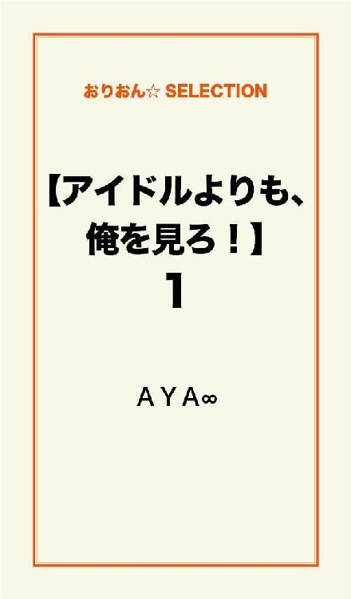
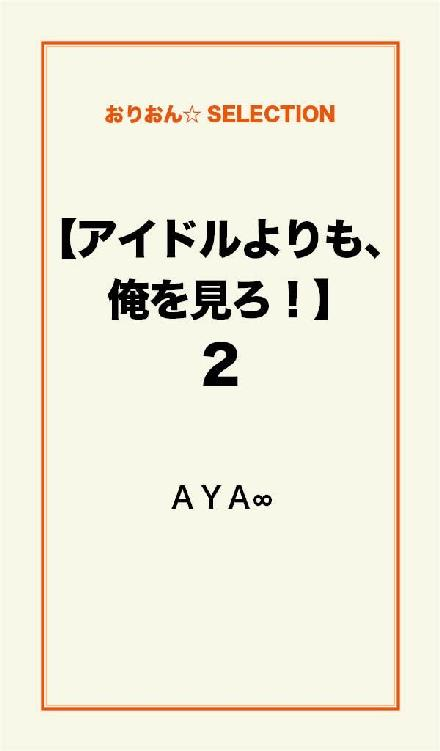

| 【アイドルよりも、俺を見ろ！】完全版 | |
| ＡＹＡ∞ | |
この本は横書きでレイアウトされています。
また、ご覧になる機種により、表示の差が認められることがあります。

──......
あなたが好きです。
頭が良くて。
ルックスが良くて。
スポーツ万能。
いつも落ち着いている、あなたでも。
笑顔はまるで、子供みたいに可愛くて。
眩しいくらいに輝いているあなたは、私にとって......太陽。
もしもあなたが太陽なら。
私は、ひまわりになります。
ひまわりになって、あなたを見つめて永久に咲き続けま......
バッ！！
可愛らしい柄の便箋を奪い取ったのは、高校２年の男子生徒。
ここは学校で、今は休み時間。
教室では生徒の全員が、それぞれ楽しそうに喋ったり遊んでいた。
「なになに......？『あなたが太陽なら、私はひまわり』......。はぁっ！？ お前のどこが、ひまわりだよッ！？」
便箋に書かれた文章を読んで、男子生徒は大袈裟に顔をしかめる。
「かっ、返してよっ！！」
かぁぁっ...と頬を赤く染めながら、女子生徒は椅子から立ち上がった。
「リコはひまわりっていうより......つくしだな。」
男子生徒は顔をマジマジと見ながら言うけれど。
つくし......？
「って！！！？ つくしって雑草じゃんッ！！」
それに気付いた女子生徒は、思わず声を上げた。
リコが大好きな人。
それは、今大人気アイドルの暁(ギョウ)。
暁(あかつき)と書いて、ギョウと読む名前もカッコ良いけれど......。
歌を中心に、バラエティやドラマやＣＭ。
たまに舞台やモデルとしても、大活躍している。
暁が作った歌は、全て大ヒット！
クイズ番組に出れば、いつも上位の成績！
１番得意なのはサッカーらしいが、スポーツ万能！
ルックスは文句のつけようが無いくらい、完璧な王子様！
でもふとした時に、子供みたいな可愛らしい笑顔を見せたりして。
そのギャップがヤバイ！
そして......。
「返してよっ！！」
取られた便箋を取り返そうと、ピョンピョン！と跳ねながら手を伸ばすが。
ほっ。はっ。ほいっ。
なんておちょくったように、便箋を持った手を高く上げてリコをかわす男子生徒。
この意地悪な男は、岬(みさき) 健(たける)。
テストは毎回赤点の、おバカさん。
けれどそんなこと気にしない、ポジティブな性格。
背が高くて、そこそこ整った顔。
ルックスは、なかなか良いかもしれないけれど......。
ルックスだけ良くても、意味が無い！
やっぱり男は......。
暁みたいに、輝いていないとっ！！
だが。
そんな健でも、輝く瞬間がある......。
キュッ......キュッ......！！
体育館に響くのは、バスケットシューズが床に擦れる音。
今、体育館ではバスケ部が２チームに別れて、練習試合をしている。
「健ッ！！」
ボールを持った男子生徒が、斜め前にいる健にパスをした。
ボールを受け取った健は、敵を綺麗にかわしてゴールに向かう。
そんな姿を、２階のギャラリーからリコは見ていた。
ギャラリーや体育館の端には、他にも沢山の女子生徒達が見に来ている。
みんなバスケよりも、カッコ良い部員が目当て......。
健は敵に囲まれても、フェイントで上手くかわしてゴールに走る。
走ることで髪が揺れて、光る汗が飛んだ。
高い位置にあるバスケットゴールに向かって、そのままダンクシュート！！
ピーッ！！！！
そのすぐ後に、体育館には試合終了のホイッスルが鳴り響いた。
健のチームが勝って、メンバーは嬉しそうな笑顔を浮かべながらハイタッチをしていく。
ふと、健は誰かを探すようにギャラリーをキョロキョロと見渡した。
「......？」
誰を探しているんだろう？と、不思議に思っているリコの方に振り向いた瞬間。
まるで『みつけたっ！』なんて、嬉しそうな笑顔を浮かべて。
ブイッ！！と、リコに向かってピースをした。
キラキラと輝いて見える健に......。
「んべーっ！！！！」
リコは思いっ切り舌を出した。
「なっ！！！？ お前ッ！ 可愛くねぇぞッ！！」
嬉しそうな健の笑顔は一瞬にして、不満そうな膨れっ面に変わる。
可愛くなくて結構！
リコが『可愛い』と思ってほしい男性は、この世でたったひとり。
大好きな、暁だけ。
「帰りクレープ奢れーッ！！」
むきーっ！！ と喚いていると、バスケ部の顧問の先生に注意されていた。
ざまーみろ！！！！
学校帰り。
「やっぱ良い汗かいた後の、甘いモンは美味いッ！」
歩きながら嬉しそうに苺のクレープを頬張っているのは、健。
風船みたいな膨れっ面は、クレープを奢った瞬間に直って。
なんて単純な奴だと思う......。
「少し食う？」
健は苺のクレープを、隣を歩くリコに差し出してきたけれど。
「いっ、いらない......っ！！」
少しあわてて、リコは首を横に振った。
「んだよ。汚ねぇとか思ってんの？」
少し拗ねた表情を浮かべて、健は自分がかじった部分を見る。
「そっ、そういう訳じゃないよっ！！ その......今......間食はしないようにしてるの......」
はっきりと否定した後、何故かリコはシュンと元気の無い表情を浮かべた。
間食をしないようにしている？
つまり、ダイエットをしているということ......？
「暁のファンの子って、可愛い子が多いんだよね......」
「......はっ？ だからっ？？」
真面目な表情でリコは言うけれど、健は『それがどうした？』って意味が分からない様子。
「他の子達に、負けたくないっていうか......。差をつけられたくないっていうか......」
「......暁のため......？」
そう聞いた健は、どこか淋しそうで。
けれどリコは、そんなことには気付かずに。
「女の子は、好きな人のために可愛くなりたいって思うものなのっ！」
照れで仄かに頬を赤く染めながらも、はっきりと答えた。
「......バッッッカじゃねぇのっ！！！！」
「なっ！！！？」
きっぱりと否定されて、リコは思わずショックな声を上げる。
でも......。
「むちゃなダイエットなんかしたら、リバウンドするんだからなっ！！」
『ブタになるぞブタにっ！！』って、健は右手の人差し指で自分の鼻を押した。
ブタ鼻をつくって『ブーブー！！』言っている。
でも、それは。
リコの暁に対する想いを、否定している訳じゃない。
「男はちょっとくらいポッチャリしてる女の子の方が、健康的でカワイイと思うもんなんだよ！」
残りわずかになった苺のクレープを持っていない方の手で、リコの頭をグシャグシャと少し乱暴に撫でた。
いつもいつも、意地悪なくせに。
たまに優しくするから。
調子狂うよ......。
「あーんっ！」
残り一口となったクレープを、健はリコの口元に持っていく。
『あーん......』と、少し照れながら口を開けるけれど。
クレープはリコの口元からＵターンして、健の口のなかにパクッ！！ と入った。
「うんまっ！！」
幸せ顔してモグモグと口を動かす健。
「リコには代わりに、これを授けよう」
これって......クレープを包んでいた紙......。
いらないしっ！！！！
訂正！！！！
やっぱりめちゃくちゃ意地悪ッ！！
イヤな奴ッ！！
健と別れたリコが家のドアを開けると、リビングの電気が付いていた。
ガチャッ......。
リビングのドアを開けると、ソファではスーツ姿の父が疲れた顔をして眠っている。
酔いつぶれている訳じゃなく。
家に着いた途端、力が抜けて動けなくなっている様子。
「お父さん！？ こんな所で寝てると風邪ひくよっ！？」
心配そうに近寄って、起こそうと体を揺らした。
高校生の女の子なら、父親がウザイとか汚いとか思ってしまうもの。
でも、リコにはそんな感情無い。
「ほらっ、お母さんも心配してるよっ！？」
部屋の端には、母親の写真が飾られた仏壇がある。
「んっ......リコ......」
疲れた表情のまま、やっと目を覚ました途端。
「今日、学校はどうだった......？ イジメられてないか......？ つらい思い、してないか......？」
クタクタに疲れているくせに、リコのことを気にかけてくれた。
お母さんが亡くなってから、少し心配性になった父に。
「大丈夫ッ！ 何かあったら、絶対に言うから！」
明るく微笑みながら答える。
「そっか......」
すると父は、やっと安心してくれた。
「お父さんも、体は大切にしてよねっ！」
『ほらっ、立って！』って、ソファから立たせる。
リコの家族は......もうお父さんしかいない。
リビングから出ると、リコは自室に入った。
パチッと、室内の電気を付けると見える。
壁に貼られた、暁のポスター。
本棚に並べられた、アイドル雑誌や暁の写真集。
机の上には写真立てに入った、暁の写真。
リコはベッドにダイブすると、枕のそばに置いていたヘッドホンを耳にあてた。
ＣＤプレーヤーの再生ボタンを押すと、流れてくる。
暁の優しい歌......。
お母さんが亡くなったのは、去年のことだった。
体が弱くて、入退院を繰り返してはいたけれど。
病状が急変したことが原因......。
リコが幼い頃から、お父さんは仕事人間で。
ほとんど家にいることはなかったから。
リコはお母さん子で、お母さんが大好きだった。
大好きなお母さんが亡くなった時。
悲しくて、苦しくて、辛くて。
まるで闇のなかに閉じ込められたみたいに、何も見えなくなった......。
家のなかにいても。
学校にいても。
孤独しか、感じられなかった......。
リコは無意識に学校の屋上に上がって、フェンスの前に立った。
休み時間なため、校庭には沢山の生徒達が遊んでいる。
フェンスの向こう側に行こうと、手をかけた時。
♪～♪♪～♪～
リコの耳に届いたのは、暁の優しい歌だった。
校内放送で流れてきた暁の歌は、リコの耳と心のなかにそっと入ってくる。
『今は酷い雨が降っていても、いつか必ず晴れる時がくる』
『晴れた時、見える虹はきっと綺麗だから』
『前を向くことを、やめないで』
『長く続く君の道を、終わらせないで』
暁が書いた歌詞のひとつひとつが、リコの心に光を照らしてくれた。
涙が、止まらなかった......。
気持ちが落ち着いてから、気付いたこと。
あれだけ仕事人間だったお父さんが、なるべく早く帰ってきてくれるようになったこと。
夜中にリビングで飲まないお酒を飲んで、ひとりで泣いている姿も見た。
お母さんが亡くなって悲しいのは、リコだけじゃない。
お父さんも悲しい気持ちを抱えたまま、リコのために働いてくれている。
見えなかったものが、少しずつ見えてきた。
あの時から......ずっと。
光をくれた、暁に恋してる。
アイドルとか、ファンとか。
叶うとか、叶わないとか。
そんなこと、どうでもいい。
ただ、暁のことがどうしようもないくらい好きなだけ。
暁が１番。
大好きで。
大切な人......。
杉(すぎ)下(した) りこ
高校２年生。
調理部。
大好きなお母さんが病気で亡くなって、心を閉ざした時。
暁の歌に救われて、それからずっと暁のことがファン以上の気持ちで好き。
健のことは、イヤな奴だと思っているくせに。
何故かいつも一緒にいる......。
異性や恋愛に、あまり興味は無い。
興味があるのは、暁のことだけ。
岬(みさき) 健(たける)
高校２年生。
バスケット部。
テストは毎回赤点の、おバカさん。
けれどそんなこと気にしない、ポジティブな性格。
背が高くて、そこそこ整った顔。
ルックスは、なかなか良い。
いつもリコのことをからかって、遊んでいる。
自分の本当の気持ちを素直に伝えられない、不器用な性格......。
暁(ギョウ)
22歳。
自分で作詞・作曲をした、歌を中心に。
バラエティやドラマやＣＭ。
たまに舞台やモデルとしても。
大活躍をしている、今大人気のアイドル。
頭が良くて。
スポーツ万能。
ルックスが良くて、いつも落ち着いている。
だが、ふとした時に見せる笑顔は、子供みたいに可愛い。
もうすぐテスト期間に入る。
ほぼ全校生徒が嫌な表情を浮かべて、必死でテスト勉強をするけれど。
リコにとっては、それほど嫌ではない。
寧ろ、ハッピーな時期でもあった。
何故なら......。
テスト期間の１週間前になると、ほぼ全部の部活が、テストが終わるまで休みになる。
リコが入っている調理部も、休みになり。
いつもより、早く帰れる。
普段からしっかりと授業を受けてノートを取り、宿題もきちんとやっているから。
リコはそんなにテスト勉強をしなくても、毎回平均点は取れていた。
上を目指す気は無い。
だからといって、下がるわけにはいかない。
平均点をキープすればいいリコにとって、テスト勉強は『それなりにやればいい』ものだった。
つまり！
時間に、余裕ができる！
イコール！
暁との時間ができる！
暁が載っているアイドル雑誌を、隅々まで読んで。
暁が出演しているドラマやコンサートのＤＶＤを、全部観て。
暁が作詞・作曲をしたＣＤを、何十回も聴いて。
もうすぐ、暁でいっぱいになれる日々がやってくる！
まぁ、普段からもリコの頭のなかは、暁のことでいっぱいだけれど......。
休み時間の学校。
廊下を歩くリコの姿は、落ち着いているように見えるけれど。
内心では『ヤッホーッ！！』とか『イエーイッ！！』とか。
スキップしそうなくらい、ルンルン気分だった。
そんな時。
「杉下！」
後ろから名前を呼ばれて、リコの足は止まった。
振り向くとそこにいたのは、50代前半の男性教師。
「武田(たけだ)先生......」
リコと健のクラスの担任でもある、武田だった。
「杉下にな、頼みたいことがあんねん」
申し訳無さそうな表情での、意外な言葉。
『頼みたいこと？』と不思議に思ったリコは、小さく首を傾げた。
この時は、思ってもいなかった......。
まさか......。
まさか。
まさか！
『暁との時間が奪われるなんてーっ！！』
リコの心のなかには、ショックな叫び声が響いた。
今は放課後。
生徒の全員が帰った教室に、リコは残っていた。
２つの机を、向かい合わせに並べて座っていて。
向かい側の席には......。
「よろしくお願いしまぁーっす！」
何故かとってもご機嫌な、健が座っていた。
「なんで......？ なんで私がっ、健に勉強教えなくちゃいけないのよーっ！！」
『神様ッ！ 私何か悪いことしましたかーっ！！！？』って。
心のなかでは、天に向かっても叫んだ。
『放課後、岬に勉強教えてやってほしいねんっ』
頭のなかに思い出すのは、武田との会話。
「はっ！！！？ えっ！？ 私がですかっ！？」
「あいつの成績が悪いんは、お前も知っとるやろ？」
確かに健は、テストは毎回赤点のおバカさん......。
「また赤点取らんように、テストが終わるまででええから。教えてやってくれへんか？」
「なっ、なんで私なんですか......？」
テスト前になると、武田のところには沢山の生徒達が分からないところを聞きに来るから。
健だけに教えるなんて、無理だろうけれど...。
「私、平均点しか取れないし......」
上を目指すつもりもないし。
「もっと良い点取れる子に頼んだ方が......」
「良い点取れる子は、上を目指すから自分のことで精一杯やねん」
『とても岬のことまで頼めんわ』って、困ったように頭を掻いた後。
「それにお前達、付き合ってるんやろ？」
真顔でのその言葉に、リコはブッ！！！！ と吹き出しそうになった。
口のなかに何も入ってなくて良かった......。
「付き合ってませんからっ！！！！」
思わずムキになって、キッパリスッパリ否定する。
「私好きな人いるしっ！！！！」
スクリーンの向こう側にいるけれど。
実際に会ったことも、話したことも、ないけれど。
頭が良くて。
ルックスが良くて。
スポーツ万能。
いつも落ち着いているけれど。
笑顔はまるで、子供みたいに可愛くて。
眩しいくらいに、輝いている。
世界で１番、素敵な人。
そんな暁に、恋してる......。
「とにかく、仲が良いことに変わりないやろ？」
「えっ？ あっ、えっと......」
仲......良いのかな？
いつもいつも意地悪されて。
イヤな奴だと思うことは、沢山ある。
でも、気が付くといつも一緒にいるんだよね......。
「それとも、何か用事あるんか？」
「えっ！？ あっ......」
教師として、真面目に頼んでいる武田に。
『暁が載っているアイドル雑誌を、隅々まで読んで』
『暁が出演しているＤＶＤを、全部観て』
『暁が作詞・作曲したＣＤを、何十回も聴いて』
『暁でいっぱいになりたいんですっ！！』
なんて。
言えません......。
そして、今になる。
「まずは数学からね」
「ほいっ！」
小さく溜め息を吐いてから、リコは机の上に数学の教科書を出した。
「分からないところは？」
「......ほとんど？」
苦笑しながら聞き返されても......。
「......とりあえず、テストに１番出そうなところから始めるね」
『こんなんで赤点以上の点数取れるのかな？』って。
不安になりながら、リコはシャープペンを握った。
ふと、健の手にある数学のノートを見て気が付く。
ページの片側の端に、何やら落書き......？
「それ......」
「ん？ あぁ、見せてやろうかっ？」
得意気な笑みを浮かべて、健は不思議そうな表情を浮かべたリコにノートを差し出した。
ノートの片側の端に書かれた落書きは......次のページにも、その次のページにも。
似た絵が書いてあって。
パラパラとページをめくると、落書きはまるでアニメのように動いて見えた。
「へぇっ......すごいっ！ 面白いっ！！」
「だろッ！？」
感動しているリコを見て、健は嬉しそうに笑った。
......って。
和んでる場合じゃないっ！！
「授業聞かないで書いてるのっ！？」
「だって、勉強つまんねぇんだもんっ！！」
少し怒ったようにリコが聞くと、健も少しムキになって答えた。
誰だって、勉強が面白いなんて思ってない！！
「赤点ばっかり取ってると、卒業出来ないよっ！？ 一緒に卒業したくないのっ！？」
リコの『一緒に』の言葉に、特に深い意味は無い。
だが、健は何故か仄かに頬を赤く染めて。
「リコと一緒に、卒業したいです......」
何故か普段では絶対に使わないような、敬語で答えた。
変な健......。
「まずは、この問１から」
気を取り直して、リコは真剣に問題の説明を始めた。
説明する口調は、真剣で丁寧なもの。
楽しみにしていた暁との時間は、無くなってしまったけれど。
武田の頼みを引き受けたわけだから、責任を持って教えないと。
教科書を見ながら説明をしていたリコは、理解してくれているのを確認するように、健の表情を見た。
健は真剣な表情で聞いていて。
リコがシャープペンで指す教科書を見ながら、指先を下唇にあてて考えたりする。
ちょっぴり、カッコ良いかもしれない......。
おバカさんだし、いつも意地悪だけれど。
背が高くて、顔もそこそこ整ってて。
ルックスだけは、なかなか良いんだよね......。
「健って......好きな人いるの......？」
自然と口から出た質問に、健はキョトンとした表情を浮かべて。
それ以上に、リコ本人が『私、何聞いてるんだろうッ！！！？』って、あわてた。
「気になる？」
「べっ、別にっ！！ 全然ッ！！ これっぽっちもッ！！！！」
ニヤリと意地悪な笑みを浮かべる健に、リコはあわててキッパリと否定する。
「好きっつーか......その......めちゃくちゃ気になる奴ならいる......」
仄かに頬を赤く染めて、健は視線をそらしながら答える。
「でも......そいつはいっつも、他の男のこと見てる......。他の男のこと『好き』とか『カッコ良い』とか言ってんの聞くたびに、ムカついて......。ついつい、意地悪ばっかしちゃうんだよな......」
そう告げるその表情は、片思いをしている男の表情そのものだった。
そんな健に......。
「私もね、暁のこと大好きなんだけど......。きっと暁は、私の存在も知らなくて......。
この恋が叶うのは、何十万......何百万や、何千万の、１の確率しかないんだよね......」
淋しそうに、けれど真剣に伝えるのは、リコの胸の奥にある想い。
「でも......それでも私は、暁が大好きだから！ たった１％の確率でも、大事にしたいんだ」
照れ笑いを浮かべるその表情を見て、暁のことがどれだけ好きなのかが分かる。
「健も、その子のこと『好き』だと思うようになったら、絶対に諦めちゃダメだよっ！？ どんなに低い確率だとしても、大事にしてねっ！？」
励ますように、健は明るい笑顔を向けられるが。
自分に気になる人がいることを知っても、全然気にしないリコに......胸が痛む。
「私が応援してあげるっ！！」
おまけに『その子と上手くいってほしい！』とまで思われて。
「......バーカ。お前に応援なんかされたら、上手くいくもんもいかなくなるっ！」
ベーッ！ と、健はリコに意地悪く舌を出した。
意地悪をする理由は、ヤキモチだけが理由じゃない。
胸の痛みを堪える、精一杯の強がり......。
「あっ、そういうコト言うっ！？ まずはその意地悪な性格、直した方がいいよーだっ！！」
少しムッとして、リコは負けじと健に向かって舌を出す。
健の胸の奥に隠している想い。
この時のリコには、まったく気付かなかった......。
テスト勉強を終わらせて、鞄を持ったリコと健は下駄箱の前にいた。
時間はそれほど遅くないのに、暗くなった空。
そこから降るのは、冷たい雨......。
「うっそ！ 傘持ってきてないよぉ」
困惑した表情を浮かべて、リコは空を見上げた。
「３００円で入れてやろっか！？」
冗談でニヤリと意地悪な笑みを浮かべて、健は紺色の傘を向けた。
「お金取るの！？」
冗談だと分かっているから、リコは冗談で驚いたフリをするけれど。
何故か、すぐに元気が無いように笑みが消える。
「リコ......？」
そんな様子に気付いた健が声をかける。
「今日......暁のＣＤと雑誌の発売日なんだよね......。帰りにお店、寄りたかったな......」
なんで傘、持ってこなかったんだろう？
なんで雨、降るかな？
天気予報では、降るなんて言わなかったのに......。
「......これ、使えよ」
少し迷ってから、健はリコに傘を差し出した。
「えっ......」
使えって......傘は、これ１本しかないのに？
「俺、鞄のなかにもう１本傘あるの忘れてたっ！」
明るく笑って健は、持っている学校の鞄をポンポン！と叩いた。
その様子は、嘘を吐いているようには見えなくて。
「ありがとうっ！！」
リコは安心したように笑顔になって、傘を受け取った。
「暁のＣＤ、健にも聴かせてあげるからねっ！！」
『本当にありがとう！！』って感謝しながら、リコは傘をさして校舎から離れて行く。
笑顔で見送っていた健だけれど......。
リコの後ろ姿が小さくなると、表情からは笑みが消えて。
「......俺、なにやってんだろー」
深い溜め息を吐くと共に、肩を落とした。
雨を防ぐように鞄を頭の上にかざして、小走りで校舎から出る。
もう１本の傘なんて、持ってない。
元気の無いリコを見て、思わず嘘を吐いただけ......。
ＣＤショップにも本屋にも、一緒に行けば良かったのかもしれないけれど。
暁を見て、幸せそうに笑うリコを......見たくなかった。
たとえ相手が、アイドルでも。
リコは本当に、暁のことが大好きだと分かるから。
他の男を見て、嬉しそうに笑う姿。
これ以上、見たくなかった......。
翌日の朝。
リコが教室に入ると。
「おはよう、リコ！」
同じクラスで空手部の、男子生徒が声をかけてきた。
「おはよっ！ 成(せい)志(じ)！」
ご機嫌な笑顔を浮かべながら、リコは男子生徒に応える。
背が高くて逞しい体つきの成志は、元々は健の友達で。
リコが健と仲良くなってから、自然と話すようになった。
「朝からご機嫌だな。暁の新曲、そんなに良かったのか？」
「もうっ、超ー超ー！ めちゃくちゃ良かったッ！！」
暁のことを聞かれた瞬間、リコはとびきりの笑顔を浮かべて答えた。
「特典でＤＶＤが付いてくるんだけど、それがもの凄くカッコ良くてッ！！」
思い出しながらキャッキャッ！ とはしゃいでいたけれど。
「......あれ？」
ふと、あることに気が付いた。
「健は......？」
かるく室内を見渡しても、健の姿は見当たらない。
「そういや、今日はまだ来てないな......。今はテスト前だから、部活も無いはずなのに......」
『どうしたんだろうな？』って、成志も気になった表情を浮かべた。
キーンコーン......カーンコーン......
学校のチャイムが鳴って、教室にいる生徒達が席に着く。
とりあえずリコと成志も席に着くと、教室のドアが開いて武田が入ってきた。
そして......。
「今日の欠席は、岬だけやな」
教壇に立った武田の言葉に、リコは驚いた。
健が学校を休むなんて、珍しいから。
でも、それ以上に......。
「岬のお母さんが言うには、昨日雨に濡れて帰ったことが原因らしい。熱が下がらんから、今日は休むって」
武田が言った、健が風邪をひいた原因に驚いた。
雨に濡れて帰った......？
健は鞄のなかに、傘を持っていたんじゃなかったの......？
本当は１本しかなかった傘を、リコに借してくれたということ......？
「テスト前なんやから、みんなも風邪ひかんようになっ！」
「はーいっ！！」
武田の言葉に、生徒のほぼ全員が返事をするなか。
リコだけは、そのことで頭のなかがグルグルと混乱していた。
いつも、いつも、意地悪だから。
１本しか持っていない傘を、まさかリコに譲ってくれるなんて。
思いもしなかった......。
雨に濡れたことが原因で、健が風邪をひいてしまったのなら。
それはリコにも、責任がある......。
「健の家の住所、知ってたら教えて......？」
少し元気の無いリコの言葉に、成志はキョトンとした表情を浮かべた。
「なに......？ 見舞いに行くのか？」
「うん。一応ね」
そう、一応。
別に健が心配な訳じゃない。
もし傘のことがなかったら、お見舞いに行こうとなんて思わないし！
寧ろ『いつも私に意地悪をするから、罰が当たったんだ！』って、笑ってやりたいし！
「今、簡単な地図書いてやるから。ちょっと待ってな」
穏やかに微笑みながらそう言うと、成志はノートの紙を１枚破って、シャープペンで書き始めてくれた。
成志は優しい。
同い年だけれど、落ち着いていて頼もしいから。
兄のような存在に思える。
健もこれくらい優しかったら、もう少し好きになれるんだけどな......。
学校帰り。
リコは学校の鞄の他に、お見舞いの果物が入った、白いビニールの手さげ袋を持って歩いていた。
男子生徒独特の少し大きくて汚い字で、成志が書いてくれた地図を見ながら歩いていく。
暫くして着いたのは......２階建ての、白い一軒家だった。
特別綺麗で大きいという訳ではないけれど。
それでも、そのへんの家と比べたら、しっかりとした造りだと思う。
表札を見ると『岬』の名字。
健の家に、間違いない。
インターホンを、１回押してみる。
.........。
家のなかから、応答は無い。
家の人、留守かな？
健は寝てるのかも。
もう１回だけ押して、もし応答が無かったら帰ろう。
そう思って、もう１回インターホンを押すと。
......ガタッ！！！！
家のなかから、何かが倒れるような物音がして驚いた。
そのすぐ後に。
「バウバウッ！！！！」
犬の鳴き声が聞こえてきた。
それも、なんとなくだけれど......心配そうに鳴く声。
「健ッ！？」
驚いた弾みで、リコは家のドアノブを掴んだ。
鍵がかかっているから、当然開かないと思っていたドアは......。
ガチャッ！
物騒なことに、鍵がかかっていなくて開いた。
『勝手に入るのはどうだろう？』とは、思うけれど。
今はそんなこと、考えている場合じゃない気がする！
「お邪魔しまーす......」
そっと家のなかを覗きながら、玄関に入った途端。
「バウバウッ！！！！」
部屋の奥から茶色いモップみたいな大型犬が走ってきて、思わずリコの体がビクッ！！ と反応した。
「バウバウッ！！！！」
リコに向かって吠える犬。
けれど......不法侵入をした人物に、番犬のように吠えているわけじゃなくて。
これもまた......なんとなくだけれど。
『こっちに来て！』と、呼ばれているような気がする......。
靴を脱いで家のなかに上がると、部屋の奥に入って行く犬の姿を追う。
犬は時々リコが付いて来ていることを確認するように、振り向きながら歩いて。
辿り着いたのは、ある部屋のドアの前だった。
少し開かれたドア。
隙間から見えたのは......。
「ゴホゴホッ！！！！」
ベッドのそばの床に倒れて、酷い咳をしている健だった。
「健ッ！！！？」
あわててリコは部屋のなかに入った。
犬もすぐ後から、心配そうに駆け寄って来る。
でも健は、リコが来たことが分からないくらい、ゼェゼェと息を苦しそうに乱していた。
触れた体が熱い......。
着ているシャツも湿っぽくて、汗を沢山かいているんだと分かった。
健がひとりで立っていると......。
「健......」
ふいに後ろから呼びかけられた。
いつも聞いている、可愛い声。
「リコ......」
何気なく振り向くと、そこにいたのは......。
なんと、下着姿のリコだった。
「なっ！！！？ おっ、おまっ...なんてかっこ！！！？」
ボッ！！！！と体中を真っ赤に染めて、健は片手で目元を押さえる。
何で下着姿！！！？ と、頭のなかでは混乱しつつも。
見てはいけない！！！！ と、片手で目を隠しつつも。
淡いピンク色のレースの下着を纏ったリコは、可愛くて色っぽくて......。
指と指の隙間から、ちょっぴり覗いてしまう。
そんな健に、リコはギュッ......と抱き付いてきた。
そして。
「健が好き......っ」
「はっ！！！？ えっ！！！？」
思いもしなかった言葉を告げられて、もの凄く驚いた。
いつも『暁が好き！！』って、言ってるくせに......。
「暁なんかより、健の方が好きだよ......っ」
潤んだ瞳と、身長差から上目遣いに言われて。
思わず胸は、キュン......と締め付けられた。
リコはかるく背伸びをして、健の唇をペロリと舐めてくる。
「ッ！！！？」
なんて大胆な！！！？
ペロペロ......。
唇だけじゃなくて、顔中を舐めてくる。
そんなことをされて......理性はぶっ飛んだ。
だって、男の子だもん。
高校生だもん。
「リコッ！ 俺もお前が好きだッ！！！！」
思い切り想いを告げると共に、両手でリコの頬を包む。
目を閉じて、深く深くその唇に唇を重ね合わせた。
...............あれ？
ちょっとした違和感。
リコの顔って......。
こんなに毛深かったかな......？
ゆっくりと目を開けた、健の視界に映ったのは......。
茶色いモップのような毛並みの、大型犬。
今の状況。
冷やした女の子物のハンカチを額にのせて、ベッドに寝ている健の体の上に、心配そうに乗っている犬と......深いキス。
「おぇぇ......！！！！」
上半身を起こすと、健はペッペッ！ と口元を拭った。
たとえ愛犬でも、無我夢中でディープキスはありえない......。
犬は特に気にすることもなく、のん気に尻尾をパタパタと振っていた。
けれど、その時。
「健ッ！！！？」
あわててそばに来た制服姿のリコを見て、驚きで胸がドキッ！ と高鳴った。
「リコ......？」
「お見舞いに来たら健が倒れてたからっ、ビックリしちゃったよっ！？」
リコがお見舞いに来てくれた......？
信じられないような、嬉しい気持ちでいっぱいになるが。
待てよ。
『これも夢じゃないだろうな？』と、疑ってしまう......。
ジーッ......と、疑いの目で見てくる健に構わずに。
『熱、少しは下がったかな？』なんて、リコは心配そうな表情を浮かべて顔を覗き込む。
健は疑いの目のまま、そっと手を伸ばして......。
ピトッ！
リコの胸に、指先でタッチしてみた。
.........。
まるでリコは固まったかのように、ほんの少し動かなくなった後。
バッチーン！！！！
思い切り頬を叩いて、健はかるく吹っ飛んだ。
「いきなり何するのっ！！！？ 暁のところにお嫁に行けなくなったら、どうすんのよっ！！！？」
頬を真っ赤に染めながら、怒ったリコの言葉を聞いて、やっと夢じゃないと理解した......。
落ち着いた頃。
「健が寝ぼけて、胸を触ったのが悪いんだからねっ」
まだ少し頬を赤く染めて、ムッとしているリコ。
「すんません......」
ヒリヒリと痛む頬を撫でながら、ベッドに座っている健はペコリと頭を下げた。
「......健......。昨日......１本しか持ってなかった傘を、私にかしてくれたの......？」
さっきまでムッとしていたはずのリコが、申し訳無さそうな表情を浮かべてきて。
図星を指されたことで、健はギクッ！！ と体が反応した。
「ばっ、バカッ！！ そんなワケねぇじゃんッ！？ そのっ、あれだっ！！ 鞄に入ってた傘が壊れてて、つっ、使えなかっただけだッ！！」
かなり動揺しているせいで、頬を赤く染めながら言葉がどもってしまう。
「つーかっ！ 傘が１本しかなかったら、ぜってぇーお前には借さねぇよっ！ お前が雨に濡れようが風邪ひこうが、俺には関係ねぇからなッ！！」
照れ隠しで、いっぱいいっぱいで。
言った後に、ハッ！！ と気が付く。
言い過ぎた......ということに。
「なによ......何でそんなふうに言われなくちゃいけないのっ！？ せっかく心配して来たのにっ！！」
あれ程『傘の件があるからで、心配だからお見舞いに行くんじゃない！』って、思っていたのに。
ムキになったリコの口から出た、これこそが真実かもしれない。
「もう帰るッ！！」
床に置いていた学校の鞄を持って、帰ろうとした時。
「ちょっ、ちょっと待てッ！！」
健はあわててリコの腕を掴んで、引き止めた。
「その......言い過ぎた......マジで、ごめんな......？」
少し俯きながら健が声にするのは、素直な反省の言葉。
いつも、いつも。
照れ隠しや、誤魔化しのせいで。
意地悪ばかり、言ってしまう......。
思ってもないこと、言ってしまう......。
「来てくれて......サンキュな......」
仄かに頬を赤く染めて、声にするのは精一杯の気持ち。
そんな健に『仕方無いな......』と、小さく溜め息を吐いてから。
「少しは何か食べれそう......？」
リコは優しく声をかけた。
シュンと反省したように俯いていた健が、そっと顔を上げる。
まるで親に叱られた時の子供みたいな表情をしている健が、可愛くておかしくて。
思わず小さく笑みがこぼれた。
シャリッ......。
ベッドに上半身を起こして座ったまま、健はリコがお見舞いに持ってきてくれた果物を食べている。
食べやすいサイズに切ってくれた林檎......味は風邪のせいで分からないけれど。
リコが用意してくれたと思うだけで、嬉しくて美味しい。
健はふと、林檎から部屋の方に視線を向けた。
ドッグフードが入った皿を持ったリコが、尻尾をパタパタと振った犬の前に立っている。
「健。この子、名前なんていうの？」
「......オルガン」
「へぇっ......」
オルガン。
小学生の頃、よく担任の先生が弾いてくれた楽器のことかな......？
「オルガン、お座りっ！」
「バウッ！！」
リコの指示に元気良く返事をすると、オルガンはシャキッ！ と背筋を伸ばして座った。
『おぉっ！』なんて、思わず感動しているリコの姿を見て、健は柔らかい笑みを浮かべる。
リコはオルガンの前にドッグフードが入った皿を置いて、視線を合わせるようにしゃがみ。
「待てっ！」
右手をストップ！ というように前に出して、指示を出すと。
「バウッ！！」
元気良く返事をして、オルガンは右手をリコの右手と合わせた。
ハイタッチをしているような状態......。
「え......？」
思いもしなかった状態に、思わずリコはキョトンとした。
これって......『待て』じゃなくて『おて』。
自信満々に答えるけれど、間違っている。
そんな、おバカさんな姿......。
「飼い主に似ちゃったのね......」
「どういう意味だよっ！？」
『可哀想に......』と哀れむリコに、健は思わずツッコミを入れた。
軽い食事を終えて薬を飲んだ健は、再びベッドに横になっている。
リコは食器を片付けに行ってくれたから、部屋にはいなくて。
オルガンが床に伏せて、寛いでいた。
まだ少し体はダルイけれど、それでもかなり良くなったと思う。
リコが来てくれて、良かった......。
リコ......。
健の頭のなかに思い出されるのは、夢に出てきたリコ。
下着姿で『健が好き』なんて言う姿を思い出して、ボン！！ っと再び体中が真っ赤に染まった。
「くっそーっ！！！！」
『なんであんな夢見てんだよッ！！！？』って。
両手で赤く染まった顔を押さえて、足をバタバタさせる。
だいたい『暁なんかより、健の方が好きだよ』なんて。
間違っても言うはずないのに......。
いつもそばにいるから、嫌でも分かる。
リコの暁への......深い想い。
リコにとって暁は、アイドルじゃない。
『好きな人』なんだ。
「......ムカつく」
赤く染まっていたはずの顔は、今は切なさに染まっている。
「俺が、暁に勝てるわけねぇじゃん......」
頭が良くて。
ルックスが良くて。
スポーツ万能で。
落ち着いている。
そんな暁は、男から見てもカッコ良い......。
それに比べて、自分は......。
頭は......毎回赤点。
ルックスは......そこそこ？
スポーツは得意！ 特にバスケ！
落ち着きは......あんまり......。
それでも。
アイドルよりも、俺を見ろ！
いつも１番そばにいる、俺を見ろよ......。
ガチャッ......。
部屋のドアが開いて、リコが室内に入ってきた。
オルガンは床に伏せたまま、パタパタとのんびり尻尾を振っている。
「健......脱いで？」
「......は？」
ベッドのそばの床に座ったリコの言葉に、一瞬頭のなかが真っ白になった。
「してあげるから、脱いで？」
シテあげるから......？
「なッ！！！？ なに言ってんだ、お前ッ！！！？」
思わず頬を真っ赤に染めて、健は上半身を起こした。
これは夢か！！！？
さっきの続きを見てるのか！！！？
なんて、疑わずにはいられない。
「スッキリしたかったはずなのに、気付いてあげられなくてごめんね......？」
申し訳無さそうな表情を浮かべるリコは、どう見ても真剣。
「だっ、ダメだーッ！！」
けれど健は、頬を赤く染めたまま声を上げて拒否した。
「気持ちはすっげー嬉しいけどっ、でもっ、お前もっと自分のこと大事にしろよッ！！ そういうコトは、マジで惚れた奴としかするんじゃねぇッ！！」
説得させるように言う健に、リコはキョトンとした表情を浮かべている。
「体を拭いてあげることって、そんなに大事なことなの......？」
「......へ？」
それぞれ違う意味で、頭のなかには『？』マークが浮かんだ。
リコのそばには、お湯とタオルが入った洗面器。
してあげるって......汗で汚れた体を、タオルで拭いて綺麗にしてあげるってこと......？
一瞬にして緊張が解けて、体の力が抜けたような気がした。
どれだけ汗をかいたんだろう？
脱いだシャツは、まだ微かに湿っぽい......。
「お願いします」
上半身を露わにした健は、ふとリコを見た。
その瞬間。
今度は健が、キョトンとした表情を浮かべた。
視界に映っているリコは、頬を赤く染めて視線を下に向けている。
この反応......。
「お前......ひょっとして、男の裸見んの初めて......？」
「なっ！！！？ わっ！ 私だって、男の人の裸くらい見たことあるわよっ！！ 雑誌やテレビで、暁の裸、何度も見てるもんっ！！」
真顔で聞いた健の言葉に、図星を指されたかのようにリコはあわてた。
雑誌やテレビで暁の裸を見たことがあるとは、言うけれど......。
それは当然、上半身だけのことだし。
やっぱり、実際には見たことがないということ。
つまり......リコはまだ、経験が無いということになる！
それを思った瞬間。
頭の中がパァァッ！ と明るくなって。
クラッカーが鳴り響くなか『ヤッターッ！！！！』と万歳をする健の上で、ラッパを吹く天使達の姿が見えた。
お湯を絞ったタオルで、リコは健の腕や背中を拭き始める。
初めて触れる男の人の体は、細いのにかたくてゴツゴツしていて。
バスケをしているからだとは思うが、逞しさを感じた。
「きもちぃぃー！」
まるで体を撫でられている犬みたいに、健は気持ち良さそうな表情を浮かべる。
「私のお母さん、ずっと入院してて。お風呂に入れない時は、いつもこうして拭いてあげてたから......」
そう応えるリコの表情は、亡くなった大好きなお母さんのことを思い出して、少し淋しそうになった。
「あっ、ねぇ。あの写真に映ってるのって、弟さん？」
『さっきみつけたんだけど』って、思い出したようにリコが指すのは......。
棚の上に写真立てに入って飾られた、１枚の写真。
写真には、小学校の教室にいる小学生の男の子２人が映っていて。
ひとりはバスケットボールを持って笑っているから、多分健。
もうひとりの子は、オルガンの椅子に座って微笑んでいる。
落ち着いた雰囲気と、頭の良さそうな顔。
「年、あんまり離れてるようには見えないけれど......。まだ中学生？ それとも、別の高校に通ってるの？」
興味津々に聞くリコだが、健は何故か淋しそうな表情になって......。
「死んだ」
たった一言、呟くように答えた。
「え......？」
「俺が中１の時、輝(ひかる)は小６で......。交通事故で、亡くなったんだ」
交通事故......。
それはあまりにも、突然すぎる死。
リコのお母さんは、病気で体がどんどん弱くなっていったから。
医者にも『もう長くない』と言われ、死が近くにあることを知ることができた。
けれど交通事故は......さっきまで元気だった人が、突然いなくなってしまうから。
きっと、もの凄く辛かったと思う......。
「初めてリコを見た時......。輝が死んだ頃の、自分を見てるような気がしたんだ......」
毎日毎日、泣いて。
孤独しか、感じられなくなって。
まるで闇に閉じ込められたように、何も見えなくなった。
「だからあんなに、話しかけてくれたんだね......」
その頃のことを思い出して、リコの表情には柔らかな笑みが浮かんだ。
２年生で、初めて同じクラスになった時。
心を閉ざしていつもひとりでいたリコに、健はいつも話しかけてくれた。
男女問わす健は友達が多いから、その子達も仲良くしてくれて。
暁の優しい歌と、健の優しい心が、リコを孤独から救い出してくれたんだと思う。
「あの頃の健は優しかったな......」
少し拗ねたように言うリコに、気付かれないように顔を背けて。
「俺は嫌いな女に、ちょっかい出したりしねぇよ......」
遠まわしに、精一杯に想いを告げた。
しかし。
「きゃっ！！」
健の言葉に丁度重なるように、リコは驚いた声を上げた。
床に置いていた洗面器にオルガンが足をひっかけて、なかのお湯がこぼれてしまったから......。
こぼれた量はそんなに多くないとはいえ、フローリングの床はビショビショ。
「あーぁ......」
床を見て思わず声を洩らすリコに、オルガンは『クゥン......』と反省するように鳴いている。
わざとやったわけじゃない。
遊んでほしくて近寄った時に、足が洗面器にひっかかってしまっただけ。
「大丈夫！ 今綺麗にするから」
それを分かっているリコは、優しくオルガンの頭を撫でた。
「あっ。健、今何か言った？」
想いを声にした健の精一杯の言葉を聞けなかったから、聞き返すが。
「......なんでもねーよ」
あんな恥ずかしいこと、改めて言うのは難しくて。
「リコをからかうのは、面白くて飽きねぇって言っただけ」
いつもの意地悪な笑みを浮かべて上手く誤魔化すと、健は新しいシャツに着替えた。
雑巾で床を拭いているリコと、ベッドで横になっている健。
オルガンは邪魔にならないようにして、リコのそばにいる。
風邪のせいもあって眠気が襲ってきた健は、ゆっくりと目を閉じた。
「健兄ちゃん！」
夢に見るのは、輝との思い出......。
「お前、何その汚ったねぇ犬ッ！？」
少しギョッ！ として、中学１年生の健は小学６年生の輝が抱っこしている子犬を見た。
毛はまるで、使い古したモップのようにボサボサ......。
体のあちこちが、落ちない泥で汚れている。
「拾った！」
「拾ったって......お母さんに怒られるぞっ？」
「だって......ほっておけなくて......」
動物でも人でも。
困っていたり淋しそうにしている人を見ると、ほっておけないのが輝。
健がイタズラをして、お父さんに押し入れや物置に閉じ込められた時も。
自分も怒られるのを覚悟して、輝はいつもコッソリと出してくれた。
「飼いたいな......」
シュンとしている姿を見ると、健はほっておけなくて。
「......わかった！ うちで飼えるように、俺からも頼んでやるよっ！」
「ほんと......？ 健兄ちゃん、ありがとうっ！！」
輝が嬉しそうな笑顔を浮かべると、腕のなかの子犬も尻尾をパタパタと振っていた。
子犬を飼うことを、許してもらえた時......。
「お母さんに許してもらえて良かったね！ オルガン！」
バスルームで子犬の体を綺麗にしてあげながら、輝は嬉しそうに声をかけた。
「オルガン......？」
それを聞いた健は、不思議そうな表情を浮かべて。
開いたままのドアから、バスルームを覗き込む。
「この子の名前！」
「名前ッ！？ お前、もっとカッコ良い名前付けてやれよなぁー。マイケルとか、悟空とか......モップとか！」
マイケルと悟空はともかく。
モップは、見たまんまでは......？
「オルガンでいいの。ねっ？ オルガン！」
「ワウッ！！」
輝が子犬に声をかけると、子犬は嬉しそうに吠えた。
体をプルプルと震わせて、オルガンが水しぶきを飛ばすと。
健は『冷てッ！』
輝は『わぁっ！』と。
驚いて、後退る。
「ねぇ、健兄ちゃん」
「ん？」
「オルガンは、僕達の弟だからね。大事にしてあげてね？」
「......わかってるって。まかせとけっ！」
柔らかい表情でお願いする輝に、健は明るい笑顔で頷いた。
「目指せっ！ イケメン３兄弟！」
なんて冗談を言いながら、健は左手は腰にあてて、右手は人差し指をたてて空を指した。
楽しそうに笑う輝と、ご機嫌に尻尾を振るオルガン。
スポーツは得意だけれど、勉強は苦手な健。
勉強は得意だけれど、スポーツは苦手な輝。
正反対に思える兄弟だけれど。
親戚や近所の人達が感心するくらい、とても仲が良かった。
いつも２人で笑ってた......。
いつも２人で遊んでた......。
オルガンが家族になってから、いつも２人で面倒見てた......。
健にとって輝は、自慢の弟だった。
「よし！ 綺麗になった」
やっと床を綺麗にしたリコは、ふぅ......と小さく溜め息を吐いた。
いつの間にかオルガンは、床に伏せてのん気に眠っている。
「健......っ」
健を見たリコの言葉が、ふと止まった。
ベッドで眠っている健。
けれどその閉じられた瞳から、こぼれ落ちるのは......涙。
「......ひ......かる......」
『輝』
弟の名前を呼ぶ微かな声に、リコの胸は締め付けられた。
リコが闇のなかに閉じ込められた時。
暁の歌が、光をくれた。
健は......？
健に光をくれるような人は、いたのかな......？
「健......」
リコはそっと。
眠っている健に、手を伸ばして......。
指先で、こぼれ落ちる涙を拭った。
何故だろう。
何故か、分からないけれど......。
涙をこぼす、健を見て。
『そばにいてあげたい』
そう思った。
♪～♪♪～♪～
眠っている健の枕元から、携帯電話の着信メロディが鳴り響いた。
今話題の女性アーティストの、テンポの良いメロディ。
「んー......」
眠気から、ついつい不満な声を洩らしながら、健は手探りで携帯電話を掴んだ。
目が開かなくても、触り慣れている携帯電話の通話ボタンは押せる。
ピッ......。
「もぉしもぉし......？」
眠そうな声で、健が通話に出ると。
『......お前、誰だ？』
少しの沈黙の後に聞こえてきたのは、不機嫌そうな男性の声。
「はぁ？ お前こそ誰だよ。」
『寝てるところ電話をかけてきて、それはないんじゃね？』って。
少しムカつきながら、開かなかった目を開けた時。
健の視界に映ったのは......白クマの可愛いマスコットの、携帯ストラップ。
......あれ？
頭のなかが、真っ白になった。
枕元にあったことと。
自分が使っている着信メロディと、同じだから。
てっきり、自分の携帯電話だと思い込んでしまったけれど。
これって......リコの携帯電話！！！？
そういえばこの曲、暁が主演している推理ドラマの主題歌！
『俺は、リコの父親だ』
耳に届いた低い声に、サーッ......と体中の血の気が引いたような気がした。
「りっ、リリリ、リコッ！！！？」
『あいつドコ行った！！！？』って、あわてて上半身を起こした時。
床に座りベッドの端に伏せて眠っているリコに、すぐに気が付いた。
すやすやと寝息をたてて眠っているその姿に、思わずドキン......と胸が高鳴った。
かわい......
「......ぎょぉ......」
くねぇっ！！！！
「起きろーッ！！」
『寝言で暁の名前なんて呼ぶなーっ！！！！』って勢いで、リコが伏せている布団を思い切り引っ張った。
床に転がった姿を見て『ざまーみろ！！』って、笑ってやる。
「いったぁ......。なにするのっ！？」
ムッとして体を起こしたリコに、通話が繋がったままの携帯電話を差し出した。
「俺、寝ぼけて携帯出ちゃったんだけど......お父さん」
『テへ』と、誤魔化すように健は笑うけれど。
...............。
少しの沈黙の後。
「はぁぁぁぁ！！！？」
思わずリコは、驚きの声を上げた。
「もっ、もしもしっ！！！？」
あわてて携帯電話を健から受け取ると、通話に出る。
『今、何時だと思ってるんだ？』
耳に届いたのは、冷静だけど怒りを堪えた低い声。
今何時って......。
リコは部屋の壁に掛けてある、時計を見上げる。
短い針は、９と10の間。
長い針は、12のすぐそばにある。
「......って、10時ッ！！！？」
驚きのあまり、リコは再び声を上げた。
リコの家。
玄関には、制服姿のリコがいて。
１歩後ろには、寝間着から普段着に着替えた健が立っている。
「門限。何時だか分かってるな......？」
２人の前に立っているのは、まだスーツ姿の父。
『いつもクタクタに疲れているけれど、とても優しい』
それが、父の印象なのに。
今はピリピリとした空気で、怒りを堪えている。
「８時の門限......やぶって、ごめんなさい......」
「８時！！！？」
言い訳をすることもなく素直に謝るリコの言葉に、健は『早ッ！！』って驚きの声を上げた。
しかしあわてて口を押さえて、黙り込む。
確かに。
今時高校２年生で、門限８時は早いかもしれない。
けれどこの門限は、お母さんが生きていた時。
３人で決めた約束。
きっと父が家に帰ってきたのは、リコの携帯に電話をする少し前。
家にいるはずのリコがいなくて、もの凄く心配したはず。
怒るのは、当然のこと。
父の右手が、顔の高さまで上がる。
リコは覚悟して、少し俯くとギュッと目を閉じた。
ヒュッ......！！
勢い良く、父の手が振り下ろされる音がして。
パシッ！！
...............？
平手打ちをする音はしたのに、何故か痛みを感じない。
不思議に思ったリコが、そっと目を開くと......。
真っ先に視界に映ったのは、健の背中だった。
父の平手打ち受けたのは、リコを庇って前に立った健。
「健......」
これにはリコは当然のこと、父も驚いた。
「すみませんでしたッ！！！！」
勢い良く、健は父に深々と頭を下げた。
「俺が熱出して倒れてっ、リコが......リコさんが、看病してくれてたんですっ！！ でも、リコさん疲れてて、つい寝ちゃって......っ。俺が悪いんですっ！！」
健が風邪をひいてしまったのは、リコに傘を借したことが原因なのに......。
深々と頭を下げたまま『俺が悪い』と告げる。
「門限をやぶったこと、リコさんは本気で反省してるはずです......。リコさんは、約束を大事にする奴だしっ、いつもお父さんのことを大事に思ってるからっ！ だからっ、許してやって下さいっ！！」
真剣な表情で一生懸命に伝えるその姿を見て、父は小さく溜め息を吐く。
そして。
「わかった」
納得したように、返事をしてくれた。
リコと健が、ホッと安心したのも束の間......。
「だが。二度と娘には関わらないでほしい」
キッパリとした父の言葉に、健はショックを受けた表情を浮かべた。
「お父さんッ！？」
あわてて呼び掛けるリコにも、冷静に。
「リコも、学校が終わったら真っ直ぐ家に帰ってきなさい」
それだけを言うと、父は部屋の奥に入って行った。
翌日の学校。
「昨日は、ごめんね......？ 私が寝ちゃったせいで、あんなことになって」
休み時間。
リコと健はいつものように、一緒にいた。
父は健に『娘に関わらないでほしい』と言ったけれど。
学校でなら、話すくらい大丈夫だろう。
「お父さんはさ、リコのことが心配なんだよ。ひとり娘だからってのもあると思うけど......。お母さん亡くしてるから、余計」
岬家も、家族を亡くしているから分かる。
輝が亡くなる前も、家族は仲良かったけれど。
亡くなってからは、仲良い以上に心配性になった。
もう二度と、家族を失いたくはないから......。
「昨日、お父さんのビンタ受けてそれを感じた」
リコを庇って、健は父の平手打ちを受けた。
けれど、そんなに痛くはなかった。
男だから、痛みを感じなかったとか。
女を叩くから、力を弱めたとか。
それ以前に、本気で叩くつもりなんてなかったからだと思う......。
ただ、伝えたかったのかもしれない。
自分が『どれだけ心配をしたのか』と。
『３人で決めた約束をやぶった重み』を。
「１日だけだったけど、放課後に勉強教えてくれてサンキュなっ！」
ニッと明るく笑って、リコの頭をワシャワシャと撫でた。
学校から帰った健は、制服姿のままベッドにダイブした。
寝転がったまま、学校の鞄から化学の教科書を取り出す。
「しょうがねぇから、自分で勉強すっかぁ......」
溜め息をひとつ吐いて、教科書を開くけれど。
「......これ、答えなんだっけ？」
声に出るのは、頼りない言葉。
「これ、なんでこの答えになるんだっけ？」
頭のなかには『？』マークしか、浮かんでこない......。
ふと、思い出す。
「お前なぁ......毎回赤点取って、どないすんねん」
放課後の教室での、武田との会話......。
「んなコト言ったってー。」
『勉強キライー！』って。
ブーブー文句を言いながら、健は机に顎をのせて伏せた。
「しゃぁない。こうなったら個人指導やな」
「こじんしどぉー？」
小さく溜め息を吐きながらの武田の言葉を、机にタレながら『なにそれ？』と聞き返す。
「ほんまは俺がしてやりたいねんけど。俺は沢山の生徒を見なあかんからな。成績の良い生徒に、お前と一緒に勉強してくれるよう、俺から頼んだる」
まったくやる気の無かった健が、それを聞いた瞬間ピクッ！ と反応した。
「誰がいい？」
「......コ......」
机にのせた腕で顔を隠しながら、ボソッと答えた健の言葉が聞き取れなくて。
「ん？ なんて？」
耳を近付けて聞き直した武田に。
「だぁーっ！！ リコがいいっつってんのっ！！！！」
顔を真っ赤に染めて、恥ずかしさでいっぱいになりながら言い放った。
「リコ......？ 杉下リコか？」
生徒達の名前を名字で覚えているから、思い出すのにちょっぴり時間がかかったけれど。
思い出した武田が聞くと、健は赤い顔のままコクンと頷いた。
「杉下は特別成績が良いわけとちゃうけど。平均点はいつもキープしてる子やしな」
良い成績を目指す生徒は、自分のことで精一杯だし......。
とにかく健に、赤点を取らないでほしいだけだから......。
平均点のリコは、丁度良いかもしれない。
「せやけど、杉下にやったら自分で頼めるやろ？ お前達、付き合ってるんとちゃうんか？」
「え......？」
一瞬、聞き間違いじゃないかと耳を疑った。
どうやら武田は、健とリコが付き合っていると思っているらしい。
つまり。
まわりからみての自分達は、恋人同士だということ！？
嬉しくて、ついつい顔がニヤケそうになる。
『そのとおり！』と言ったら、嘘吐きになるが。
否定しなかっただけでは、きっとそうはならない......。
「いっ、いやー！ 俺って、物覚え悪ぃから、頼みづらくってさ......」
『あはは』と笑って上手く誤魔化した。
「武田先生がリコに頼んでくれたら、俺頑張って勉強するっ！」
武田に頼まれたら、きっとリコもそう簡単には断れないはず！
「......しゃぁないな」
やる気を出してくれた健を見た武田は、『頼んでみるか』って小さな溜め息を吐くと共に頷いた。
♪～♪♪～♪～♪♪～
布団の上にある学校の鞄のなかから、携帯電話の着信メロディが鳴り響いて健は気が付いた。
リコの携帯電話と、同じ着信メロディ。
鞄のなかから健が携帯電話を取り出すと、画面には『リコ』の名前が表示されていた。
ガバッ！！
それを見た瞬間、思わず健は飛び起きた。
ピッ！
「もっ、もしもしっ！？」
通話ボタンを押して出た健の声は、少し緊張している。
『健。今、大丈夫かな......？』
「あっ、おうっ！」
『あのね、電話でよければ......一緒に勉強しない？』
「え......っ」
思いもしなかったリコの言葉に、キョトンとした。
『放課後に一緒に勉強できなくなったの、私のせいだし......』
気にしてくれてたんだ。
そう思うと、自然と健の表情には笑みが浮かぶ。
「......んじゃさ、化学教えてくんねぇ？ サッパリなんだよね」
携帯電話を耳と肩の間に挟んで、鞄のなかからノートとペンケースを取り出す。
布団の上に置いた教科書も持って、そのまま机に向かうと、さっそく電話での勉強会が始まった。
どのくらい、話していただろうか......。
勉強がこんなに楽しいと思えたのは、リコと勉強をするようになってからだった。
携帯電話を通して耳に届くのは......優しくて可愛らしいリコの声。
愛しい。
姿は見えなくても、微かな物音で分かる。
教科書をめくったり、ノートの上にシャープペンがはしる音。
姿は見えなくても、リコの姿が浮かんでくる。
問題の解き方を説明しながら、一緒に考えてくれている姿。
愛しい。
胸の奥にしまっておいた、大切な想い。
この想いを、伝えたくなる......。
「あのっ......健......」
けれどそれを止めるかのように、リコが言いにくそうに声をかけてきた。
「ん？」
「今日はそろそろ......終わりにしてもいい......？」
もうすぐ７時。
夕飯の時間だからか......？
いや......そうじゃない。
「これからクイズ番組に、暁が出るの......」
言いにくそうにしながらも、嬉しそうなリコの声。
高まっていた健の想いは、『暁』の名前が出た瞬間に、落ち込んだ......。
「そっか......」
ズキンとした胸の痛みを堪えるように、返事をする。
「先週は優勝できなかったから、今週は優勝できるといいなぁ」
暁の話をする時のリコは、いつも嬉しそうで幸せそうで。
健が想いを告げたところで、きっとどうにもならないことを教えられる......。
時々クイズ番組で優勝するくらい、頭が良くて。
モデルとして大活躍するくらい、ルックスが良くて。
サッカーだけではなく、全般的にスポーツ万能。
いつも落ち着いているから、共演者達からは『頼りになる存在』だと思われている。
そんな、自分とは正反対の......暁。
リコが暁に心を奪われること。
分からなくはない。
それでも。
それでも......。
アイドルよりも、俺を見て......？
ドキドキドキドキ......
緊張で、高鳴る胸。
健は小さく深呼吸をして、気持ちを落ち着かせる。
手に持っているのは、裏返しにした１枚の白い紙。
ゆっくりゆっくり......白い紙を、表に向けていく。
いつもと同じ、×(バツ)の多い回答用紙。
しかし。
右上に赤ペンで書いてあるのは......52点。
「......まじ？」
信じられないという表情を、健は浮かべた。
「赤点脱出おめでとっ！」
ひょっこりと顔を出して、喜んでくれるのはリコ。
「健が頑張ってたのは、分かってたけれど。まさか全教科、赤点以上取るとは思わなかった！」
「俺はやれば出来る子なのっ！」
『凄いね！』って、微笑んでくれるリコに。
照れ隠しで『えっへん！』と、笑ってみせた。
放課後や電話で、一緒に勉強をして。
ほんの少しは２人の距離も縮まったって、思いたい......。
「あっ、あのさっ！ 勉強教えてくれたお礼に、何か買ってやるよっ！ って言っても......あんま高いのはムリだけど......」
頬を仄かに赤く染めて『お礼がしたい』という健に、リコは反応したように目を輝かせて。
「じゃぁ！ アイドル雑誌がいいっ！！ 今月暁が載る雑誌多くて、１冊諦めようとしてたのっ！」
嬉しそうに『暁』の名前を声にした。
やっぱり暁には勝てないんだと、何度も思い知らされる......。
テスト期間が終わると、すぐに部活が始まった。
キュッ......キュッ......！！
体育館に響くのは、バスケットシューズが床に擦れる音。
今、体育館ではバスケ部員が２チームに別れて、練習試合をしていた。
もうすぐタイムオーバーになるが、点数は同点のまま......。
「健ッ！！」
敵チームに囲まれた、ボールを持った味方のメンバーが、健にパスを出す。
上手くボールを受け取ることが出来たけれど、健からバスケットゴールまでは遠くて......。
時間も無い......。
集中力を高めるために、健は小さく深呼吸をした。
ダンッ！！！！
高く飛んで、遠くにあるバスケットゴールに向かってボールを投げる。
真っ直ぐに飛んでいったボールは......見事に入った。
ピーッ！！！！
そのすぐ後に、体育館には試合終了のホイッスルが鳴り響く。
「岬先輩ーッ！！」
体育館の端で応援していた、女子生徒達のはしゃぐ声が響いた。
女子生徒達からの、健の人気はそこそこ。
なかでも、１年生に人気がある。
同学年の２年生や、先輩の３年生には、あんまり......。
『毎回赤点の、おバカさん』とか。
武田のように『リコと付き合っている』という、勘違いとか。
そんないくつかの理由から、異性としては見られていないらしい......。
「みんな、お疲れっ！」
明るい笑顔で部員達に声をかけるのは、２年生の女子マネージャー。
ふと、健に視線を向けると......。
健は開いた体育館の窓の方を向いて、外を見ていた。
その視線の先にあるのは、校舎。
その校舎には......。
リコがいる調理部が部活中の、調理室がある。
そんな健の姿を見て、マネージャーは穏やかに微笑んだ。
部活が終わって制服に着替えた健は、部室から出る。
すると。
「これっ、桜木くんに渡して下さいっ！！」
「私のはっ、橘先輩に渡して下さいっ！！」
部室から少し離れた廊下で、バスケ部のマネージャーが女子生徒達に囲まれているのが見えた。
想いを込めたプレゼントやファンレターを直接本人に渡せない子達は、マネージャーに頼むことが多い。
「あのっ。私のは、岬先輩に渡してほしいんです......っ！！」
恥ずかしさから真っ赤になってファンレターを差し出すのは、１年生の女子生徒。
バスケ部に『岬』という名字の部員は、健しかいないから。
健は反応したように、驚いた。
好かれることに、嬉しさを感じながらも......。
心のなかでは『俺にはリコがいるから、ごめんなさい......』って。
彼氏でもないのに、そんなふうに思った。
「ごめんね......。彼女がいる部員には、私からは渡せない」
まるで健のその想いが届いたかのように、マネージャーは声にしてくれた。
プレゼントやファンレターを頼むと、女子生徒達は離れて行く。
すぐに、マネージャーはひとりになって。
「大変だなぁ」
小さく苦笑しながら、健はそばに行った。
「健......。声援は戦う部員達の力になるから。マナーの悪い子は困るけど......大事にしないとね」
「きっと遥(ハルカ)じゃなきゃ、務まんねぇな」
穏やかな口調で答えるマネージャーに、感心したような表情を向けた。
でも、ひとつ気になることが......。
「俺、彼女いねぇよ？」
１年生の女子生徒からのファンレターを受け取らないでくれたのには、助かったけれど。
何故そんなふうに対応してくれたのかが、分からない......。
「『好きな子がいる』って答えると、『可能性はどれくらい？』とか、色々聞かれて。逆に面倒なのよ」
真顔の遥の言葉に、思わずドキッ！ と胸が高鳴った。
「おっ、おぉっ、俺っ！ 別に好きな人なんか...っ！！」
かなり動揺しながら『好きな人なんかいない』と、答えようとした時。
「あっ、リコ！」
「えっ！！！？」
健の後ろに視線を向けて遥が呼んだ名前に、胸も体も反応したように跳ね上がった。
しかし。
振り向いた健の視界には......誰もいない。
それどころか。
「分かりやすいわね」
なんて、クスクスと笑われた。
「遥ッ！」
頬を赤く染めて健はムッとするが、遥は冷静なまま。
「そんなに好きなら、告白したらいいのに」
背中を押すように、提案してくれたけれど。
健の表情からは、元気を無くすように笑みが消えてしまった。
「リコは......暁のことが、好きなんだ......」
「暁...？ 暁って、あのアイドルの？」
真剣な表情で健は言うけれど、遥はキョトンとする。
「そっ。リコにとって暁は、『アイドル』じゃない。『好きな人』なんだ......」
それを声に出すと、ズキンと胸が痛んだ。
「その気持ち......分からなくもないわね」
意外なことに、遥はリコの気持ちを理解した。
「私も中学の時は、アイドルに夢中になってたから」
「遥もっ！？」
アイドルとかに興味無いと思っていたから、思わず驚きの声を上げてしまう。
「COLORS(カラーズ)の青(あお)山(やま)快(かい)気(き)。可愛い弟タイプが好きだったから」
COLORSとは、歌って踊れて。
ドラマや映画、ＣＭやバラエティなど。
沢山の場所で大活躍中の、人気アイドルグループ。
男性４人のメンバーのなかで、快気は１番年下。
ほんわかとした笑顔が可愛らしくて、よくアイドル雑誌の『弟にしたいランキング』では１位になっている。
「それが今じゃ、頼れる兄貴タイプが好きなんだもんなぁ」
ニヤリとした笑みを浮かべながらの健の言葉に、ドキッ！ とした。
「なっ、ななっ、何のことっ！？」
「せーじ」
仕返しとばかりに、からかうように『成志』の名前を出した途端。
かぁぁ......と、遥の頬は赤く染まった。
「わかりやすいですなぁ！」
「あんたに言われたくないわよっ！？」
ケラケラと笑われて、遥は赤い顔のままムッとした。
「とっ、とにかく私が言いたいのは、健は健で勝負すればいいってこと！」
コホン！ とひとつ咳をして、真面目に話を戻す。
「確かに暁と健では......月とスッポン。ダイヤモンドと石ころくらい、差はあるかもしれない」
「いっ......石ころって......」
『それ言い過ぎじゃね？』って、健は思わず苦笑するが。
遥は真面目な表情のまま、構わずに言葉を続ける。
「それでも健には、健にしか出来ないことがある。実際リコが１番辛かった時、あんなふうに支えてあげたのは、健だけじゃない」
そのコトを指摘されると、健は仄かに頬を赤く染めた。
「つーか、あれは俺がしたくてしたコトだし......」
照れ隠しで、片手で頭を掻く。
「それでいいのよ。そういう優しさだからこそ、リコは健に心を開いたんだと思うから」
大好きなお母さんを亡くして、心を閉ざしてしまったリコ。
そんなリコが唯一心を開いたのが、健だった。
同情でも、見返りを期待してでもない。
本当の優しさだったからこそ、リコは心を開いたはず。
「そうやって、健には健にしか出来ないことを、してあげたらいいのよ」
励ますように優しく微笑む遥に、健も柔らかく微笑んだ。
成志がひとりで廊下を歩いていると、ふとリコの後ろ姿をみつけた。
まわりに生徒達はいなくて。
リコの視線の先には......楽しそうに話す、健と遥の姿だけがある。
「リコ......」
呼び掛けながらそばに行くと、成志の方に振り向いてはくれたけれど。
その表情は、どこか淋しそう......。
「ねぇ、成志......」
「ん？」
「私ね......暁のことが、大好きなんだ......」
いつもと同じ。
リコの口から出るのは、暁の話。
けれど、いつもと違う。
どこか淋しそうな表情......。
「普通の友達でも、ただの共演者でも......。暁の隣に女の人がいると、悲しい気持ちになる......」
だから......。
だから、きっと......。
「健の彼女になった子は......私が嫌だと思うはずだよね......」
リコが大好きなのは、暁。
実際に会ったことも、話したことも、ないけれど......。
お母さんが亡くなって心を閉ざしたリコを、暁の歌が救ってくれた。
その時からずっと、暁が世界で１番好きな人。
恋してる。
けれど......健とは、いつも一緒にいた。
一緒にいる理由なんて、分からない。
意地悪ばかりされて『イヤな奴！！』って思うこと、沢山あるのに。
それでも......。
心のどこかでは、居心地の良さを感じていたのかもしれない。
「私はもう......健のそばには、いられないのかな......」
そう言ったリコの表情は、とても淋しそうだった。
竹(たけ)内(うち)遥(はるか)
高校2年生。
リコと健と、同じクラス。
健がいる、バスケ部のマネージャー。
部員達だけでなく、ファンの子達の面倒もみている。しっかり者。
中学生の頃、アイドルグループCOLORSの青山快気（詳細は【ひまわり】シリーズにて）の大ファンだったらしく。
リコの暁への想いを否定することはない。
成志に密かに想いを寄せている。
倉(くら)本(もと)成(せい)志(じ) 高校２年生。
リコと健と、同じクラス。
空手部。
元々は健の友達だったが、健とリコが仲良くなってから、自然とリコとも仲良くなった。
背が高くて逞しい体つき。
落ち着いていて頼もしいから、リコにとっては兄のような存在。
暗くなった、人通りのない歩道。
塾帰りの女子高生が、ひとりで歩いていると。
コツン......。
ふと、後ろから気配を感じた。
「......？」
何気なく振り向いてみるが、誰の姿も見当たらなくて。
再び前を向いて歩き出すと。
コツン......。
また後ろから、気配を感じた。
もう一度振り向いてみるけれど、やっぱり誰もいない。
「ッ......！！」
気味が悪くなって、女子高生はスピードを上げて歩いた。
闇のような空に、淡い小さな街灯。
風に揺れて、ザワザワ......と揺れる木々。
そんな景色が、余計に女子高生の恐怖心を高めた。
曲がり角に来た時。
足を止めると壁に片手をついて、乱れた息を整える。
恐怖心から、心臓はバクバクと高鳴っていた。
そっと......。
曲がり角から、来た道を覗き込んだ。
しかし、やっぱり誰もいなくて。
ホッ......と一安心する。
だが、歩き出そうと前を向いた時。
驚きのあまり、目を見開いて。
「キャアアッ！！！！」
静かな歩道には、女子高生の叫び声が響いた。
翌日の朝。
『次のニュースです』
リビングのＴＶがながすのは、朝のニュース。
『昨夜。○×県にて、塾帰りの女子高生が何者かに襲われるという事件が起こりました......』
女性キャスターが話す事件。
それは、人通りのない暗い歩道をひとりで歩いていた女子高生が、何者かにレイプされるという。
女性にとっては、最も恐怖を感じる事件。
実は昨夜で３件目の、連続事件だというのに。
犯人は捕まっていない......。
黒いフード付きのパーカー姿の、20代後半とか。
細身の体に、身長は１６０ｃｍくらいとか。
そんな、小さな手がかりしかない......。
「○×県って、隣の県だな......。リコも夜道には、注意するんだぞ」
コーヒーを飲みながら、父は向かい側の席に座っているリコに声をかけるけれど。
「......」
何故かリコは、ボーッとしていて聞いていなかった。
苺ジャムがのった食パンを持った手も、止まっている。
「リコッ」
「え......？」
少し上げた声で名前を呼ばれて、やっとリコは気が付いた。
「......彼とは......距離をおいて、付き合っているんだろうな......？」
少し言いにくそうに、父は聞いてくる。
彼......？
「健のこと......？」
先日、風邪をひいた健のお見舞いに行った時。
リコは疲れて眠ってしまったせいで、門限をやぶってしまった。
そこで。
リコを家まで送ってくれた健と、父は初めて会った。
『二度と娘には関わらないでほしい』
怒った父は、健にキッパリと言い切った。
そんなことから。
父が『彼』というのは、健しかいないはず。
「健は友達だから......そんな心配するようなこと、何もないよ」
それに、健はきっと......。
遥のことが好き。
２人が廊下で楽しそうに話している、姿を見た時。
頬を赤く染めながらも幸せそうに笑う、表情を見た時。
そう感じた......。
「......リコ？」
少し淋しそうな表情を浮かべるリコに、父は声をかける。
「ううん！ 何でもない。」
心配をかけたくなくて、リコは明るく微笑んだ。
通学路には、学校に向かって歩く沢山の生徒達。
リコはひとりで学校の門を通ると、ふとそばの体育館に視線を向けた。
半分くらい開いたドアから、体育館のなかが見える。
一生懸命に練習をしているバスケ部員達と。
「明後日、ライバル校との練習試合だねっ！」
「前に試合した時は、最後に逆転されちゃったんだよねぇ」
カッコ良い部員達を目当てに、体育館の端に来ている、ファンの女子生徒達。
いつもと変わらない、光景なのに......。
「健！」
タオルを持って駆け寄って来た遥から、『サンキュ！』ってタオルを受け取る健を見ると。
ちょっぴり胸が痛んだ......。
この胸の痛みは、きっと......。
大好きなお母さんが、他の子供に優しくしたり。
仲良い親友が、他の友達と仲良くしたり。
そんな時に感じる、淋しさと同じようなもの。
でも......。
他の子供にも優しく接する、お母さんが好き。
他の友達でも楽しそうに笑ってる、友達に安心する。
だから......。
だからこそ......健が遥と上手くいくように、応援してあげなくちゃ......。
健はふと、体育館のドアから離れて行くリコの後ろ姿に気が付いた。
追い掛けて声をかけようかとは、思ったけれど。
後ろ姿から感じる、どこか淋しそうな雰囲気に気が付いて、動けなかった。
その淋しそうな原因までは、分からなかったけれど......。
リコは教室に入ると、自分の席に着いた。
体育館とは違って、教室は少し重い空気......。
「昨日の事件、知ってる？」
「○×県の女子高生が、レイプされたってやつでしょ？」
「恐いよねぇ」
ヒソヒソと女子生徒達が話すのは、今朝のニュースでもやっていた事件のこと。
犯人は捕まっていないが、離れた場所での事件だから。
みんなそれ程気にしなかったのに。
昨夜の３件目は、隣の県。
さすがに不安を感じずには、いられなかった。
「力任せに女性の体を傷付けるなんて、最低だな」
不満な声を洩らしながら、リコのそばに来たのは成志。
「このへんも、警察官が夕方からの巡回を多くしたり。先生達が、あまり遅くならないように部活を終わらせるって話してたけれど。遥とか、運動部は難しいよな」
「遥には......健がいるから、大丈夫だよ」
「健が......？」
作った笑みを浮かべながら応えると、成志は少し驚いた。
「健が、遥を守るはずだから......」
「......健がそう言ったのか？」
「そうじゃないけど......。ただ、そんな気がするだけ」
顔では微笑みながらも、心の奥では小さな痛みを感じながら、リコが答えた時。
バスケ部の練習を終えて制服に着替えた、健と遥が２人で教室に入ってきた。
「おっ！？ 一緒に登校してくるなんて、アヤシーッ！」
ドアのそばにいた男子生徒が、冗談で健と遥をからかう。
「......」
それを見た成志は、何故か教室から歩いて出て行った。
「はぁ？ 同じ部活で同じクラスなんだから、別にあやしくねぇしっ！」
『何言ってんだ？ お前』って、健は冷めた様子で答える。
確かに......健と遥が朝一緒に教室に入ってくるのは、今日が初めてなわけじゃない。
でも......なんか......
「リコ！ おはよっ！」
いつもと変わらない笑顔を浮かべて、健はリコに片手を振る。
しかしリコは、思わず顔を背けてしまった。
そんなこと、するつもりなかったのに......。
むぎゅっ。
ふいに、片方の頬を健の指に摘まれたかと思った瞬間。
むぎゅーっ。
両頬を摘まれて、横に引っ張られた。
いたたたたたっ！！！！
痛みから微かに涙が溢れた、リコの瞳に映ったのは......。
ムスッとした表情を浮かべて、怒った健。
「俺が気に入らねぇコトしたなら、言っていいから。ムシだけはすんな」
怒った表情は、少し淋しそうなものになって。
頬を摘んでいた指は、今度は包むようにそっと撫でてくる。
大きくて、暖かい、健の手......。
「な？」
「ん......」
優しく首を傾げる健に、つられるようにコクンと頷いてしまった。
だが、すぐにハッ！！！！ と気が付く。
仲良くしている自分達を、仄かに頬を赤く染めながら注目しているクラスメイト達に......。
ドンッ！！
あわててリコは、健の胸を両手で押し退けた。
「べっ、別にっ、何でもないからっ！！」
言い放つように言うと、ビックリしている健から離れて行く。
なんで......？
好きな人の......遥の前で。
他の女の子と仲良く出来るの......？
確かに自分達は、ただの友達で。
心配するようなことは、全然無いけれど......。
それでも、遥が勘違いしたら大変だとは思わないの......？
遥がそんな勘違いしたら、健の恋が上手くいかなくなる。
応援するって、約束したから。
健のために、距離をおかなくちゃ......。
キーンコーン......カーンコーン......。
校舎に響くのは、授業の終わりを知らせるチャイム。
「杉下。これ、職員室まで頼むわ」
教壇に立っている武田が指したのは、クラスメイト全員分のノート。
それから、教材が数点。
けっこう重そう......。
「手伝ってやろうか？」
『しょーがねぇから』って、健はいつもみたいにからかいの笑みを浮かべてくるけれど。
「いっ、いい！ 健は、遥を手伝ってあげなよっ！」
あわてて断って、リコは遥を指した。
遥はひとりでホワイトボードに書かれた文字を消しているが、上の方はとどかなくて大変そう。
「私は、成志に手伝ってもらうからっ！」
そう言うと、リコは成志のところに走って行った。
「......？」
不思議そうな表情を浮かべている、健をおいて......。
お昼休み。
お昼はいつも、教室で机を並べて10人くらいで食べている。
仲の良い男子グループと、女子グループ。
そのなかには、２組くらいのカップルもいたりして。
リコと健と遥と成志も、このメンバーのなかにいた。
「腹減ったーっ！！」
先に座っているリコの隣の席に、コンビニ袋を持った健は座ろうとしたけれど。
「そっ、そこはダメッ！！」
あわててリコは、健を止めた。
「あっ、その......健は遥の隣に座りなよっ！」
明るく微笑んで、遥の隣の空いている席を指す。
「なっちゃん、こっちにおいでっ！！」
どこに座ろうか迷っている女子生徒に、大きく手招きをした。
「......」
少し複雑な表情を浮かべている、健に構わずに......。
放課後。
机の上を片付けたリコが、部活に行こうと立ち上がった時。
「リコ！」
そばに来た健に、呼びかけかれた。
「部活が終わったら、体育館に来て。最近物騒だから、送ってやるよ」
いつも優しくする時は、照れ隠しで意地悪やからかうようにしか言えない健も、これに関しては真剣。
けれど......。
「私は平気だから、遥を送ってあげなよ」
わざと平気なふりをして、リコは微笑んだ。
「......お前......今日変じゃね？」
さすがにおかしいと思って、健は口を開く。
「遥遥って......俺と遥をくっつけようとしてる気がすんだけど......」
「私は......健の恋を、応援したいだけだよ」
「......は？」
真剣なリコの言葉の意味が理解出来なくて、思わず聞き返した。
真剣な表情のまま、リコはかるくまわりを見渡して。
誰も聞いていないことを、確認してから。
「健が前に話してた、気になる人って......遥のことでしょ？」
「......はぁぁ！！！？」
せっかくまわりを見渡して、確認したことも無意味に。
健が驚きの声を上げたせいで、まわりの生徒達に注目されてしまった。
「遥は友達っ！ それ以上も、それ以下もねぇしっ！！」
「嘘。私見たんだからっ！
この前の放課後、部室から少し離れた廊下で、健が遥と楽しそうに話してるのっ！」
言いながら、リコの頭のなかには思い出される。
照れたように、仄かに頬を赤く染めたり。
照れ隠しで、頭を掻く。
そんな、健の姿......。
リコは異性のことや恋愛ごとに、詳しい方ではない。
それでも分かる。
あれは、好きな人のことを想う時の、男の表情だって......。
「違うっ！ いつのこと言ってんのか、全然分かんねぇけど......でも違うっ！！ 俺が好きなのは、遥じゃねぇって......ッ！！」
あまりにも必死になって、健が否定するから。
「......じゃぁ......健が好きな人って、誰......？」
本当の答えを、リコは聞こうとする。
「それは......」
健は答えられなくて、困惑した表情を浮かべながら俯いてしまった。
きっと、どんなに待ったとしても。
教えてくれそうにはない......。
「もういいっ！！」
言い放つようにして言うと、リコは鞄を持って教室から出て行った。
大好きなお母さんが、亡くなった時。
まるで光を失ったみたいに、闇に閉じ込められた......。
親戚、近所の人達、学校の先生、クラスメイト。
沢山の人達が、声をかけてくれたけれど。
同情なんて、ウザイだけだった......。
無意識に学校の屋上に行って、命を消そうとした時。
校内放送からながれてきた、暁の優しい歌が引き止めてくれた。
闇に光をくれたのは、暁の存在。
けれど......。
放課後。
「これからカラオケ行かないっ！？」
「いいねーっ！！」
教室で盛り上がる、女子生徒と男子生徒達。
ひとりぼっちで、席に座っているリコに。
「杉下もっ、一緒に行かねっ？」
明るく声をかけてくれたのが、健だった......。
「ちょっ、健！？」
まわりの生徒達は、驚きを隠せない様子。
無理もない。
ずっと心を閉ざしてきたリコは、クラスメイト達と関わることを拒否してきたから......。
「歌うのが嫌だったら、みんなが歌ってんの聞いてるだけでもいいしっ！ こいつ等バカばっかりだけど、スッゲー良い奴等だよっ！」
みんなの反応に構わずに、健はリコにニッと明るく笑った。
「毎回赤点のお前に、バカとは言われたくないけどな」
小さな笑みを浮かべながら、はっきりと言うのは成志。
「ムムッ！ 俺が言ってるバカは、そういう意味じゃねぇしっ！」
「杉下さんっ、COLORS歌える！？」
拗ねる健をほっといて、今度はそばにいた遥がリコに声をかけてきた。
「あっ......少しなら......」
「本当っ！？ じゃぁ、私とデュエットしようねっ！」
とまどいながらリコが答えると、遥は嬉しそうな笑みを浮かべた。
最初は驚きと少しの抵抗があった、他のメンバー達も。
「私も歌うーっ！！」
「私もっ！！」
すぐに笑顔で、リコを受け入れてくれた。
男女のメンバー10人くらいで、遊園地に行った日。
少しずつみんなと仲良くなれてきたリコは、笑顔でジェットコースターや絶叫系に乗っていたけれど。
「次はお化け屋敷行こうよっ！」
女子メンバーのその一言に、ピクッと反応した。
「おもしろそーっ！」
「怖かったら、俺に抱き付いてもいいぜっ！」
「バッカじゃないのっ！！」
明るく笑いながら、全員がお化け屋敷に向かって歩いていくなか。
リコの足だけは、かなり重かった......。
『どうしよう......。私......ホラー系だけは、どうしてもダメなのに......』
その思いだけが頭のなかに浮かび、足を重くさせている。
『行きたくない』なんて、言えない。
そんなことを言ったら、きっと今の明るい空気を壊してしまう。
どうしよう......。
どうしよう......。
その時。
「いってぇーっ！！」
痛そうな健の声が響いた。
「いてててて......っ！！」
何やら前屈みになってお腹を押さえている健に、みんなが注目する。
「俺......昼飯食い過ぎて、腹痛ぇ。みんなだけで、お化け屋敷行ってきてぇ」
まだ付き合いの浅いリコでさえ、演技にしか見えないのに。
「マジッ？」
「大丈夫！？」
みんなは演技だとは思っていないらしく、健を心配している。
「少し休めば治ると思うから......俺出口で待ってる。あっ、でも」
何かを思い付いたような声を洩らすと。
ギュッ......。
健はリコの手首を掴んだ。
「リコは、俺の看病役でおいてって」
「え......っ」
あまりにも意外だったその言葉に、リコは驚いた。
みんながお化け屋敷に入っている頃。
出口のそばのベンチに、リコと健は座っていた。
だが......。
「うんま！」
幸せそうな笑顔を浮かべて、健はスプーンでアイスクリームを食べている。
「あの......。お腹が痛かったんじゃ......？」
「ん？ あれ嘘」
やっぱり......。
平然と嘘だと認めた健に、ちょっぴり呆れた。
「ホラー系、苦手なの？」
「すっげぇ苦手！ でもカッコ悪ぃから、苦手だって隠したっ」
「......私が言うかもよ？」
バレたくなかったら、リコを『看病役』なんていって、引き止めなければ良かったのに......。
「リコはそういうコト、言いふらすような奴じゃないでしょっ？」
「え......っ」
にっこりと微笑みながらの健の言葉に驚いた。
まだ付き合いは短いけれど、そばにいて感じたことがある。
健は『友達のこと信じてる』って。
だからみんなも、健のことを信じてるのかな......？
夕方になって。
メンバーはそれぞれ、自宅の方向に向かって別れた。
家が途中まで同じ方向のリコと遥は、２人で歩道を歩いている。
「ねぇ、リコ。今日みんながお化け屋敷に入ってた時、健から何か話されなかった？」
興味津々な笑顔で、遥は聞いてきたけれど。
「え？ 別に......」
たいしたことは、話されていないし。
話していないと思う。
「本当に？」
「うん」
いつもと変わらない様子のリコを見て、嘘や隠し事はしていないと理解したらしく。
「なぁんだ......」
『つまんないの』と、何故か遥は少しガッカリした。
「じゃぁ、あの腹痛って本当だったのかしら？ 絶対に演技だと思っていたのに......」
「え？」
それって......本当は健が嘘を吐いていたことを、見抜いていたということ？
「だって健、ホラー全然平気だもの」
遥の口から出た事実に、耳を疑った。
ホラー全然平気......？
「みんなでよく、ホラー系の映画も観に行ってたのよ」
その時の健は、いつも平気でいるって。
また遥の口から出た事実。
なら、どうして『ホラー苦手』って、嘘吐いたの......？
頭に浮かぶのは『看病役』って、リコを引き止めてくれたこと。
理由なんて、ひとつしかない。
リコがホラーが苦手だということに気が付いて、助けてくれた。
それを『自分が』と嘘を吐いたのは、リコに恥ずかしい思いをさせないため。
確かに健は、テストでは毎回赤点のおバカさん。
だけど、友達を大切にできる天才。
頭はおバカさんだけれど、心は天才。
それが健なんだと、この時思った。
今では意地悪ばかりされて。
何度も『イヤな奴！』って、思ったけれど。
本気で思ったわけじゃない。
本当は『男とか女とか関係なく、なんでも話せる親友』だと思ってた。
でも......健は違うの？
そんなふうに、思ってくれないの？
だから......好きな人のことも、教えてくれないの？
ポロッ......。
リコの瞳からは、自然と涙がこぼれてきた。
「杉下さん、大丈夫！？」
そばにいた女子生徒が、心配そうに声をかけてくる。
「んっ......」
目元を押さえながら、リコは頷いた。
ここは調理室。
今は部活中で、切った玉葱が目にしみる......。
健はきっと......あの時のこと、覚えてないんだろうな。
「笑わないで、聞いてくれる？」
放課後の教室。
健の前の席にいるリコは、体だけ健の方に向けて座っている。
他に生徒は誰もいなくて。
窓から差すオレンジ色の夕日だけが、優しく２人を照らしていた。
「んー？」
机に伏せている健の手には、テストの回答用紙が１枚。
×だらけに採点された用紙には、大きく『７点』と書いてある。
「ラッキー７......笑えねぇ......」
体の力が抜けるように、健はガックリとした。
だが。
「まだ、出会って間もないけれど......。見てると胸が......ドキドキするの」
リコが、胸の奥にある想いを声にすると。
「えっ......」
ビックリして、思わず顔を上げた。
「もっと知りたいって、頭のなかはいつもいっぱいで......」
仄かに頬を赤く染めて俯くリコに、健も自然と仄かに頬を赤く染める。
「好きに、なっちゃったかもしれない......」
「リコ......」
背筋を伸ばすように、座り直して。
「おれ......っ」
『俺も！』と、健は言おうとしたが。
「暁のこと」
はっきりとしたリコのその言葉に、ズッコケそうになった......。
「ぎょっ、ぎょう？」
『はっ？ え？』って、健の頭のなかはかなり混乱している様子。
「やっぱりアイドルに恋しちゃうのって、おかしいのかな......？ 私、変かな......？」
シュンと落ち込んでいるリコを見ると。
「おかしくねぇよっ！ 全然変じゃねぇってっ！！」
そんな顔してほしくなくて、キッパリと言い切った。
「ほらっ！ あのっ！ COLORSの大(だい)地(ち)だって、ファンと結婚したじゃんっ！？ そういうのもアリッ！！」
明るく励ましてくれる健に、リコは自然と笑顔を取り戻す。
「ありがとう」
心のどこかで。
健なら、そう言ってくれると思ってた。
信じて、話して良かった......。
「そっか、そっか......。暁かぁ......」
何故か７点の回答用紙よりも落ち込んでいる様子の、健には気付かずに......。
しかし。
今思えば......あの頃からかもしれない。
優しかった健が、意地悪をするようになったのは。
調理部を終えたリコは、ひとりで校舎から出た。
体育館の窓から、電気が付いているのが見える。
バスケ部は、きっとまだ練習中。
『最近物騒だから、送ってやるよ』
思い出すのは、健の真剣な言葉。
いつもだったら『お前を襲いたがる奴なんかいねぇよ！』って。
意地悪を言いそうなのに......。
本当に心配してくれているんだ。
体育館のドアの前に行って、そっとバスケ部の練習を覗いてみた。
「キャッ！」
「おっと」
転びそうになった遥を、優しく支える健の姿。
ムッ！
やっぱり、ひとりで帰るっ！
健の恋の邪魔をしたら、悪いから。
まだそんなに暗くないし。
まわりには、他の生徒や買い物帰りの主婦など、沢山の通行人の姿。
このまま真っ直ぐ帰れば、何の問題も無い。
だが、その時。
「ふぇっ......ひっく......っ」
どこからか、幼い女の子の泣き声が聞こえてきた。
声のした方に振り向くと、ランドセルを背負った女の子がひとりぼっちで泣いていた。
１年生かな......？
まわりの人達は、見て見ぬふり。
世の中、冷たくなったものだ......。
「どっ、どうしたの......？」
少し緊張しながらも、リコは女の子に声をかけた。
こういう時って『逆に怪しまれないだろうか？』とか、変に緊張してしまう。
けれどひとりぼっちで泣いている子を、ほっておくなんて出来ないっ！
「ひっく......おうち、わかんない......っ」
涙が溢れて赤くなった瞳を向けて、女の子はなんとか答えてくれた。
迷子......？
自分も幼い頃、迷子になってしまったことがあるから分かる。
その時は『もう二度と、お家に帰れないんじゃ！？』なんて思ってしまうくらい、不安と恐怖心で胸がいっぱいだった。
「住所、言える？」
「......」
優しい口調のリコの質問に、女の子は黙って首を横に振る。
小学校１年生（多分）じゃムリか......。
「......さくらのマンション......」
桜のマンション......？
女の子の口から出た唯一の答えに、リコはハッ！ とした。
「入り口のそばに大きな桜の木が２本ある、白いマンションッ！？」
「うんっ！」
もしかしたらと思って聞くと、女の子は元気に頷いた。
桜のマンション。
正確にはカタカナで長い名前のマンションだが、住人を中心とした人達はみんなそう呼んでいる。
友達が住んでいるから、リコも何度か行ったことがあった。
ここからは少し遠いけれど、歩いて行ける距離。
「お姉ちゃんが、連れて行ってあげる！」
「うんっ！」
優しく微笑んで、泣き顔から安心した顔へと変わった女の子と手を繋いで歩いた。
女の子を家に送ってあげた頃には、空はだいぶ暗くなっていた。
携帯電話の時計を見ると、７時少し前。
１時間もあれば家に帰れるから、また門限をやぶらなくてすむと思う。
学生は部活が終わって帰った頃だし。
一般家庭は夕飯に近い時間だからか。
学校から出た時と比べて、通行人はほとんどいなかった。
早く帰ろう！
コツン......。
しばらく歩いていると。
ふと後ろから小さな物音がして、何気なくリコは振り向いた。
だが、後ろには人影も猫や鳥の姿も無い......。
街灯で少しは明るいとはいえ、シン......と静まり返っていて気味が悪い。
「......ッ！！」
ホラー系が大嫌いなリコは、少し早足で家に向かって歩いた。
コツコツコツコツ......。
後ろから聞こえてくる物音は、多分足音。
リコが歩くスピードを上げると共に、足音も早くなってきた。
幽霊なんかじゃない。
誰かにつけられてる！！！？
怖くなってリコが走り出すと、後ろの足音もバタバタと早くなった。
曲がり角に来ると、リコは壁に寄りかかって乱れた息を整える。
心臓を恐怖心で高鳴らせながら、そっと来た道を覗き込んだ。
誰の姿も見当たらなくて、ホッ......と一安心する。
家に向かって歩こうと、前を向いた時。
目の前には、黒いフードを深く被った男性がひとり立っていた......。
細身の体に、身長は１６０ｃｍくらい。
フードを深く被っているから、顔はよく見えないけれど。
おそらく20代後半くらい。
口元には、あやしい笑みを浮かべていた......。
リコの頭のなかに思い出されるのは、今朝のニュース。
連続レイプ犯の特徴と、まったく同じ姿をしている......。
この場から逃げ出そうと、リコが男性を避けた時。
いきなり強い力で腕を掴まれて。
ダンッ！！！！
思い切り壁に押し付けられた。
背中に感じた痛みに、思わず顔を歪める。
だが、次の瞬間。
凄い力で強引に、リコのシャツは左右に引き裂かれた。
シャツのボタンは勢い良く飛んで、地面に落ち。
リコの淡い水色の下着と、素肌が露わになる。
「いやぁ......！！」
声を上げて男の体を押し退けようとするけれど。
逆に両手首を壁に押さえ付けられて、動けなくされた。
首筋に這う男の舌に、体が強張る。
怖い。
気持ち悪い。
「やだぁ......っ！」
逃げることも、動くことも出来なくて......。
あまりの恐怖心から、ただ涙だけがこぼれた。
足を撫でるようにして、男の手がリコのスカートのなかに入ってくる。
「やめて......ッ」
助けて。
誰か、助けて。
暁。
暁。
暁。
「......たけ......る......っ」
涙をこぼしながらリコが声にしたのは、頭で想っている人とは違う人......。
次の瞬間。
後ろから、誰かがもの凄い力で男のパーカーを掴み。
ドカッ！！！！
思い切り顔面を殴って、男は地面に吹っ飛んだ。
恐怖心からリコの体には力が入らなくて、壁に背中を付けたまま地面に崩れる。
「リコッ！！！！」
そんなリコをあわてて支えてくれたのは、制服姿の健だった。
健......。
助けに来てくれたの......？
健は素早く上着を脱ぐと、シャツを引き裂かれたリコを包むように羽織らせてくれた。
ほんの少し安心したリコだが。
その瞳に映ったのは......。
健の後ろで、銀色に光るナイフを振りかざした男。
「健ッ！！！！」
とっさにリコは声を上げた。
ザクッ......！！
静かなこの場所に響いたのは、ナイフが切りつけた音。
ポタッ......。
ポタッ......。
地面に垂れ落ちるのは、真っ赤な血。
振り下ろされたナイフを健は右腕でかばったために、甲側の手首あたりからは血が垂れていた。
「ッ......！！」
痛みで顔をしかめながら、健は左手で手首を押さえる。
けれど、逃げることはもちろん。
リコの前から退くことも、絶対にしなかった。
リコの瞳に映るのは『絶対に守る！！』そんな、強い意志を感じられる健の背中......。
「そこっ！ 何してるっ！！！？」
偶然近くを巡回していた警察官２人が、気付くとあわてて駆け寄って来た。
病院。
一般の診察時間が終わっているために、とても静かな廊下。
長椅子に座ったリコの前には、警察官２人とスーツ姿の男性刑事がひとり立っていた。
「先程、犯人が捕まりました」
安心させるように、男性刑事は真面目で穏やかな口調で告げるけれど。
ガクガクと、リコの体の震えは止まらなかった。
安心していいと分かっても、あの恐怖心は簡単に消すことなんて出来ない。
３件も起きた事件なのに、犯人の手がかりが少なかった理由。
今なら分かる。
被害者の子達が、犯人を思い出すことを拒否したから。
健が助けてくれたリコでも、こんなに怯えているのに。
誰にも助けてもらえなかった被害者の子達は、きっと想像も出来ないくらい深い傷を負ったはず......。
ガチャッ......。
そばの診察室のドアが開いて、健がひとりで出てきた。
気付いたリコが、椅子から立ち上がった途端。
思い切り健の腕に、抱き寄せられた。
今は男の人が怖いはずなのに......。
何故か健のぬくもりに、心の奥から安心する。
あんなに酷かった震えも、自然と弱くなっていった。
「......ごめっ......少しだけ......っ」
リコの耳に届くのは、震えた弱々しい健の声。
声とは反対に。
抱き締めてくる腕の力は、少し痛みを感じるくらい強かった。
リコの震えが止まったから、分かる。
健の体が、震えていることに......。
「リコ......ぶじで......よかった......っ」
『無事で良かった』
今、心の奥から安心してる。
そんな健の想いが伝わった途端、リコの瞳からは涙がこぼれ落ちてくる。
自然と両手を健の背中に伸ばして......シャツにしわが出来るくらい、ギュッと強く抱き締め返した。
バタバタバタバタ......ッ！！！！
もの凄くあわてた足音が、２人に近付いて来る。
この場にいた全員が視線を向けると、スーツ姿のリコの父が見えた。
健とリコは自然とお互いから離れて、父の方に振り向く。
「リコッ！！！！」
ゼェゼェと酷く息を乱しながら、父は駆け寄って来た。
その瞳に映ったのは......シャツがボロボロになって、健の制服の上着を羽織っているリコ。
そんな娘の姿を見て、父の表情からはショックを隠せなかった。
「......彼が、娘さんを助けてくれたんですよ」
ショックな思いでいっぱいになった父の耳に届いたのは、あの時駆け寄って来た警察官の言葉。
ふと、健の右手首に視線を向けた。
真っ白な包帯が痛々しく巻かれているのは、きっとリコを守った時に怪我をしたからだと気付く。
「ありがとう......」
父は深々と、健に頭を下げた。
いつも堂々としている父が、誰かに頭を下げる姿。
初めて見た......。
「ありがとう......っ」
泣くのを堪えて、微かに震えた声で。
深々と頭を下げたまま、何度も『ありがとう』と繰り返す。
「お父さん......」
そんな父の姿から伝わってくる『娘への愛情』に、リコだけではなく健も胸が熱くなった......。
リコの部屋。
布団に入ったリコは、なかなか眠れずにいた。
健に抱き締められて、やっと安心したはずなのに......。
目を閉じると、頭のなかには襲われた時の記憶がよみがえる。
強い力で、壁に押さえ付けられて。
首筋に舌を這わされて。
手が無理矢理、スカートのなかに入ってきて。
抵抗しようとしても、全然動けなくて......。
「ッ！！」
布団を頭まで被って、リコはガクガクと体を震わせた。
その時。
♪～♪♪～♪～
枕元に置いておいた携帯電話から、着信メロディーが鳴り響いた。
携帯電話を手に取って、画面を見てみると......『健』の名前が表示されている。
「健......？」
数時間前に別れたばかりなのに、どうしたんだろう？
不思議に思いながら、リコは通話ボタンを押した。
すると、携帯電話から聞こえてきたのは......。
『♪～♪～♪♪～』
もの凄く聴き慣れた、とても優しいバラードの曲。
暁の歌......。
『つらい時は、いつでも僕を頼ってほしい』
『ひとりだなんて、思わないで......？』
『約束するよ。僕が必ず、君を守る』
大好きな暁の声は、優しくて。
心は落ち着きを取り戻し、自然と震えは止まっていた。
歌は終わっても、また繰り返し携帯電話から流れてくる。
きっとリコが眠るまで、健は止めないんだと思う。
暁の歌なのに......何故か歌詞のひとつひとつが、健の気持ちのように感じて。
スピーカーに切り替えた携帯電話を握り締めたまま、やっとリコは安心して眠った。
翌日の朝。
キュッ......キュッ......！！
いつものように体育館に響くのは、バスケットシューズが床に擦れる音。
「健ッ！」
ボールを持った部員が、健にパスをする。
右手首に、少し長めの黒いリストバンドをした健。
いつもなら、余裕で受け止められるはずなのに......。
バシッ！！
ボールは健の手から落ちて、床に転がった。
「健......？」
それには、パスをした部員はもちろん。
他の部員達や、マネージャーの遥も驚いている。
だが健は、いつものように明るい様子で。
「わりぃー！！ 手が滑ったぁ！」
『申し訳無い！』って、両手を合わせた。
「岬！ 明日はライバル校との練習試合だぞ！？ 気合い入れていけ！」
ジャージ姿の顧問の男性教師に注意されて。
「すみませんっ！」
真剣な表情で、健は返事をした。
練習が終わってから......。
部員達が、部室で着替えているなか。
健はひとり、男子トイレにいた。
「いってぇ......」
個室の壁に寄り掛かり、苦痛の表情を浮かべる。
ズキズキと痛むのは、少し長めのリストバンドをしている右手首......。
やっと制服に着替えた健は、賑やかな声がする自分の教室に入った。
「おはよう......」
少し落ち着いた様子のリコが、声をかけてくる。
「おはよ。大丈夫か......？」
昨日あんなことがあったばかりで、学校に来て平気なのか心配になるけれど。
「うん...。ひとりでいる方が、色々思い出しちゃうから......」
「そっか」
ひとりでいたくないというリコに、分かったと頷いた。
「健は......？ 私を助けてくれた時にできた、腕の傷はどう......？」
リコは心配そうに、少し長めの黒いリストバンドをしている健の右手首を見る。
「こんなの、ただのかすり傷ッ！ 絆創膏１枚しか貼ってねぇしっ！」
『俺様は無敵なのだぁーっ！！』って、健は明るく笑って強がった。
本当のことなんて、言えない......。
その時。
「リコーッ！！ なっちゃん達が俺をイジメるよぉー！！」
よく一緒に遊ぶメンバーの男子生徒がひとり、冗談でリコに駆け寄って来た。
男子生徒のそばには、いつも一緒に遊ぶメンバーの女子生徒達が笑っている。
「俺を慰めてぇー！！」
男子生徒は、ふざけてリコに抱き付こうとした。
いつもやっている、おふざけ。
抱き付くふりだけで、実際にはそばに来て終わり。
頭では分かっているのに......。
「ッ！！」
リコの頭のなかには昨日の記憶がよみがえって、恐怖心からビクッ!!と体が反応した。
思わず閉じかけた目を、そっと開けると......。
目の前に、健の背中が見えた。
健が守るように、リコの前に立って。
止めるように、男子生徒の肩を押したから......。
「健......？」
男子生徒は押された肩をおさえて、驚いた表情を浮かべている。
そばにいた女子生徒達も、健の行動に驚きを隠せなかった。
しかし健は、頭はおバカさんでも。
心は友達を大切にできる天才。
「俺が慰めてやるーっ！！ チューしてやろっか！？ チュー！！」
明るい笑顔を浮かべて、ふざけてキスをしようとした。
「やめろーっ！！」
男子生徒からはすぐに驚きの表情が消えて、いつもの笑顔になる。
そんな２人を見た女子生徒達も、すぐに笑顔になった。
男子生徒と女子生徒達だけで、盛り上がっているなか。
クシャッ......。
みんなから１歩引いた所で、健は震える手を握り締めているリコの頭を優しく撫でた。
「今日は俺のそばから離れんな......」
真剣で穏やかな声。
自然と、リコの手の震えは弱くなる。
健がくれる言葉や声。
それは、まるで......。
『安心』という名前の、魔法のようだった。
バスケット部、ライバル校との練習試合。
当日の朝。
制服姿のリコは、ひとりで試合会場のそばを歩いていた。
まわりには他にも、沢山の生徒達が会場に向かって歩いている。
リコが手に持っているのは、白クマのマスコットが付いている携帯電話。
『今日の試合、頑張ってね☆ ライバル校なんて、やっつけちゃえ！ 応援してるよ！
ｐ(^-^)ｑ』
家を出る前、健に送った応援メール。
『おうっ！ 任せとけ！ ぜってぇー勝つ☆ (｀Д´)/』
やる気満々の返信が、携帯電話には届いた。
ふと、会場から少し離れた場所に、ユニホーム姿の健とジャージ姿の遥の後ろ姿を見つけた。
何故か会場の裏側で、そのまわりには誰もいない。
「たけ......っ」
駆け寄って『健！』と声をかけようとしたけれど。
「右腕見せて！」
とても真剣な表情で健に話しかける遥を見て、言葉も足も止まった。
右腕......？
「なっ......どっ、どうした急にぃ！」
ドキッ！ とした後、健は笑顔で誤魔化そうとしたが。
遥の両手に素早く右腕を掴まれて、右手首にしている少し長めの黒いリストバンドを強引に外された。
リストバンドが外されたことで見えたのは......真っ白な包帯。
それを見たリコは、かなり驚いた。
思い出すのは『絆創膏１枚しか貼ってないかすり傷』って、健の言葉。
しかしどう見ても、かすり傷とは思えない......。
「こんな傷、たいしたことねぇから。医者が大袈裟に包帯巻いただけだって！」
「なら......包帯外してその傷私に見せられる？」
真剣な遥の言葉に応えられなくなるのは、そんなこと出来ないから。
出来ないということは、本当は傷が深いということ......。
「試合には出させない」
きっぱりと告げる遥の言葉に、リコはショックで頭のなかが真っ白になった。
そんな......。
健が怪我をしたのは、自分のせいだ。
自分を庇ったせいで、健は怪我をして。
そのせいで、試合に出られないなんて......。
「俺......試合には出るよ」
「怪我してるくせに、何言ってるのよっ！？」
「メンバーには、ぜってぇ迷惑かけねぇからっ！」
『絶対に引かない！』という意志から、健は思わず声を上げた。
「どうして......？」
そこまでムキになる理由が分からなくて、遥は困惑する。
「俺が怪我のせいで、試合に出られなくなったら......。リコは、絶対に自分を責めるから」
え......？
健が『リコ』って、自分の名前を出したことに驚いた。
「リコが......好きな人が、悲しむ顔は見たくねぇから」
好きな人......？
とても真剣な健の言葉に、今度は耳を疑った。
それって......。
それって......。
それって.........。
ピーッ！！！！
会場の体育館に響くのは、試合開始のホイッスル。
健の学校とライバル校の、練習試合が始まった。
２階の１番前の席で、リコは試合を見ている。
「健ッ！」
ボールを持ったメンバーが、健に向かってパスをした。
それを健は、いつもと変わらずにしっかりと受け止める。
『メンバーには、ぜってぇ迷惑かけねぇからっ！』
遥に断言したとおりの、いつもと変わらない頼もしいプレー。
それでも、リコの目は誤魔化されなかった。
ボールを受け止めた時、健の表情が痛みで一瞬しかめたことに......。
右利きだから、ドリブルをするのも右手。
『左手で庇う』余裕なんてない。
その瞬間、ボールを奪われてしまいそうなくらい。
ライバル校は強いから......。
点を取ったり、取られたり。
試合はどんどん進んでいく......。
みんながライバルと認めるだけあって、敵チームはかなり強い。
試合が進む度に、健の表情も少しずつ苦痛が酷くなってきた。
敵チームのメンバーが、健からボールを奪おうと手を伸ばした時。
少し長めの黒いリストバンドをしている、怪我の部分に強くぶつかった。
「ッ......！！」
右腕に痛みがはしって、健は思わず左手で押さえると共に屈んだ。
「健ッ！！」
怪我のことを知っている遥も。
何も知らないメンバーや顧問の先生も、思わず健に心配そうな表情を向けた。
「ごめん、みんなっ！ 大丈夫だからっ！」
『なんでもない』というように、健は笑顔を浮かべて平気なフリをする。
もういい......。
お願いだから、もう無理しないで......。
席から立ち上がったリコが、止めようと声をかけようとした時。
健はリコに向かって、真っ直ぐに右手の拳を振りかざした。
『ぜってぇー勝つから、そこで見てて！』って。
声にしなくても、穏やかな表情と真剣な瞳から伝わってくる。
そんな健を止めることなんて、出来なかった......。
最後の力を振り絞って、健は得意のダンクシュートを決めた。
ピーッ！！！！
体育館に響くのは、試合終了のホイッスル。
健のチームが、逆転勝利した。
遥はホッと安心したように、笑みを浮かべて。
メンバーや顧問の先生は、大喜び。
応援してくれた人達の、喜びの声も会場には響いていた。
メンバー達と笑顔を交わしていた健は、抜け出すとリコの前まで走ってきた。
２階にいるリコを見上げながら、柔らかく微笑んで。
「リコ。俺、ちょっとはカッコ良かった？」
なんて、聞いてくる。
「ぜんぜん......」
そう、全然。
「めちゃくちゃ、カッコ良かったよ......」
全然、ちょっとどころじゃない。
めちゃくちゃカッコ良くて。
めちゃくちゃ感動して。
涙が止まらないよ......。
保健室。
「いってぇーっ！！！！」
室内に響くのは、健の痛そうな声。
「手が取れるぅーっ！！！！」
そこまで酷くはないが、それくらい痛いらしい。
「こんな腕でよく試合やれたわね。」
手当てをしてくれている30代半ばの保健の先生は、呆れたように声をかけた。
けれど......すぐに穏やかな表情になって。
「誰かのため？」
「え......っ」
そう聞かれると、健はドキッとした。
「対戦チームがライバル校だからっていうのはあるだろうけれど......。練習試合でそこまで頑張ったってことは、そうじゃないかなぁ？って」
大人の女性の雰囲気でクスクスと笑われて、健は仄かに頬を赤く染めた。
コンコン......。
静かな室内に、ドアをノックする音がして。
「失礼します」
ガラッ......。
ドアが開くと共にリコが入ってくる。
「リッ、リコッ！！！？」
話のタイミングも加わって、健はかなり驚いた。
ついあたふたしてしまったけれど、なんとか落ち着きを取り戻す。
その時。
♪ピンポン♪パンポーン♪
『保健の麻(あさ)木(ぎ)先生。至急、職員室までお願いします』
運が良いのか悪いのか、保健の先生を呼ぶ校内放送が流れた。
保健の先生が室内から出て行って、室内にはリコと健だけになる...。
「嘘吐き」
先に口を開いたのは、少しムッとして拗ねたリコ。
「絆創膏１枚の傷って、言ったくせに」
どう見ても、真っ白な包帯が巻かれた痛々しい傷。
そばには外した包帯が置いてあるが、真っ赤な血で滲んでいた。
リコはそっと、両手で健の右手のひらを掴んだ。
「痛いよね......。ごめんね......」
『私のせい』って、泣き出しそうなくらいシュンとする。
「痛くねぇよ」
それでも健は平気なフリを続けた。
「そんな顔、すんな......」
リコの悲しむ顔が見たくなくて、頑張ったんだから......。
「そうやって、また強がる」
健の想いが少しは伝わったのか、小さく微笑んで。
「遥が止めるのも聞かないで、無理して。悪化したらどうするの」
心配は消せないけれど、落ち着いた様子で健の右手のひらをギュッと握り締めた。
けれど......。
「......なんで俺が遥に止められたこと、知ってんの？」
少しの間の後、健はふと気が付いた。
「お前......まさか俺と遥の話、聞いてたのか......？」
その言葉に反応したように、リコは真っ赤に染まる。
そうだ。
遥との会話のなかで『リコが好きな人』と応えた。
「ッ！！」
それを思い出した途端、健もかぁぁ......と頬を赤く染めた。
「俺......っ」
「だっ、大丈夫ッ！！ わっ、わかってるからっ！！ 『好き』って『親友』としてだよねッ！！」
何かを言おうとした健の言葉を遮って、リコは誤魔化そうとする。
「わっ、私も健のことっ、親友として大好きだよっ！！」
親友......？
リコの口から出るその言葉に、ムッとした。
違う。
もう『親友』だなんて、思えない。
ずっと前から、リコは自分にとって『１番大切な女の子』だった。
「たけ......ッ！！！？」
真っ赤に染まったまま、かなり動揺しているリコの腕を強く掴んで。
グイッ！！
思い切り自分の方に、引き寄せた瞬間。
唇に触れる寸前の、頬にキスをした。
「......親友には、こんなことしない」
驚きのあまり固まっているリコに、真っ直ぐに想いを告げる。
「リコの頭んなかも、心んなかも。暁しかいねぇってことは、分かってるっ！」
他の人を想っていると、分かっていても。
諦められなかった、この気持ち。
「それでも俺は、リコが好きだっ！！」
好きで好きで、どうしようもない。
だから、どうか。
どうか、頼むから......。
「暁よりも、俺を見ろっ！！」
アイドルよりも、俺を見ろ！
『リコが好きだっ！』
真っ直ぐな瞳で、健が告げてくれた想い。
いつものような、からかいで言っているんじゃないと分かる。
ドキン......ドキン......ドキン......。
とても静かな保健室には、リコの胸の鼓動だけが大きく響いているように思えた。
「あっ......あの......っ」
何か言わなきゃ。
でも......何をどう言ったらいいのか。
言葉がみつからない......。
真っ赤になりながら俯いて、とまどいを隠せないでいると。
「リコ......俺の彼女になって......」
今度は少し切なそうに、健に想いを告げられた。
引き止めるために掴まれた腕は、なかなか離してくれない。
きっと返事をするまでは、離してくれない気がする......。
「私......っ」
リコが何か言おうと、口を開いた時。
ガラッ......！！
ドアが開く音がして、職員室に行った保健の先生が戻ってきた。
離してくれないと思っていた健の手は、驚いた弾みで緩んで。
その瞬間。
「ごっ、ごめんッ！！ 今日は帰るッ！！」
恥ずかしさから逃れるように、リコは保健室から飛び出して行った。
「......」
そんなリコの後ろ姿をみつめたまま、健は今はあえて追わなかった。
急に想いを告げられて、とまどっているのが分かるから......。
やっと。
やっと......。
ずっと胸に抱えていた、想いを伝えられた。
これでリコも、少しは自分のことを見てくれるかもしれない......。
分かってる。
リコにとって１番大切な人は、暁だってこと。
それでも、どうしてもリコへの想いを抑えきれなかった......。
自室のベッドの上に仰向けになった健は、少し深く息を吐いた。
何かをやり遂げた時に出るような、溜め息......。
『うんしょ、うんしょ！』
ベッドによじ登ってくるのは、茶色いモップのような毛の大型犬。
オルガン。
「もし......リコが彼女になってくれたら、お前も嬉しい？」
穏やかに微笑んで、すりすりと甘えてくるオルガンの頭を撫でる。
「バウッ！」
健の言葉を理解してか、それともただの偶然か。
オルガンは元気に鳴くと、尻尾をパタパタと振っていた。
翌日の朝。
いつものようにバスケ部の朝練を済ませて、健は教室に入った。
そしてすぐに、リコの後ろ姿を見つけた。
昨日の今日ということもあって。
恥ずかしさと緊張から、胸がドキドキと高鳴る。
けれど、普段通りに接しないと。
自分がぎこちなくしたら、きっとリコもぎこちなくなってしまうから......。
「おっ、おはよっ！ リコ！」
普段通りにと思っていても、緊張から声が少し裏返った。
「おはよ......」
小さな微笑みと共に、振り向いてくれるリコ。
しかし、リコを見た瞬間少し驚いた。
目が赤い......？
真っ赤とまでは、いかないが。
まるで、寝不足で充血しているような。
沢山泣いた後のような......。
どうしたのかと、理由を聞こうとしたが。
キーンコーン......カーンコーン......。
丁度チャイムが鳴って、クラスメイト達が席に着いたから。
健もとりあえず、席に着くことにした。
１時間目は、武田の授業。
シャープペンを握った健が、真面目な顔をしてノートに書くのは......落書き。
片側のページの端に、白クマを描いている。
授業中はいつも落書きをしているせいか、絵はかなり上手い。
白クマは、リコが１番好きな動物。
そういえば前に『普通のクマも白クマも、変わんねぇじゃん！？』って、意地悪を言ったことがあったな......。
そしたら『全然違うもんっ！』って、拗ねられたっけ。
なんて......頭のなかは、いつもリコのことでいっぱいになる。
自分の脳には、リコとバスケしか存在しないんじゃないかと思えるくらい......。
「次のページを......杉下、読んで」
教壇に立っている武田が、リコに声をかけた。
.........。
だが。
リコからは返事も、席を立つ様子もなくて。
「杉下......？」
武田はもう一度、名前を呼んだ。
平均点をキープするために、いつも授業に集中するリコが、ボーッとしているなんて珍しい。
健は何気なく、斜め前の席にいるリコに視線を向けた。
ガタッ......。
椅子の音をたてながら、リコは教科書を片手に立ち上がったけれど。
次の瞬間。
ガタンッ！！！！
健の視界に映ったのは、その場に倒れるリコの姿だった。
急な出来事に、クラスメイト達や武田さえも、頭のなかが真っ白になる。
「リコッ！！！？」
だが健だけは、あわてて席から立ち上がり、リコに駆け寄った。
肩を抱いて起こしたリコは、頬を赤く染めて苦しそうに息を乱している。
「私、保健の先生呼んでくるっ！！」
あわてて遥は席から立ち上がるが。
「いいっ！！」
それを止めるように、健は声を上げた。
「俺が、保健室まで連れて行くっ！！」
とても頼もしい表情で、そう告げた途端。
リコをお姫様抱っこして、全速力で健は教室から出て行った。
少し長めの黒いリストバンドをした、右手首が痛むけれど。
こんな痛み、リコを心配する気持ちと比べたら、全然大したことなかった。
保健室。
「......知恵熱ね」
ベッドで眠っているリコを診ながら、保健の先生は答えた。
保健室には、保健の先生と健と武田。
ベッドで眠っているリコの、４人だけがいる。
「ちえ......なにそれ？？」
健は首を傾げながら、すぐ隣にいる武田を見た。
「頭を使った時に出る、熱のことやな。幼い子供が出すのがほとんどやけど......受験前の生徒が出すこともあんねん」
けれどリコは、受験生ではない。
「彼女の場合......よっぽど何かを悩んでいたのかもね」
保健の先生の言葉に、健はハッ！ とした。
今リコが悩むことといえば......ひとつしかない。
「岬、授業戻るで？」
武田は教室に戻るように、声をかけるけれど。
とても心配そうな表情を浮かべて、リコを見ている健に気が付いて......。
「......しゃぁないな」
小さく溜め息を吐いた。
「１時間だけやぞ？」
健がリコを好きなことを知っている武田は、１時間目だけはそばにいることを渋々許す。
それ以上は、教師として許すわけにはいかないが。
「先生、２人のことお願いします。岬はうるさくしたら、すぐに追い出してくれていいんで」
保健の先生に『すんません』って頭を下げると、武田は教室から出て行った。
リコが眠っているベッドを囲んでいるのは、真っ白なカーテン。
すぐそばに置いた椅子に、健は座っていた。
少しは落ち着いたみたいだけれど......リコの熱はまだ下がらない様子。
「ごめんな......」
起こさないようにそっと、優しくリコの頭を撫でた。
どのくらいの時間が経っただろうか......。
リコは自然と、目を覚ました。
ふと横を向くと、布団の端に伏せて眠っている健に気が付く。
そして、もうひとつ。
リコの手を握ってくれている、健の大きくて暖かい手にも気が付いた。
「んっ......」
小さく声を洩らすと共に、健も目を覚ました。
「リコ......？」
すぐにリコが目を覚ましたことに気が付いて。
バッ！！
勢い良く体を起こすと、熱を計るようにリコの額に手をあてた。
「......よかった。熱、下がったみたいだな......」
健はホッと安心したように、微笑みかける。
「先生っ！」
シャッ......！！
カーテンの音をたてながら、健は机の方に顔を出す。
けれど机の方にも室内にも、保健の先生の姿はなかった。
どうやら保健室には今、健とリコしかいないらしい......。
「あれ？ どこ行っちゃったんだろ？」
探すように、キョロキョロと室内を見渡す。
「保健の先生、きっとすぐに戻るとおも......っ」
健の言葉は、リコに振り向いた瞬間に途切れた。
ベッドに上半身を起こして、座っているリコ。
けれどその瞳からこぼれ落ちるのは......涙。
「リコ......？」
『どうした？』って、心配そうに声をかけてくれる健に。
「......ごめ......ね......っ」
リコは泣きながら、一言謝った。
「私っ......何度も、考えた......自分の気持ち......っ」
健に『好きだ』と気持ちを告げられてから。
何度も何度も、答えを考えた。
夜も、あまり眠れないくらい。
授業も、あまり集中出来ないくらい。
「健の気持ち......嬉しかった......っ」
いつも意地悪ばかりされて『イヤな奴』って、何度も思ったけれど。
自分が辛い時、いつも助けてくれたのは健だった。
いつも一緒にいたのは、本当は健が大好きだから。
けれど......。
「私は......やっぱり......暁が好き......っ」
涙をこぼしながら、リコは震える声で応えた。
スクリーンの向こう側にいるアイドルを、こんなに好きになるなんて。
『バカみたい！』って、思われるかもしれない。
『おかしいんじゃないの？』って、頭の心配をされるかもしれない。
それでも......暁が好き。
誰に何を思われようが、暁に恋してる。
「暁と......付き合えるわけないって......わかってる」
どんなに好きになっても。
不可能に限りなく近い恋。
それでも......。
「暁が......１番好きなのに......健とは付き合えない......っ」
暁がダメだからって、健とは付き合えない。
そんなの......健にも自分にも、嘘を吐いていることになるから。
「ごめんなさぃ......っ」
止まらない涙をこぼしながら、リコは深々と頭を下げた。
泣いちゃダメだと分かっていても。
どうしても、涙が止まらない......。
「......ありがとう」
穏やかな口調の健の言葉に、リコは驚いた。
そっと顔を上げて、涙で滲んだ視界に映ったのは......。
ベッドのそばの椅子に座って、穏やかな表情を浮かべた健だった。
「目、赤くして。熱まで出して。そこまで真剣に、俺とのこと考えてくれたんだよな......？」
大きくて暖かい手で、リコの頭をポンポンと撫でる。
いつも、そばにいたから。
いつも、見ていたから。
分かってた。
リコの頭のなかにも、心のなかにも。
暁しかいないってこと......。
それなのに、リコは自分とのことを真剣に考えてくれた。
今はそれだけで、心から『ありがとう』と思える。
「つらい思いさせて、ごめんな......？」
『自分が辛い......』なんて、表には出さない。
『ふざけんな！』なんて、責めることもない。
リコだけを気遣って『ありがとう』と、伝えてくれる。
そんな健の優しさに、余計涙が止まらなかった......。
「ほらっ、いつまでも泣いてんなっ！ ブスになんぞっ！？」
いつもみたいな意地悪な笑みを浮かべて、リコの両頬をむぎゅっと引っ張った。
「いひゃい......！」
リコは痛そうな顔をするけれど、涙はやっと止まる。
涙が止まったことに安心すると。
健はニッと明るい笑みを浮かべて、今度はワシャワシャと頭を撫でた。
頭を撫でられたリコの表情には、やっと小さな笑みが戻った。
ない。
ないなぁ......。
ないよぉー。
学校の休み時間。
何かを探すように、リコはひとりで廊下を歩いていた。
「どこに落としちゃったのかな......？」
少しシュンとして、廊下を歩き続ける。
クラスや校庭、廊下にも。
休み時間ということで、生徒達の賑やかな姿が見える。
だが美術室や理科室、準備室など。
授業のためだけに使う教室が並ぶ、この廊下に来ると、とても静かだった。
リコが曲がり角を曲がろうとした時。
「お前、遥のことどう思ってる......？」
成志と健が向かい合わせに立っている姿が見えて、思わず体をひっこめた。
こんな静かなところで、何をしているんだろう......？
チラッとしか見えなかったけれど、何だか真剣な空気だったような気がする。
少しドキドキしながら、リコは壁に体を寄せて覗き込んだ。
成志はリコ側に、背を向けて立っていて。
健は逆に、リコ側に向いて立っている。
「遥のことどう思ってるって......少し気は強いけど、しっかり者だし良い奴......？」
考えるように視線を少し上に向けながら、健は答えた。
だが成志が欲しかった答えとは、違うようで......。
「そういうことを、聞いているんじゃない。『好きなのか？』って、聞いているんだ」
真剣に聞き直したその言葉に、リコはちょっぴり驚いた。
成志がそう思うのは、きっと自分のせい......。
健が遥を好きだと、勝手に勘違いして。
それを成志に言ってしまったから......。
「友達としては好きだけど、それ以上も以下もねぇよ」
「......本当か？」
健はキッパリと答えたつもりだが、まだ半信半疑の様子。
「ほんとっ！ だって......俺が好きなのは、リコだから」
仄かに頬を赤く染めながらの健の言葉に、リコはドキッ......とした。
どうして......？
先日。リコは『暁が１番好きだから、付き合えない』と、応えたばかりなのに......。
それなのに......。
「俺さ、この前リコに告ってフラレたんだよね」
苦笑混じりで頭を掻きながら、健は答える。
「でも......」
急に真剣な表情になって。
「俺はリコが、めちゃくちゃ好きだから。ぜってぇー諦めねぇ」
はっきりと断言した健の言葉に、リコの胸は再びドキッ......と高鳴った。
「お前さ、遥のことが好きならひとりで悩んでねぇで、気持ちぶつけてみたらっ？ もしかしたら、上手くいくかもよぉー？」
遥が好きなのは成志だと知っているが、そのことはあえて言わない。
それは２人のどちらかが、相手に伝えた方が良いと思うから。
ニヤニヤ笑ってポンと成志の肩を叩くと、健はリコのいる方向に向かって歩き出した。
しかし......。
ふと、２人を覗き込んでいたリコと目が合った。
その瞬間、健のニヤニヤした笑みは消えて。
...............。
しばらくの沈黙の後。
かぁぁぁ......と、リコの顔が真っ赤に染まった。
「おまッ！！！？」
驚いた健の顔も、思わず真っ赤に染まる。
「おっ......お邪魔しましたッ！！」
とっさにリコは、この場から逃げるように駆け出す。
「って、待てコラーッ！！！！」
そんなリコを、健はムキになって追いかけた。
「毎回毎回、立ち聞きしてんじゃねぇーッ！！！！」
「ちがっ、違うわよーッ！！ 探し物してたら、偶然２人がいたんだからーっ！！」
『ひぇぇ...っ！！』って、リコは精一杯に逃げるが。
女子と男子の歩幅にプラス、健はバスケ部で普段から体を鍛えているから。
あっという間に追いついて、リコの手首を掴んだ。
すぐそばの壁に、リコの体を押し付けて。
ダンッ！！
もう逃げられないように、両手はリコの両脇の壁につく。
「諦めの悪い奴って、思われたっていいっ！ 俺は絶対、お前を諦めたりしねぇ！！」
健は真っ直ぐな瞳で、真っ直ぐな想いを告げてくる。
「たける......っ」
ドキドキと、うるさいくらいにリコの胸は高鳴った。
「いつか、ぜってぇ『暁より健(オレ)が好き！』って、言わせてみせるからなっ！」
『覚悟しとけ！』って、キッパリと断言された。
人間......。
言いたいコトを言い終わった後は、意外と冷静になるもので。
健はふと、まわりにいる生徒達が自分達に注目していることに気が付いた。
その瞬間。
バッ！！ と勢い良く、真っ赤に染まっているリコから離れた。
「......んで？ そのっ、探し物って？ 何かなくしたのか？」
「えっ......あっ、えっと......」
頭を掻きながら話を変える健に、リコも応えるようにスカートのポケットに手を入れて。
「白クマの、マスコット」
携帯電話を差し出した。
確かに携帯電話にストラップとして付いていた、白クマのマスコットがなくなっている......。
「特別な物じゃないけれど......結構気に入ってたんだよね......」
「そっか......。一緒に探してやろうか？」
「えっ！？ ううんっ！」
健の言葉に、リコはあわてて両手を横に振った。
なくしたと気付いたのは、少し前のことで。
いつ、どこでなくしたのか。
正確に分からない物を、一緒に探してもらうわけにはいかない。
「また新しいのみつけて買うから、大丈夫っ！」
『平気だよ！』って、リコは明るく笑ってみせた。
放課後の体育館。
「白クマのマスコット？」
バスケットボールを両手で抱えて、首を傾げるのは遥。
「そういうのって、ドコで売ってんの？」
隣では健が、バスケットボールを右手の人差し指でクルクルと回している。
包帯を巻いていた右手首も、今ではほとんど治って。
今度は本当に、大きな絆創膏１枚しか貼っていない。
バスケ部は部員達がチームごとに別れて、練習試合と応援をしている。
健のチームは応援中だが、こっそり壁に寄って遥と話していた。
「白クマねぇ......。犬や猫なら、どこにでも売っていそうだけれど......」
『うーん』と、深く考えた後。
「あっ！ 動物園とかっ！？」
閃いたように、遥は答えた。
動物園には必ずといえるくらい、白クマはいるし。
人気もあるから、お土産コーナーならきっと売っているはず。
「動物園......」
健は何気なく呟いた後。
ピッカーン！！ と、頭のなかにはひとつの閃きが生まれた。
勉強ではおバカでも、知恵は働くのだっ！！
学校から帰った健は、真っ先に自室の机に向かった。
めったに机に向かうことのない健が、今はせっせと紙に何かを書いている。
「バウッ！」
茶色のモップのような毛の、大型犬。
オルガンが、遊んでほしくて健の足に両前足をのせるけれど。
「今忙しいから、後でなっ」
ポンポンと頭を撫でられて、あしらわれた。
「バウウッ......！！」
『いやだぁ......！！』と、オルガンは制服のズボンの裾を噛んで引っ張る。
「.........」
健は真顔で椅子から立ち上がると。
「よいしょっ」
両手でオルガンを、背中から抱き上げた。
『抱っこ？』と思って、オルガンは嬉しそうに尻尾を振るけれど。
バタン......！！
部屋の外に追い出されて、入ってこられないようにドアを閉められてしまった。
「クゥン......！！ クゥン......！！」
開けてほしくて切ない声で鳴いて、両前足で木製のドアを引っ掻くけれど。
.........。
ドアは開けてもらえない。
むぅぅ......。
『もういいもんっ！』と、オルガンは拗ねて。
プンプン怒って歩いていく......。
翌日の登校時間。
リコがひとりで校門を通ると。
「リコ......リコ......ッ！」
どこからか、控え目に呼ぶ声がした。
声のした方に振り向くと......そこは、体育館のドアの前。
健が何故か遥に気付かれないことを注意しながら、手招きをしている。
「......？」
少し不思議に思いながらも、リコはそばまで駆け寄った。
ゴソゴソとジャージのズボンから健が取り出したのは、４つ折りになった緑色の紙。
「ジャーンッ！！」
それをリコに向かって、得意気に広げて見せた。
「......はなまるスーパー大安売り？」
首を傾げながら、リコは紙に書かれている文字を読む。
「あっ、間違えたっ！！」
ハッ！ と気付いた健は、あわてて紙を裏返した。
勉強をしないから、ルーズリーフなどは学校に置いてある分しかなくて。
スーパーのチラシの裏に、健が書いたのは......。
「ラブラブ大作戦......？」
正確には『ラブラブ大さくせん』と、大きくて少し汚い字で書いてある。
『作戦』くらい、漢字で書こうよ......。と思ったが、今はあえて言わない。
「明日っ！ 俺とリコと成志と遥の４人で、動物園に行きますっ！」
「えっ？」
嬉しそうな笑顔の健とは反対に、リコは急な計画にただビックリした。
電車を少し乗ったところにある動物園の名前が、紙には書かれている。
「最初は４人で行動するけど、途中で成志と遥の２人だけにさせますっ！」
その詳しい作戦も、この紙に書いてあるらしい。
「そこで成志は遥に告って、ラブラブカップル誕生ーッ！！」
右手に紙を持ったまま、笑顔でパチパチと拍手をするけれど。
「ちょっ、ちょっと待ってっ！」
そんな健を、リコはあわてて止めた。
「成志が告白したからって、上手くいくとは限らないじゃないっ！？」
「問題です！ 遥の好きな人は、次のうち誰でしょー？（１）俺！（２）せーじ！（３）.........武田先生！」
いくら思い浮かばなかったからって、（３）はない。
（１）か（２）で。
そこまで２人が上手くいくことを、自信満々に言うということは......。
「成志ッ！？」
「ピンポンピンポーンッ！！」
ハッ！ と気付いたように答えたリコに、健は明るい笑顔でブイッ！ とピースをした。
「せっかくお互いに想い合ってんのに。恋人になれないなんて、もったいねぇじゃん？」
『気持ちを伝える』という勇気をどちらかが持てば、恋人になれる２人。
健はそんな２人に、きっかけをつくってあげたくて。
この『ラブラブ大さくせん』を考えた。
やっぱり友達思いの、優しい人......。
「２人が上手くいくように、リコも協力してくれるよなっ？」
「うんっ！ 頑張ろうねっ！！」
リコは明るい笑顔を浮かべながら、やる気満々で頷いた。
〈２巻につづく〉

翌日（日曜日）の動物園。
入り口には、普段着姿の健とリコと成志と遥がいる。
「ちょっ、ちょっと......っ！！」
少しあわてて遥は健の腕を引っ張り、２人から離れた。
「『リコには内緒で白クマのマスコットを買ってやりたいから、いつものメンバー数人で動物園に行こう』って言ったじゃないっ！ なんで本人と成志がいるのよっ！？」
２人には、特に成志には聞かれないように、遥は小声で話す。
「まぁまぁ、いいじゃんっ。細かいことは、気にすんなって！」
なんとか誤魔化して、遥から離れた時。
「ちょっ、ちょっと来い......っ！！」
今度は成志が健の腕を引っ張って、２人から離れた。
「『リコとの距離を縮められるように、協力してくれ』って言うから来たのに、なんで遥までいるんだよっ！？」
２人には、特に遥には聞かれないように、成志は小声で話す。
「まぁまぁ、いいじゃんっ。細かいことは、気にすんなって！」
なんとか誤魔化して、健は成志の肩をポンポン！ と叩いた。
これもチラシの裏に書いた『ラブラブ大さくせん』の、ひとつなのだっ！！
えっへん！
最初は４人で、動物達を見て歩いた。
ライオンやキリンや、ゾウやサル。
どれもカッコ良くて可愛くて、大きくて愛嬌のある動物ばかり。
自然とリコと遥の２人が横に並んではしゃぎ、一歩後ろに健と成志がいた。
だが、白クマのところに来た途端。
「わぁぁぁ......っ！」
目をキラキラと輝かせながら、リコはフェンスの前まで駆け寄った。
真っ白で、フワフワな毛並み。
大きな体に、つぶらな瞳。
「かわいぃ......」
頬を赤く染めて、リコは感動している。
そんなリコを見て、健は『よし！』と小さく頷いた。
「コイツ暫くこっから動かねぇと思うから、２人で先に『ふれあい広場』行ってろよ」
ごく自然に、あやしまれないように。
健は成志と遥に声をかける。
「えっ！！！？」
その言葉に、２人はほぼ同時に頬を赤く染めて反応した。
しかし『好きな人と２人になりたい』とは、誰もが思うこと......。
「いっ、行くかっ？」
「うっ、うん......っ」
恥ずかしさから少しぎこちなくなりながらも、ふれあい広場に向かう２人を。
健は心のなかで『頑張れよーっ！！』と応援しながら、手を振って見送った。
２人の姿が小さくなった途端。
「よっしゃーっ！！ ラブラブ大作戦、大成功ッ！！」
嬉しそうな笑顔で、健は両手でガッツポーズをする。
「リコ、もう演技止めてオッケーッ！」
右手の親指をグッ！ とたてて、リコの方に振り向くけれど。
「こっち向いてー！！」
リコは楽しそうに、携帯電話のカメラで白クマの写真を撮っていた。
『白クマに夢中になる演技』のはずが......。
素で夢中になっているらしい。
でも......楽しそうに笑っているリコを見られるのは、嬉しい。
そぉ......っと。
そぉ......っと。
健は後ろに下がって、リコから離れて行った。
「よしっ！」
かなり写真を撮って満足したリコは、大事そうに携帯電話をしまった。
「リコ！」
後ろから呼ばれて振り向くと......。
握り拳にした両手を前に出した、健が立っていた。
「どっちかがアタリでっ、どっちかがハズレッ！」
悪戯っ子みたいな笑顔で『アタリはどっちでしょー？』と、聞いてくる。
意地悪だけれど、本当は誰よりも優しいのが健。
右手の指の隙間から、わざとほんの少しだけ透明なビニールの袋を見せている。
リコは『うーん......』と、悩んだフリをしてから。
「こっち！」
右手の人差し指で、健の右手の拳を指した。
パッ！と開いた健の右手のひらにあるのは......透明なビニール袋に入った、白クマのマスコットのストラップ。
「今度はなくすなよっ！」
ニッと笑ってそう言うと、左手でリコの手を掴んで手のひらにのせてくれた。
「ひょっとして......場所を動物園に選んでくれたのは......私のため......？」
仄かに頬を赤く染めながら、リコは健に視線を向ける。
「なッ！！！？ そっ、そんなワケッ......！！」
『そんなワケねぇじゃんッ！！』って。
『自惚れんなバカッ！！』って。
いつもなら、照れ隠しで言ってしまう。
でも......これからは違う。
めちゃくちゃ恥ずかしいけれど。
緊張で声が裏返ったり、不自然になってしまうかもしれないけれど。
出来るだけ、素直に気持ちを伝えるから。
「リコの......喜ぶ顔、見たかったから......」
視線をそらして答えるものの、自分でも分かるくらい顔は赤く染まっていく。
「......ありがとう」
耳に届いたのは、穏やかなリコの声。
そらしていた視線をそっと向けると......そこには照れつつも、嬉しそうな笑顔のリコがいた。
ドキッ......。
その笑顔、反則。
何度フラレたとしても。
その笑顔に心奪われて。
諦めることなんて、出来なくなる......。
リコが喜んでくれるなら、どんな努力だってする。
だから......ほんの少しでいい。
ほんの少しだけでいいから......。
俺を見て......？
「健......？」
ふいに耳に届いたのは、リコとは違う女の子の声。
声のした方に振り向くと......。
同じ年の少女が、ひとり立っていた。
メイクをした小さな顔に、少し大きな瞳。
モデルが着るようなオシャレで露出した服からは、細い腕と足が見えている。
「香(か)織(おり)......」
少し驚いた表情を浮かべて、健は少女の名前を呟いた。
「久しぶりだね。......彼女？」
柔らかく微笑みながら、香織はリコを見る。
「あっ......いや......えっと......」
「親友です」
答えにとまどう健の代わりに、リコが穏やかな口調で答えた。
『彼女』では、ないけれど......友達よりも、もっと深い絆で結ばれている『親友』だと。
「そっか。私とはタイプが違うみたいだから、健の好みが変わったのかと思ったよっ」
可愛らしい顔で、香織はクスクスと小さく笑った。
私とはタイプが違う......？
好みが変わった......？
「私と健。小学５年生から中学１年生まで、付き合っていたんです」
嫌みではなく、過去の楽しかった思い出として話す香織。
「かっ、香織ッ！！」
けれど健は、あわてて香織を止めた。
後ろにいるリコの反応に、健の胸は緊張でドキドキしている。
香織のことを知って......。
拗ねていないかな？とか。
悲しんでいないかな？とか。
気になって、そっと、リコに視線を向けるけれど......。
「そうなんですか」
リコはまったく気にしていないらしく、香織にニッコリと微笑んでいた。
ズキッ......。
そんな姿を見た途端、健の胸には痛みがはしる。
そうだよな......リコが好きなのは、暁だから。
自分の前の彼女が現れたって、何とも思うはずがない......。
バカみてぇ......。
暁が共演者の女優と仲良く話すだけで、ヤキモチ妬くから。
自分にも妬いてくれてるかもって、期待するなんて......。
「友達が待ってるから、私はこれで」
「あっ、はい！」
ペコリとお辞儀をする香織に、リコもペコリとお辞儀をした。
「私達も......っ」
離れて行く香織を見てから、リコは笑顔で健の方に振り向いたけれど。
健がしょんぼりと落ち込んでいることに気が付いて、表情からは笑みが消えた。
「......どうしたの？」
「別に......」
首を傾げるリコに、小さく首を横に振る。
心配そうに自分を見つめてくるリコに......嬉しさよりも、『そんな顔させたいわけじゃない』と、逆に胸が痛くなる。
「その白クマ、６００円だから」
「え？ お金取るのっ！？」
真顔で言うと、ビックリされて。
「嘘」
いつもみたいに意地悪く、健はケラケラと笑った。
意地悪して、ごめん。
こうすることでしか、笑顔を保てない......。
こうすることでしか、強がれない......。
２人が、ふれあい広場に行くと。
先に来ていた成志と遥が、仲良く横に並んで馬を見ていた。
そして。
２人の手が繋がれていることに、真っ先に気が付いた。
リコと健は驚いた弾みで顔を見合わせると、嬉しそうな笑顔でハイタッチをする。
ラブラブ大さくせん！
ハッピーエンドで大成功ッ！！
夕方。
成志と遥と別れた健とリコは、２人で動物園の帰り道を歩いていた。
「あの２人、上手くいって良かったねっ！」
「きっと明日から、クラスの奴等にからかわれんなっ！」
安心したように微笑むリコとは反対に、健は悪戯っ子のように笑っている。
リコはふと立ち止まって......一歩後ろから健の背中を見た。
「ねぇ......健」
真顔でそっと声をかけて。
「ん？」
何気なく健が振り向いた時。
「どうして健は......私が好きなの......？」
仄かに頬を赤く染めながらも、リコは真剣に聞いた。
.........。
ほんの少しの、沈黙の後。
「なッ！！！？」
健はボッ！！ と火がついたかのように、体中を真っ赤に染めた。
「なっ、なっ、なに......きっ......おま......ッ！」
『何聞いてんだお前ッ！！！？』と、言いたい......。
「だっ、だって私は......っ。あの人......香織さんみたいに......可愛くないし......」
そう応えたリコの表情は、恥ずかしさ以上に淋しそうで。
「香織さんみたいに......スタイルも良くないし......。タイプが、違うから......」
言い終わった途端、まるでシュンとしたように俯いてしまった。
動物園にいた時は、全然気にしていないように見えたのに......。
今のリコは、ほんの少しかもしれないけれど。
香織のことを気にしてくれているように見える......。
俺バカだから。
そんな顔されたら、期待しちゃうじゃん......。
ほんの少しは自分のこと、見てくれてるのかな？って。
「......輝が死んでから、心から笑ったことなんてなかった......」
シュンとしているリコに、健は真剣な表情で口を開く。
親戚や近所の人達が感心するくらい、仲の良かった兄弟。
弟の輝が交通事故で亡くなった時。
まるで光を失ったみたいに、闇に閉じ込められた。
「親や友達が、本気で俺のこと心配してくれるから。『明るいフリしなくちゃ！』って、笑ってただけ......」
健は、本当に優しい人だと思う。
リコは大好きなお母さんが病気で亡くなった時。
まわりの人達の心配なんてウザくて、関わることを拒否していたのに......。
健はみんなの気持ちに、精一杯に応えようとした。
「リコを初めて見た時......。自分を見てるみたいで、ただほっておけなかったんだ」
その頃のリコはまるで......鏡に映した自分のようで。
見ているのが、辛かった。
ただ、ほっておけなかった。
だから、声をかけた。
「でも......いつの間にか、リコが笑ってくれるのが嬉しくて。リコといると、心地良くて......。リコといる時間が、楽しくてしょうがなかった」
『リコを笑顔にしたい』から、『リコに笑顔にしてもらってる』に、いつの間にか、変わってた。
「俺が笑顔でいるためには......リコが必要なんだ」
真っ直ぐで綺麗な瞳と共に伝えられる、真っ直ぐな想い。
「健......」
こんなに深く強く、想ってくれていたなんて......。
全然、気付けなかった。
「それにもし......１００人の男が『リコより香織の方が可愛い』って言ったとしても。
俺は......その......っ」
言いながら、真剣だった健の顔が段々赤く染まっていく。
「リコが世界で１番、可愛い......って！ こんな恥ずかしいこと言わすなっ！！ バカッ！！！！」
『ぎゃーっ！！！！』って、恥ずかしそうな声を上げながら健は両手で頭を抱えた。
不器用だけれど、精一杯な想い。
くすぐったいけれど、暖かい想い。
そんな健の想いが......嬉しい。
暁のことばかり見ていて、健のこと見てなかったね......。
もっと健のことが、知りたい。
健のことを見たいって、初めて思ったよ......。
「リコ！」
ふいに後ろから呼ぶ声に、健はビクッ！と反応した。
恐る恐る声のした方に振り向くと......。
そこには仕事帰りでスーツ姿の、リコの父がいる。
手にはいつも使っている仕事用の鞄と、書類と巻かれたポスターが１枚入った紙袋を持っていた。
「こっ、こんばんはッ！！」
健は背筋を伸ばして、きちんと父に頭を下げる。
しかし、リコに関わらないように言われているから......。
怒られるんじゃないかと、内心ではドキドキ。
「じゃ、じゃぁ、俺はこれで」
リコに一言告げて、帰ろうとした時。
「待ちなさい」
「はいッ！！」
落ち着いた口調で父に呼び止められて、ピタッと足が止まった。
「......少し遅くなってもいいのなら、夕飯食べていきなさい」
無表情でそれだけを言うと、父は先に家のなかに入って行く。
思いもしなかった誘いに、健はただキョトンとした。
トンッ......。
そんな健の腕に優しく触れたのは、リコの肘。
リコに視線を向けると、嬉しそうな笑顔でピースをしてくれた。
リビング。
キッチンでリコが夕飯の用意をしているなか、健と父は向かい合わせで椅子に座っていた。
家に入ることを許してもらえたとはいえ、健はまだ緊張している。
「......君は、ひとりの男として、リコのことが、好きなのか？」
真剣な表情で父に聞かれて、ドキッ！！ と大きく胸が高鳴った。
本当のことを答えたら、絶対に怒られるッ！！
でも......。
「好きです」
この気持ちには、嘘なんて吐けない。
「まだ片想いですけど......」
そこも一応付け足す。
そんな健に、父は怒りとは反対に、小さな笑みを浮かべた。
「だろうな。リコは暁のような、ハンサムが好きだから」
「はい......」
キッパリ言われると、健はちょっぴりシュンとする。
「それにリコは、暁のような賢い男が好きらしい。君、成績は？」
そこは聞かないでほしかった......。
「あっ、あんまり......」
小さく苦笑して、誤魔化すように答えるしかない。
『テストでは毎回赤点の、おバカさんです』なんて言えません......。
「お待たせー！」
健にとってはタイミング良く、エプロン姿のリコが、カレーを３皿分のせたトレーを持ってリビングに入ってきた。
黒いエプロンには、白クマのイラストが入っている。
可愛い......。
好きな人のエプロン姿は、なんでこんなに可愛く見えてしまうんだろう？
もし結婚したら、毎日こんな可愛いリコが見られるのかな......？
例えば、
「ただいまーっ！」
クタクタに疲れた健が、スーツ姿で家に帰ると、
「お帰りなさいっ！」
エプロン姿のリコが、お玉を持ってパタパタとスリッパを鳴らしながら走ってきたりして。
「ご飯にする？ お風呂にする？」
可愛い笑顔で首を傾げながら、聞いてきたりして。
ギュッ......。
スーツの上着を握られたかと思うと、
「それとも......わたし？」
恥ずかしそうに頬を赤く染めながら、上目遣いで聞かれたりして。
ぐふふっ！！
これぞ、男のロマンッ！！
たまんねぇっ！！！！
「健......どうしたの？」
現実のリコに声をかけられて、健はハッ！！ とした。
向かい側の席では、父が眉間に皺を寄せている。
「すっ、すみませんッ！！」
あわててニヤケた表情を引き締めて、背筋を伸ばした。
やばい、やばい。
ついついリコのお父さんが知ったら、ぶん殴られそうなことを妄想してしまった......。
リコが健の隣の席に座ると、３人でカレーを食べ始めた。
「健にお肉あげる」
スプーンで掬うと、健のカレー皿に移す。
「んじゃ、リコにはニンジンを......」
「ダーメ！」
人参を掬って移そうとしたけれど、リコにその手を止められた。
「ニンジン嫌い......」
「野菜食べないと、頭良くならないよ？」
クスクス笑いながら、シュンとしている健の頭をポンポンと撫でた。
向かい側の席に座っている父は、そんな２人の姿が気に入らない。
娘が可愛い笑顔を向ける男なんて、父親の敵！
健は敵！
でも......健に対しては、感謝している部分もあった。
それは先日レイプ犯に襲われそうになったリコを、助けてもらったからだけではない。
妻が亡くなったばかりの頃......。
ガチャッ......。
スーツ姿の父がリビングにいると、家のドアが開く音がした。
玄関まで行くと、学校から帰った制服姿のリコがいる。
だが。
リコは父に視線を向けることもなく、自室に行こうとした。
「待ちなさい。『ただいま』くらい、言ったらどうなんだ？」
真顔の落ち着いた口調で、父は声をかけるけれど。
リコは無視をして、足を進めようとする。
「リコ！」
引き止めるように、腕を掴んだ瞬間。
「触らないでよッ！！」
声を上げながら、思い切り手を振り払われた。
「仕事、仕事で。お母さんのお見舞いにも、ほとんど来てくれなかったくせにッ！！」
光を失ったみたいに冷たい瞳で、リコは父を睨み付けた。
妻が亡くなってから、リコは笑わなくなってしまった......。
それどころか、誰にも心を開かなくなってしまった......。
もう二度と、笑ってくれないんじゃないか......？
そんな不安を抱えていた、ある日、
「また、そんな意地悪言うっ！」
仕事帰りの父が、家のドアを開けた途端、耳には、楽しそうに笑うリコの声が届いた。
声のするリビングのドアを、そっと開けてみると......ソファに座っているリコが、楽しそうな笑顔を浮かべて携帯電話で話していた。
「そんなコトばかり言ってるから、みんなに『おバカさん』なんて言われるのよ。少しは暁を、見習いなさい！」
通話をしながら、クスクス笑っているリコ。
その笑顔は、妻が亡くなる前のものだった。
ふと、リコは父が帰ってきたことに気が付く。
途端に真顔になって、自室に行こうとソファから立ち上がった。
リコが言うように......。
ずっと仕事ばかりしてきて、妻やリコとの時間を、持たなかった。
嫌われていたって、仕方無い......。
リコが笑顔を取り戻してくれたのならば、それだけで......。
「お帰りなさい。お父さん」
諦めそうになっていた父の心を止めるように、リコの落ち着いた声がした。
すれ違う時に、そう、一言だけ言ってくれた......。
それから少しずつ、距離が縮まって、今のような、楽しく話せる父と娘の関係になった。
リコが好きなアイドルは、暁。
なかなかのハンサムで、クイズ番組を見ていて賢い人だと思った。
そして今、リコがとても楽しそうな笑顔を向けているのは、健。
健と話していて、すぐに分かった。
あの時の、通話相手だと。
きっとリコの心を開いてくれたのは、健だと。
だから健には、感謝をしなくては......。
「健、あーんして」
人参を掬ったスプーンを、リコは悪戯っ子のような笑顔を浮かべて健の口元に持っていく。
「あー......」
渋々と口を開くその姿に、ムカッ！
２人には、いつものようなおふざけでも、父の目には、イチャイチャしているようにしか見えなくて......。
「ゴホンッ！！」
わざと大きな咳払いをした。
そんな父に、リコと健は『？』マークを浮かべている。
やっぱり健は敵！！
父親の敵！！
夕飯が終わってから......。
「お父さん、タオル置いておくね！」
父が入っているバスルームのドアの前に、リコはタオルを置いた。
リビングに戻ると、食事をしていた席に健はいなくて......。
「健......？」
かるく室内を見渡すと、部屋の端にある仏壇の前に、健は正座をして座っていた。
「リコのお母さんって、すっげぇー美人だな」
そばに行くと、健は仏壇に飾られた母の写真を見ながら微笑む。
「......小学生の時。お母さんが授業参観に来てくれるたびに、友達から言われた」
その時のことを思い出して、隣に座るとリコは楽しそうに笑った。
ふと、話したくなった。
ずっと胸の奥に、抱えていたこと......。
健に、聞いてほしいと思った。
「......お母さんが亡くなった頃......親戚の人が、話してた」
でも、声に出すのはまだ少し辛くて。
「お母さんは......元々体が弱い方だったから。私を産む時......もの凄く大変だったって......」
顔を上げては、話せない。
「もし......。もし、私を産まなかったら......もっと、長く生きられたはずなのにって......」
話し終わると、俯いたリコの瞳からは思わず涙が溢れてきた。
「ひっでぇなぁ......リコは」
少し苦笑しながらの、健の言葉。
それは、思いもしなかった言葉。
酷い......？
親戚の人じゃなくて、リコが......？
「もし、そんなコト気にしてんだったら。リコはみんなの気持ちを、分かってねぇってことになんじゃん？」
みんなの気持ち......？
「お父さんも俺も、成志も遥も、他のダチも......亡くなったお母さんも、みーんながっ、『リコを大好きだ』って気持ち！」
大好きな人に、想うことはただひとつ......。
「リコ。産まれてきてくれて、ありがと！」
ニッと柔らかい笑顔を健に向けられた途端。
ポロッ......。
自然とリコの瞳からは、涙がこぼれ落ちてきた。
「って！！！？ なぁーくぅーなぁーっ！！」
笑いながら、健はリコの頭をワシャワシャと撫でる。
「健が泣かしたんじゃない......っ」
「俺ッ！！！？」
ぐすっ。
と泣きながら拗ねると、驚いたように声を上げられた。
健がくれる言葉は、傷付いた心を癒やしてくれる。
このまま、健のそばにいたら......。
ずっと笑顔でいられるのかな......？
お風呂上がりの父が、濡れた頭をタオルで拭きながら、リビングに入ってきた。
だが室内には、椅子に座ってＴＶを見ているリコの姿しかない。
「......帰ったのか？」
「あっ、うん。『誘ってくれて、ありがとうございました』って」
微笑みながら、リコは健からの言葉を伝える。
「そうか......。あっ、そうだ」
ふと何かを思い出したような声を洩らすと、父はソファの上に置いた仕事用の鞄のそばに行く。
鞄のそばには、書類と巻かれたポスターが１枚入った紙袋が置いてあった。
その巻かれたポスターを、父は手に取る。
「うちの会社の新商品のイメージキャラクターが、暁に決まってな。打ち合わせの時、ポスターにサインしてもらったんだ」
暁のサイン入りポスター！！！？
「本当に......？ ありがとう......」
信じられないくらい驚いた気持ちで、リコは父からポスターを受け取った。
「実際に話してみたら、ＴＶで見るよりももっと賢くて。落ち着いていたし、ハンサムだったぞ」
「へぇっ......」
アイドルは、ＴＶの前と普段ではギャップがあるって聞くけれど。
どうやら暁は、ＴＶのままらしい。
元々ギャップがあるなんて、思わなかったけれど。
頭が良くて。
落ち着いていて。
カッコ良い。
それが、暁。
自室に行くと、リコはさっそく巻かれたポスターを広げてみた。
父は、シャンプー・リンス・トリートメント・ボディソープなど、石鹸を扱っている会社の、宣伝部の方で働いている。
これまでも芸能人の人と一緒に仕事をすることは、あったけれど、石鹸ということで、ほとんどが女優さんや、名も知られていないような、若手さんばかりだったのに......。
今回は、暁と一緒に仕事をしているなんて......。
新商品は、バラの香りのボディソープ。
ポスターには......真っ白なシャツを着た暁が、ピンク色のバラの花束を持っていた。
端には大きくサインと『りこさんへ』って、名前が書いてある。
大好きな暁が、自分の名前を書いてくれた。
すごく嬉しくて、めちゃくちゃ感動する。
でも......。
ポスターを机の上に置くと、リコはベッドに寝転がった。
仰向けになって取り出すのは、携帯電話。
携帯電話にはストラップとして、健がくれた白クマのマスコットが付いていた。
健からもらった白クマが、嬉しい。
自分でも不思議に思うけれど、暁のサイン入りポスターに負けないくらい、嬉しい......。
「私、どうしちゃったのかな......」
携帯電話を握り締めたまま、リコは目を閉じた。
目を閉じて浮かぶのは、いつも大好きな暁だけなはずなのに。
今は......暁と、健が浮かぶ。
暁しかいなかったはずの、心のなかに。
健がいる......。
放課後の学校。
部活が終わったリコは、鞄を持ってひとりで廊下を歩いている。
「リコ！」
すると後ろから、声をかけられた。
声をかけたのは成志で、走って来てリコの隣に立つ。
どうやら成志も部活が終わったらしく、このまま帰れるように鞄を持っていた。
「部活、今終わったのか？」
「うん。もうすぐ夏休みに入るから、今日はみんなで話し合いをしてて......。
それが長引いちゃったの」
いつもなら、調理部などの文化部は、運動部と比べたら終わるのが早い。
それが気になって聞いた成志に、リコは微笑みながら答えた。
「ねぇ、成志！ 健って、ニンジン嫌いなの知ってた？」
調理の話からふと思い出して、リコは楽しそうに話す。
「ニンジン......？ そういえば前にいつものメンバーで食事に行った時、ニンジンだけは絶対に食べなかったな」
「それが、私が食べられるようにしましたっ！」
明るい笑みを浮かべて、リコはブイッ！とピースをした。
正確には、無理矢理に食べさせたんだけれど......。
まぁ、細かいコトは気にしない。
食べたことに、変わりはないし！
「あいつ、食べられるようになったのか！？ それなら暁みたいに、少しは賢くなるかもな！」
冗談で笑いながらの、成志の言葉。
どうやら思うことは、同じらしい。
だけど......。
「健は健で、良いところいっぱいあるんだよ？」
なんだか少しだけ、ムキになってしまった。
「確かに頭は、毎回赤点のおバカさんだけれど......。友達を大切にできるし、バスケは上手だし、最近は意地悪しなくなったし、一緒にいると楽しいしっ」
自分が健を『おバカさん』と言うのは、平気なのに。
他の人が健を『おバカさん』扱いすると、何故か分からないけれど嫌で......。
『そんなコト気にならないくらい、良いところはいっぱいあるんだよ！？』って。
教えたくなる。
「それからね......っ」
「ハハッ！」
少しムキになって話すリコに、何故か成志は小さく笑いを吹き出した。
「ごめん......。健のこと、バカにしてる訳じゃないんだ」
落ち着いた口調で、成志はリコを宥める。
「俺も他の友達も、健のこと本気でバカだと思ったことなんてないよ。『おバカさん』っていうのは......愛称みたいなものかな」
愛称、親愛の気持ちを込めてつけた呼び名。
「あっ......そのっ、私こそ、ごめんねっ！！」
『何でムキになっちゃったのかな？』って、リコは自分自身に驚いた。
分かっているのに。
成志も他の友達も、健のこと本当に大切にしてくれてるって......。
「リコ、変わったな」
そんなリコに成志は、穏やかな笑みを浮かべて応える。
「ついこの前までは『暁』の名前しか出さなかったのに。今は『健』のこと、よく話してる」
「え......」
そのことを指摘されると、リコは反応したように頬を仄かに赤く染めた。
なんで......？
『そんなことないっ！！』って。
否定の言葉が、出てこない......。
リコと成志が体育館に入ると。
バスケ部も練習が終わったらしく、部員達は後片付けをしていた。
練習が終わっても、体育館の端には沢山の女子生徒達がいる。
ふと、遥が成志に気が付いて。
少し照れた笑みを浮かべながらも、小さく手を振った。
遥に応えるように、成志も照れながら小さく手を上げる。
そんな２人を見たリコは『ラブラブだね』なんて思って、穏やかに微笑んだ。
しかし。
遥のそばにいた健は、そんな２人が羨ましかったらしい。
自分も真似をして、リコに笑顔で片手を振った。
前のリコだったら......『べーっ！！』なんて、可愛くなく舌を出していたはず。
でも今は......。
ほんの少しだけ、そんな健に応えたかった。
照れて少し頬を赤く染めながら、胸の前で小さく手を振った。
そんなリコを見た途端、健は驚いた表情を浮かべて、動きが止まる。
けれどすぐに。
パァァ...！！ と電気が付いたみたいな明るい笑顔になって。
よっぽど嬉しかったらしく、とびきりの笑顔で、今度は大きく両手を振った。
「ブッ！！」
そんな健を見て、いつも落ち着いている成志が笑いを吹き出す。
遥はちょっぴり呆れ顔。
体育館の端にいる沢山の女子生徒達が、何事かとリコに視線を向けてきて。
あまりの恥ずかしさから、リコは真っ赤に染まっていた。
健のバカ......！！
リコの家。
「ただいまー」
家に帰ったリコがリビングに入ると、普段着姿の父が椅子に座ってコーヒーを飲んでいた。
「お帰り、リコ」
「今日は早いんだね」
先に帰っていることはたまにあっても、スーツ姿でいるのに。
「今日も暁と新ＣＭの打ち合わせでな。彼は仕事に対してとても真面目だし、賢いから助かるよ」
どうやらすっかり暁のことが気に入ったらしく、父は満足そうな笑みを浮かべている。
「これ、リコに」
「私に......？」
１枚のハガキを差し出されて、リコは首を傾げながら受け取ると、そこには『暁』の名前が、パソコンの文字で書いてあった。
「明日、新ＣＭの小さなイベントがあってな」
ハガキには、明日の日付とイベントの開始時間、会場の名前と席番号も記入されている。
「ＣＭで流す新曲を歌ったり、ちょっとしたトークショーをやるらしい」
暁が歌う！！！？
しかも新曲！！！？
「ハガキ１枚だけ譲ってもらえたから、楽しんできなさい」
「ありがとう......っ」
穏やかに微笑みながらの父の言葉に、リコは涙がこぼれそうだった。
暁のコンサートやイベントのチケットを取るのは、かなり難しい。
リコも暁を好きになってから、何度もチケットを申し込んだけれど、当選したことなんて、１度もなかった......。
特にイベントはコンサートと違って、やる回数も、参加出来る人数も少ない。
そんなイベントに参加出来るなんて......。
夢みたい。
明日、暁に会える......。
初めて、暁に会える！
大好きな、暁に会える！！
あまりの嬉しさに、チケットを持つリコの手は微かに震えていた。
リビングから出て、自室に入った時。
♪♪～♪～♪♪～
肩に掛けている学校の鞄のなかから、携帯電話の着信メロディが鳴り響いた。
携帯電話を取り出して画面を見ると、『健』の名前が表示されている。
ピッ......。
「もしもし？」
『もっしもぉしっ！ リコッ！？』
携帯電話から聞こえてきたのは、何だか御機嫌な健の声。
「どうしたの？」
『お前さっ！ ずっと『甘(あま)恋(こい)』の映画、観たいって言ってたじゃんっ！？』
「えっ......うん」
甘恋とは、携帯小説で大人気の作品が映画化されたもの。
ずっと観たいと思っていたけれど......恋愛ものだから、女友達はみんな彼氏と行ってしまったし、遥はそういったものに興味が無いから、誘えなくて。
健は部活があって、行けなかった。
『チケット２枚手に入ってさ。明日バスケ部の練習無いから、一緒に行かね？』
「え......っ」
嬉しい。
嬉しいけれど......。
明日は......暁のイベントの日。
「......ごめんね......。明日は、ちょっと......用事があって」
せっかくの誘いを断ることに、リコの胸は痛む。
『......映画、明日で終わりみてぇなんだけど......。どうしても無理......？』
強引に誘うようなことは、したくない。
けれど、明日で上映が終わりとなると......健は簡単に引けなかった。
どうしよう......。
『暁に会いに行く』なんて、言えない......。
健を傷付けたくない。
そんな時。
コンコン......。
リコの部屋のドアを、ノックする音がした。
「ごめん、ちょっと待って」
一言謝ってから、通話が繋がったまま、リコは部屋のドアを開けた。
ドアの前に立っていたのは、父。
「ごめんっ、電話中だったか」
電話をしていたとは思っていなかったらしく、父は少しあわてた。
「どうしたの？」
「いやな、これ」
『平気だよ』って表情を浮かべて聞くリコに、千円札を１枚差し出して。
「明日、暁のイベントに行く電車代にしなさい」
優しい表情で父は言うけれど。
「......ッ！！」
リコは反応したように、胸の前に持っていた携帯電話を背中に向けた。
『暁のイベントに行く』
父の言葉。
健に聞かれた......？
「あっ、ありがとう......」
作った笑みを浮かべてリコがお金を受け取ると、父は部屋から離れて行く。
ドアを閉めると、リコは携帯電話を耳にあてた。
「もっ、もしもし......？」
緊張しながら通話に出ると、
『......暁に、会いに行くんだ......？』
あんなに明るかった健の声が、元気をなくしたのが分かって、ズキン......！ と、胸が痛んだ。
健に暁の話をすること。
ついこの前までは、全然平気だったのに。
なのに今は......胸が苦しい。
「ごめんね......？」
『ばぁーかっ！ なに謝ってんだよっ！？』
申し訳無く謝るリコに、健は明るく笑いながら応える。
『暁のコンサートやイベントのチケットって、なかなか取れねぇんだろっ！？ ずっと会いたかった暁に会えるなんて、良かったじゃんっ！？』
『気にすんな！』って、健は平気なフリをするけれど、リコの胸の苦しさは、消えなかった......。
翌日の、お昼を少し過ぎた頃。
ちょっぴりオシャレをしたリコは、ひとりでイベント会場に向かって歩いていた。
歩道には、沢山の暁のファンの人達がいる。
みんな大好きな暁に会えるから、可愛くやセクシーにオシャレをしている。
でも......。
歩道の端の所々に立っているのは、チケット代わりのハガキを持っていないファンの人達。
両手で持っている、ダンボールを切ったものや厚紙で作ったボードには......。
『暁のイベントのハガキ、譲って下さい！』と、手書きで書かれていた。
ボードを持っているのは、高校生から大学生くらいの人が多いなか、中学1年生くらいの女の子が、ひとりで緊張した様子で立っていた。
『愛してるわ......』
『俺も、君を愛してる......』
愛しさを込めて見つめ合っている、20代の女性と男性。
『もう二度と、離さない』
大きなスクリーンには...２人が『ぶっちゅーっ！！』とキスをする姿が、映し出された。
それを映画館の椅子で、目を点にしながら観ている健と成志。
映画が終わって、明るくなってから気が付いた。
まわりはカップルだらけ......。
カップル以外には、恋愛話が好きそうな女友達同士だけ。
男同士で来ている人は、見渡す限り......健と成志だけだった。
「あの２人って、ＢＬかなぁ？」
少し離れたところにいる女子高生３人の、ワクワクとした声が聞こえた瞬間、
「違いますっ！！！！」
思わず声を揃えて、２人は否定した。
映画館を出ると、健と成志は並んで歩道を歩く。
「なんで俺が、お前とこんな恥ずかしい映画館を観ないといけないんだっ！」
「しょーがねぇじゃんっ！ 他の女の子、誘うわけにはいかねぇしっ！ 男友達でヒマしてたの、お前だけなんだからっ！」
落ち着いた口調で不満を洩らす成志に、むぅっと膨れっ面になりながら健は応えた。
映画のチケットを無駄にするのはもったいなくて、成志を誘って来てみたけれど、こんなにラブシーンの多い、女性向けのものだとは思わなかった......。
「リコが誘いを断るとはな......」
『前のリコならともかく、今のリコが......』って、成志は意外だと思っている。
「......暁のイベントに、行けることになったんだってさ......」
健は少し落ち込みながらも、ポツリと答えた。
「やっぱ俺......どんなに頑張ったって、暁には勝てねぇのかな......」
自分で言っておきながら、益々落ち込んでしまう。
「......近すぎると、見えないものもあるんだな......」
「どういうこと......？」
真面目に言う成志だが、健は頭に『？』マークを浮かべいる。
しかし、これ以上は成志の口から言うことではない。
「まぁ、頑張れ」
誤魔化しを含んだ励ましで、健の肩をポンポン！ と叩いたけれど、
「自分が遥と上手くいったからってーっ！！」
逆にムキーッ！！ と両手を上げて、喚かれた。
ポツ......ポツ......。
夜までにはまだ時間があるのに、薄暗くなった空。
そこから、冷たい雨がポツリポツリと降ってきた。
イベント会場には、雨宿りできる場所が多いから、まだ入場できなくても、リコやハガキを持っている人達は濡れなくてすむけれど、ボードを持って立っているハガキが無いファンの人達は、傘を持っていなくてあわててその場から離れた。
けれど中学１年生くらいの女の子は、傘を持っていなくてもボードを持ったままその場から離れようとはしない。
『どうしても、暁に会いたい！』
その想いの強さから、動きたくないらしい。
そんな女の子が気になりつつも、リコはどうすることも出来なかった。
こればかりは、どうしようもない......。
リコだって、ハガキは１枚しか持っていないし、大好きな暁に、会いたい......。
健の家のそばに来た時、
「あ、そうだっ！ この前話したオススメの漫画貸すから、上がってけよっ！」
健は笑顔で成志に声をかけて、一緒に家に向かった。
ガチャッ......。
「ただいまぁー」
家のドアを開けて声をかけるけれど......親は留守にしているらしくて、とても静か。
それでも、いつもならオルガンが尻尾を振って走ってくるのに......。
.........。
オルガンの足音も、鳴き声も無い。
眠ってるのか？
健と一歩後から成志がリビングに入った時。
健の視界に映ったのは......床にグッタリと伏せている、オルガン。
「オルガン......？」
なにが起きているのか、理解出来ないまま呼びかけた途端、
ゲホッ......！！
オルガンは体を震わせて、嘔吐した。
「オルガンッ！！！！」
声を上げて呼びながら、健はあわてて駆け寄った。
「これから入場を開始しますっ！ ハガキをお持ちの方は、係員の案内に......」
傘をさしながら、スピーカーを持って話し始めるスーツ姿の男性係員。
イベント会場の入り口に向かって、リコが歩き出した時。
♪～♪♪～♪～
Ｇパンのポケットに入れていた、健からもらった白クマのマスコットが付いた携帯電話が鳴り響いた。
足を止めて画面を見ると『成志』の名前が表示されている。
ピッ......。
「もしもし？」
通話ボタンを押して、リコが電話に出た途端、
『リコッ！ 健が大変なんだっ！！』
いつも落ち着いている成志が、かなりあわてている声が耳には届いた。
『健が飼っている犬の様子がおかしくて、今動物病院にいるんだけれどっ』
健が飼ってる犬？ オルガンのこと？
『健、もの凄く怯えていて......。あいつにとって、あの犬は......弟みたいなものだから......』
そう言いながら、成志の声も心配で弱くなる。
『リコッ。お前、今どこに......っ！』
途中で気付いたように、言葉が止まった。
『そうだ......。暁のイベントに行っているんだよな......』
健から聞いていたはずなのに、あわてて電話をしてしまったらしい。
『終わったらでいい。なるべく早く、帰ってきてくれないか......？ あいつ、リコがそばにいてくれたら心強いと思うから』
「う、うん......」
少し動揺しながらリコが返事をすると、通話は切れた。
ハガキを持っているファンの人達は、どんどんイベント会場に入場して行く......。
けれどリコの足は、迷いで動けなかった。
ずっとずっと想いを寄せていた暁に、もうすぐ会える。
ファン以上の気持ちで大好きな暁に、もうすぐ会える。
暁のイベントやコンサートのチケットを取るのは、もの凄く難しくて、これを逃したら、次はいつになるか分からない。
でも......。
自分が辛い時、健がいつもそばにいてくれた。
健の明るい笑顔に、頭を撫でてくれる大きな手に、暖かい言葉に、何度も救われた。
健にとってオルガンは、弟みたいな存在......。
輝という大切な弟を交通事故で亡くした、心の傷を抱えているのに。
また弟を亡くすんじゃないかって......。
恐怖で怯えている、健の姿が思い浮かぶ。
ボードを持って立っている中学１年生くらいの女の子は、シュンとしたように俯いた。
入場開始の時間になって、ハガキを持っている暁のファンの人達は、どんどん会場に入って行くから。
きっともう......譲ってもらえないと思う。
今日は自分の誕生日。
誕生日に暁がイベントをやると知った時は、本当に嬉しかった。
チケット代わりのハガキは、残念ながら取れなかったけれど、それでも、どうしても諦められなくて、どうしても暁に会いたくて、ハガキを譲ってもらおうと、貯めたお小遣いを持って会場に来た。
降り続ける小雨に、オシャレをした髪や服は少し濡れている。
もう帰ろうと、諦めようとした時。
スッ......。
目の前にそっと、ハガキを差し出された。
『暁』と書いてある、イベントのチケット代わりのハガキ。
少し驚いて顔を上げると、穏やかな表情を浮かべたリコがいた。
「これ......よかったら」
「えっ......あっ、でも私っ、そんなにお金なくて......っ」
驚きながらも、１番気にしているのはお金のこと。
こういう場合、かなり高いお金を出さないと、譲ってもらえないイメージがある。
けれどリコは、優しく微笑んで、
「私も、もらったものだから......。タダでいいよ」
そう言ってくれた。
とても親切な、お姉さん。
もの凄く欲しいハガキだけれど......こんなに優しくされると、逆に申し訳無く思ってしまう。
「......いいの？ お姉さんも、暁が好きなんじゃないの？」
「うん......。私も、暁が大好き」
戸惑うように聞く中学１年生くらいの女の子に、リコははっきりと答える。
「でも今は......暁よりも、そばにいてあげたい人がいるから」
その表情に、迷いは無かった。
正直......心の奥では、暁に会いたい想いもある。
でも今は、健のそばにいてあげたい。
暁よりも、健のそばにいてあげたい。
その想いの方が、ずっとずっと強かった......。
動物病院。
ドアが閉められた手術室の前。
健はひとり、うずくまるようにして長椅子に座っていた。
何故だろう......。
こういう時に、１番ツライ記憶がよみがえってくる。
中学１年生の時、いつものように、バスケ部の練習が終わって帰ると、リビングには父と母とオルガンがいた。
だがいつもと違う空気に、一瞬で気が付く。
いつもなら、ソファに座ってＴＶで野球を見ているはずの父が、電話の前に立って、受話器を握ったまま青ざめている。
いつもなら、床に座って洗濯物をたたんでいるはずの母が、ソファに座って、青ざめた顔で震えている。
いつもなら、尻尾を振ってご機嫌なはずのオルガンが、おとなしく、尻尾も振らずに座っている。
......輝は？
いつもなら、オルガンと遊んでいるはずなのに。
部屋を見渡しても、輝の姿が無い......。
受話器を置いた父が、青ざめたまま声をかけてきて、やっと、今の状況を理解した......。
あの日も。
ドアが閉められた、手術室の前の長椅子で、父と母と３人で、こんなふうに手術が終わるのを待っていた......。
手術室のドアがやっと開いて、医者が出てくる。
手術が終わったんだ！
輝に会えるんだ！
そう喜ぶ健の気持ちを、裏切るかのように、医者の表情には、笑みが無かった......。
頭を下げた医者の言葉に、母が泣き崩れる。
父は泣きながら、助けを求めるように医者の肩を揺らしていた。
頭が混乱する......。
何が起きているのか、理解出来ない......。
理解したくない。
健は震える足で、ドアが開いている手術室の前まで行くと。
他の医者達の隙間から、手術台に横になったままの輝の手足が見えた。
真っ赤な血に染まって、動かなくなった手足......。
「ッ！！！！」
ガタガタと、恐怖で健の体が震える。
どうしてこんな時に、そんな記憶がよみがえるんだろう......？
あの時と今が、同じだから？
そんなの嫌だ！！
輝が死んで。
オルガンまで、いなくなるなんて......。
嫌だ！
嫌だっ！！
嫌だっ！！！！
嫌だっ！！！！！！
ごめん......。
遊んでほしいって言った時、部屋から追い出すようなことして。
ごめん......。
音楽が好きなのに、輝みたいにオルガンが弾けないどころか音符さえ読めなくて。
ごめん......。
輝みたいに優しさを表に出せなくて、意地悪をしたこともあった。
でも、これだけは信じてほしい。
輝に負けないくらい、オルガンのことは大切に想ってる。
オルガンは、大切な弟。
だから......。
だから、どこにも行かないで。
行かないで！
行かないでっ！！
行かないでっ！！！！
行かないでっ！！！！！！
うずくまったまま、健は酷く震えている。
恐怖で胸が押し潰されそうで。
そんな時。
そっと、ギュッと......震えている健の手を、誰かが握り締めてくれた。
暖かくて、優しい手。
ゆっくりと顔を上げて、涙で溢れた視界に映ったのは......リコ。
急いで来たらしく、少し息が乱れている。
「どうして......？」
リコは、暁のイベントに行ったはず。
今頃は、大好きな暁に会っているはずなのに......。
「......健がツライ時は、私がそばにいる」
穏やかな表情と、真剣な言葉。
自然と健の瞳からは、溢れた涙がこぼれ落ちた。
強く強く、リコの体を抱き寄せる。
まるで幼い子供が、母親に助けを求めてすがるみたいに......。
抱き締める力を加減する余裕なんて無くて......痛い思いを、させたかもしれない。
男のくせにカッコ悪いくらい......ガタガタと、恐怖で震えていたと思う。
それでもリコは、強く支えるように抱き締め返してくれて、『きっと、大丈夫だよ』って、背中を撫でてくれた。
自然と弱まる、体の震え。
それから落ち着いた気持ちで、オルガンの手術が終わるのを待っていられた。
リコの存在が、どれだけ支えになったか。
言葉に表すことなんて、出来ない......。
少し離れたところでは、成志が少し安心した表情を浮かべて、そんな２人を見守っていた。
手術が終わってから......。
「もう大丈夫です」
30代後半くらいの男性医者は、穏やかに微笑んだ。
オルガンは落ち着いた様子で、犬用のベッドに横になっている。
「オルガン......」
名前を呼びながら、健がそっと頭を撫でると、
「クゥン......」
まるで『心配かけて、ごめんね......』って言っているみたいに、オルガンは鳴いた。
体はまだ動かせないけれど、尻尾は大好きな健にパタパタと小さく振っている。
健の瞳からは、涙がこぼれ落ちる。
でもそれは、恐怖ではなく安心の気持ちからだった。
そんな兄弟を、少し離れたところから穏やかに見守る、リコと成志。
オルガンに笑顔を向けている健に、リコは優しく微笑んでいる。
それを見た成志は、そっと声をかけた。
「リコ......」
「ん......？」
呼ばれて、何気なく振り向いたリコに。
「お前......そろそろ自分の気持ちに、気付いているんじゃないのか......？」
健には聞かれないように、けれど真剣に聞いた。
「え......っ」
その言葉に反応するように、リコの胸はドキッ！ と高鳴る。
「自分にとって『１番大切な人は、暁じゃない』って気付いたから、ここに来たんだろう......？」
成志の言葉に、否定する言葉が出ない。
否定しようとする、気持ちもない。
それは、つまり......。
夕焼け色に染まる歩道。
イベント会場の方は、小雨が降っていたけれど、ここはずっと晴れていたらしく、街がオレンジ色に染まっている。
「ごめんな......。せっかく暁に会えるとこだったのに」
「ううん！ 私もオルガンのこと、心配だったし」
申し訳無さそうに隣を歩く健に、リコは優しく応える。
家の方向が違うから、今はもう別れてしまったけれど、成志にも、ずっと病院にいてくれて感謝している。
「よっし！ 俺がいつか、ぜってぇリコを暁に会わせてやるっ！！」
健は気合いを入れて、はっきりと言うけれど、
「そんなこと言っていいのかなぁ？ 実際に暁と会ったら、私もっともぉーっと好きになっちゃうかもっ！？」
クスクス笑って、リコは意地悪で返した。
「いいよ」
「えっ......」
『暁を好きになってもいい』という健の言葉に、何故か胸がズキッと小さく痛む。
けれど、
「リコが笑顔になってくれるなら、いいよ」
穏やかな表情で『リコの笑顔が１番大切』と言われて、今度は胸がドキンと心地良く高鳴った。
この前まで。
つい、この前までは。
暁の言葉が、１番だった。
暁のＴＶや雑誌で話す、一言一言に、嬉しさを感じたり、時にはヘコんだりしていたのに。
今は......健の一言に、胸が反応する。
「それに俺が、その分頑張るしっ！！」
『暁には負けねぇ！』って、変わらない健の気持ちが......嬉しい。
リコはそっと、自分の胸に手をあてた。
ドキドキドキドキ......。
少し早めの鼓動。
『自分にとって『１番大切な人は、暁じゃない』って気付いたから、ここに来たんだろう......？』
成志の言葉を思い出すと、益々リコの胸の鼓動は早くなる。
「リコ......？」
胸を押さえたまま黙ってしまった姿を見て、不思議に思った健は声をかける。
「胸が......苦しい......」
「え...？ えぇっ！！！？」
ポツリと呟いたリコの言葉に、健はかなり驚いた声を上げた。
ついさっき、弟のオルガンがあんな状態だったから、心配な気持ちは、かなり大きくて。
「ちょっ、見せてみろッ！！！？」
あわてて胸を押さえているリコの手を掴んだ。
「なッ！？」
しかし、リコは驚くと共に頬を赤く染めて。
ベチッ！！
少し強めに、健の額を叩いた。
「いでっ！！」
痛そうな声を上げて、思わず一歩後退る健だが、リコは構わずに、距離をおくように先を歩いた。
「なにすんだよー......っ」
叩かれたことで、少し赤く染まった額をさすりながら健は不満を洩らす。
厭らしい意味なんか、全然なくて。
心配してくれたってこと。
本当はリコにも、分かってる。
「......早く帰るよ。おバカでスケベな健くん！」
だからクスクス笑って、後ろにいる健に振り向いた。
暁のイベントより。
こうして健と笑い合えている時間の方が......嬉しい。
早朝。
自室のベッドのなかで、リコがすやすやと眠っていると、
「バウバウッ！！」
家の外から、元気な犬の鳴き声がした。
目が覚めて起き上がり、目を擦りながら何気なく外を見る。
自室は２階にあるため、外を見下ろすことになる。
その瞬間、リコは明るい笑顔を浮かべて、あわてて窓を開けた。
家の前にいるのは......笑顔で片手を振っている健と、
「バウバウッ！！」
嬉しそうに鳴いて、元気に尻尾をパタパタと振っているオルガン。
手術の後、念のため検査入院をしていたけれど、無事、退院出来たんだ。
健は両手でオルガンを抱っこした。
顔では『おもいーっ！！』って言いながらも、嬉しそうにリコにオルガンの元気になった姿を見せてくれる。
健の嬉しそうな笑顔につられて、リコもとびきりの笑顔を浮かべた。
ギラギラと輝く、太陽。
力強く鳴き続ける、蝉。
明るく真っ直ぐに咲く、ひまわり。
もうすぐ夏休み。
教室にいる生徒達は『夏休み計画』で、盛り上がっていた。
「リコはみんなで行く旅行、どうするっ！？」
リコが席に座っていると、いつも一緒に行動するメンバーの女子生徒が声をかけてくる。
そういえば......。
数日前に『いつもの男女のメンバーで、１週間くらいの旅行に行かない？』って、誘われてたっけ。
男子メンバーのおばあちゃんが海のそばにある旅館で働いていて、お手伝いをすればタダで泊めてくれるとかで。
「私は......パスかなぁ......」
かなりおいしい話では、あるけれど、お父さんを１週間も、ひとりには出来ない。
それに宿泊代はタダになるとはいえ、電車代や買い物代はかかるわけで。
暁のグッズを買い過ぎて、お金に余裕も無いし......。
「マジッ！？ 健も行かねぇし、つまんねぇーっ！」
そばにいた男子生徒が、残念そうに声を上げる。
「えっ......健も行かないの？ バスケ部の練習があるから？」
少し驚いて聞くリコに、男女のメンバーは顔を見合わせる。
「行かないっていうより......行けないって、やつ......？」
苦笑しながら言いにくそうにする男子生徒に、リコは益々不思議に思って首を傾げた。
職員室。
「ほしゅーッ！！！？」
室内に響くのは、健のショックな声。
「お前、赤点ばっか取ってっから。補習せんと、点数足りんねん」
椅子に座っている武田は、扇子で自分をあおぎながら話す。
「......どのくらい？」
「ほぼ、毎日」
恐る恐る聞く健に、きっぱりと応えた。
「俺......１週間くらい、旅行に行きたいんですけど......」
「いいで」
微笑みながらの一言に、安心したのも束の間......。
「卒業出来なくてええんやったら」
ズバッ！と言われた一言が、ナイフのように胸に突き刺さった。
「恨むんやったら、そのおバカな頭を恨むんやなぁ」
武田はケラケラ笑いながら、ショックで固まっている健の頭を閉じた扇子でつついた。
旅行......。
行きたかったーっ！！
見たいもの、沢山あったのに......。
海辺を歩く、リコとか。
花火の光に染まる、リコとか。
お風呂上がりで浴衣姿の、リコとか......。
見たかった。ぐっすん......。
学校帰りの歩道。
「俺の夏休み、ほぼ毎日補習だって......」
「授業中に、落書きなんてしてるからよ」
落ち込んでトボトボと歩く健の隣を、リコは歩いている。
しかし、ほぼ毎日とは意外......。
確かに健なら、補習はあるだろうと思っていたけれど。
「俺もリコ達と旅行したかったなぁ......」
「私、旅行には行かないよ」
真顔で応えたリコの言葉に、健はピクッ！と反応した。
「......マジで？」
「うん。１週間も、お父さんをひとりには出来ないし」
たった２人きりの家族。
お母さんが亡くなった時『リコは俺が立派に育てる』って、お父さんが誓ってくれたように、リコも『お父さんの力になる』って、心に誓ったから。
「なぁんだっ！ リコが行かねぇならいいやっ。つまんねぇしっ！」
あんなに落ち込んでいたのが嘘みたいに、健は笑顔で回復した。
男女共に、旅行に行くメンバーは沢山いるのに、自分が行かないだけで『つまんない』と思ってくれる。
そんな、健の気持ちが嬉しい。
「おっ」
ふと、健は何かに気付いたような声を洩らした。
数歩駆け出した先にあるのは、壁に貼られている１枚のポスター。
「商店街の祭り、来週だって」
ポスターに書かれた日付を読んだ後、
「一緒に行くかっ？」
ニッと明るい笑顔を向けられて、リコの胸はドキッ！と高鳴った。
「あっ、成志や遥達も誘ってッ！！」
気遣って、あわてて言葉を付け足されるけれど、逆に、嬉しくない......。
「２人で、行きたい」
「えっ......」
真顔でポツリと言ったリコの言葉に、健は驚きのあまりキョトンとしている。
そんなにビックリされると、急に恥ずかしくなってきて、
「かっ、勘違いしないでよねっ！？ 補習だらけじゃ可哀想だから、せめてもの思い出作りに協力してあげるだけよっ！」
リコはそっぽを向いて、ついつい可愛くないことを言ってしまった。
それでも健は、パァァ......！！と電気が付いたみたいな明るい笑顔になって、
「リコ、浴衣着てきてっ！！ 俺も着てくるっ！！」
『リコの浴衣姿、絶対見たいっ！！』って、もしオルガンみたいに犬だったら、間違いなく尻尾は力いっぱい振っていると思うような勢いで告げてきた。
リコの家。
「おとぉーさんっ！」
リビングのソファに座ってＴＶを見ている父の隣に座って。
「浴衣買ってっ！！」
リコは両手を合わせて、お願いのポーズをした。
「......珍しいな。リコが暁以外のことで、お強請りをしてくるなんて」
確かにリコが強請ることの、10のうち８つは『暁に関係する』こと。
グッズ買ってほしいとか、ＤＶＤボックスを買うから、お金半分出してほしいとか......。
「遥ちゃんと祭りに行くのか？」
「えっ！？ あっ......えっと......」
穏やかな表情を浮かべて聞く父に、思わず目をそらして頬を赤く染めてしまった。
「まさか......。彼と行くんじゃないだろうなっ！？」
そんなリコを見た途端、父はあせって声を上げてしまう。
「わっ、私だってもう高校２年生なのよっ！？ 男の子とお祭りくらい行きたいっ！！」
「いつだったか。『健は友達だから......そんな心配するようなこと、何もないよ』と、言ってなかったか？」
「うっ......」
自分でも、あの時はそう思ってた。
暁のことが、好きで。
暁のことだけが、好きで。
暁以外の人なんて、考えられないくらい......。
暁に恋してた。
だけど、今は......。
「......ちょっと待ってなさい」
深い溜め息を吐くと、父はソファから離れて行く。
『浴衣は無理かもしれない......』と、少し諦めそうになっていたリコに、財布を持って、戻ってくる。
「お母さんが生きていたら『出してあげて』って、言うと思うからな......」
そう言いながら、父は渋々と財布を開いた。
オシャレなショップ。
店内には......お手軽価格なものから、驚くような価格のものまで、可愛いデザインのものから、大人っぽいデザインのものまで、沢山の浴衣が並んでいる。
健は......可愛い方が好きなのかな？
それとも、大人っぽい方が好きかな？
暁の好みなら、ＴＶや雑誌でかなり勉強した。
好きな色。
好きな花。
好きな場所。
好きな女性のタイプ。
好きな女性のしぐさ。
好きな数字なんて、ちょっとマニアックなものまで。
何でも勉強したのに......。
健のことは、まだまだ知らないことだらけ。
いつも一緒にいたのに、暁のことしか見てなかった......。
ほんの少しでいいから、浴衣姿を見せた時、健に喜んでもらいたいな......。
「あれっ？ 健の友達の......」
浴衣を見ていたリコの後ろから、ふいに声をかけられて、振り向くとそこには......モデルみたいな可愛らしい服を着た香織が、女友達数人と立っていた。
女友達も、外見のレベルはかなり高いけれど、香織が１番、可愛くてスタイルも良い。
「先に行ってて」
女友達に声をかけて別れてから、香織はリコのそばに来る。
そばに来たことで、リコが浴衣を見ていたことに気が付いた。
「......ひょっとして、健にお祭り誘われました？」
「えっ！？ あっ、はい......」
そのことを香織に指摘されると、恥ずかしくてつい頬が赤く染まる。
「お祭りとか、パーティーとか。賑やかなことが好きなところ、変わってないんだ......」
懐かしむように、穏やかに微笑む香織。
『子供の頃から、あの性格だったんだ......』なんて、リコも微笑みながら、話を聞いていたけれど、
「私達も付き合っていた頃、よく２人で行ったんですよ」
はっきりとした香織の言葉に、思わず笑みが消えた。
「お互い初めての恋人で......。あっ、でもまだ子供だったから。お互いに『大好きで一緒にいた』って、感じなんですけどねっ」
頬を赤く染めながら、恥ずかしそうに話されて、リコの胸が、締め付けられるように痛む......。
「だけど......中学１年生の時のことは、今でも忘れられないなぁ」
忘れられない、思い出......？
「お祭りの打ち上げ花火が上がるなか......初めてキスしたんです」
初めてのキス......？
「健、すっごい緊張してて可愛かったぁ」
その時のことを思い出して、クスクスと笑う香織。
耳が痛い......。
両手で耳を塞ぎたいのに、手が動かない。
逃げ出したい......。
この場にいたくないのに、足が動かない。
初めて知った。
健のことで、こんなに傷付く自分がいるってこと......。
だって、ずっと暁だけだったから。
暁だけにしか、この胸は反応しなかったから......。
翌日。
学校に来たリコは、真っ先に健がいる体育館に向かった。
誰にだって、過去の恋のひとつやふたつはある。
今の健が、自分だけを想ってくれているならそれでいい。
そう、自分に言い聞かせて......。
体育館のドアの前まで来ると、いつものように練習をしているバスケ部。
端にはいつものように、部員目当ての女子生徒達がいて。
「やっぱり岬先輩、カッコ良いッ！！」
健の名前を口にする女子生徒の声に、つい反応するように視線を向けた。
少し離れたところにいる、１年生の女子生徒３人。
そのなかのひとりが、頬を仄かに赤く染めて健を見ていた。
「嘘ッ！？ あんた、岬先輩目当てっ！？」
他の２人は驚いた表情をして、声まで上げている。
「やめた方がいいよ！？ 岬先輩って、頭悪いらしいよ！」
『頭悪いって言わないで！』って、思わずリコが口を出そうとする前に、
「背が高くて、顔が良いからいいのっ！」
考え方は少し違うけれど、健目当ての女子生徒がきっぱりと否定した。
「それに！ 杉下先輩と付き合ってるって噂あるよっ！？」
武田にも言われた噂を、女子生徒が声にする。
初めて聞いた時は、かなり嫌だったけれど、今は......。
「あんなの、ただの噂だしっ！！」
リコの気持ちを止めるように、健目当ての女子生徒はきっぱりと否定した。
「岬先輩の弟って、交通事故で死んじゃったんだって。それに杉下先輩のお母さんも、病気で死んじゃったらしいよ」
さすが健が目当てなだけはあって、そういうこと調べてある。
「同じ傷を持ってるから、一緒にいてラクなだけじゃんっ？」
クスクス笑いながらのその言葉に、リコの頭のなかは真っ白になった。
「もし岬先輩が、杉下先輩を好きだとしたら......。それは傷の舐め合いを、恋愛感情と勘違いしてるだけっ！」
リコがそばにいると気付かないでいるから、女子生徒は思っていることをそのまま声にする。
どうして......？
『そんなことないっ！！』って。
思えない。
それどころか......。
『そうなのかもしれない......』って。
思ってる。
だって......。
過去に健が好きだった香織と、自分とでは、あまりにも、差が有り過ぎるから......。
それはまるで......キラキラと輝くアイドルと、どこにでもいる一般人くらいに......。
リコがひとりで廊下を歩いていると。
「リコッ！」
嬉しそうな笑顔を浮かべた健が走ってきて、隣に立った。
けれどリコは健に視線を向けることもなく、真顔でスタスタと歩き続ける。
「祭りの日、ドコで何時に待ち合わせするっ！？」
『来週が楽しみだぁ！！』って、満面の笑みを浮かべて聞かれて。
「行かない」
「そっかそっか！ 行かな.........行かないぃぃぃぃぃ！！！？」
視線を前に向けたまま真顔でキッパリと言うと、健からは笑顔が消えてかなり驚いた声を上げた。
「そっ、そんな......なんでっ！？ どうしてっ！？ 意味分かんねぇッ！！」
楽しみにしていた分だけショックは大きくて、問い質そうとするが。
リコは真顔で前を向いたまま、スタスタと歩き続ける。
そんなリコに、さすがにムカーッ！！と頭にきた。
「理由くらい言えよッ！！」
引き止めるように、腕を掴んだ瞬間。
「香織さんにしたコトと同じコト、私にもしようとしないでッ！！！！」
声を上げられると共に、思い切り健の手は振り払われた。
「昨日......偶然、香織さんに会って聞いたの」
驚きのあまり動けないでいる健に、リコは視線をそらしたまま話す。
「付き合ってた時、お祭りに行ったことも......。打ち上げ花火が上がるなか......初めて、キスしたことも......」
胸が苦しいくらいに締め付けられて、声が微かに震える。
健がいつもそばにいてくれるのが......嬉しかった。
健が頭を撫でてくれるのが......嬉しかった。
健に『好きだ』って言ってもらえて......嬉しかった。
そんな、健にしてもらった『嬉しいこと』のひとつひとつ、香織にもしていたんだと思うと......胸が締め付けられるように痛くて、悲しくて......。
心の狭い人間だって、自分でも思う。
それでもどうしても、この痛みだけはどうにもならない......。
「健......勘違いしてるだけだよ」
『勘違い』の一言に、健は不思議そうな表情を浮かべる。
「私と一緒にいて、居心地が良いなぁ......って思ったり、楽しいなぁ......って、思うのは、同じ傷を、持ってるから......」
『大切な家族を失った』という、同じ傷。
傷の舐め合いを、恋愛感情と勘違いしているだけ。
「だから、もう......『好きだ』なんて......言わないで......」
涙がこぼれそうになって、リコは俯いた。
黙ったまま、健がこの場から離れて行くのが分かる。
胸が苦しい。
心が、引きちぎられそうなくらい。
ガチャッ......。
近くのドアが開く音がして、リコは何気なく顔を上げた。
視界に映ったのは、放送室に入って行く健の姿。
カチッ......パチッ......カチャ......。
開いたままのドアから、手馴れた様子で機械をセットする健が見えた。
♪ピンポン♪パンポーン♪
校内にある全スピーカーが、音楽を鳴らす。
「コホンッ！」
健は真顔で、小さく咳をして。
「俺。２年Ｃ組、岬健は......」
真剣に、マイクに向かって話し始めた。
そんな健の姿を、リコはキョトンとしたまま見ているが。
「同じクラスの杉下リコが、大好きだぁーっ！！！！」
だぁーっ！！！！
だぁーっ！！！！
だぁーっ！！！！
エコーもバッチリ。
「なッ！！！？」
その瞬間、リコは驚きと共に体中を真っ赤に染める。
当然、学校にいる全生徒がスピーカーに注目して、
「たける......？」
教室にいた成志と遥は、スピーカーに視線を向ける。
「青春やなぁ......」
職員室にいた武田は、冷たい麦茶を飲みながら微笑んだ。
きゃぁぁぁぁ！！！！
リコはマイクから健を離すように、思い切り突き飛ばす。
だが勢いがありすぎて、２人は向かい合わせに崩れるように床に座り込んだ。
「なっ、なっ、なに恥ずかしいコトやってるのよッ！！！？」
「うるせぇー！！！！」
真っ赤に染まりながら責めるリコに、健は頬を赤く染めながら言い放った。
「俺は学校中にも、世界中にだって......お前が好きだって言い切れるッ！！！！」
この真っ直ぐな気持ちに、嘘なんてない。
グイッ......。
リコの手首を強く掴んで、自分の左胸に押し当てた。
ドキドキドキドキ......。
手のひらから伝わってくるのは、少し早めの健の鼓動。
「わかんだろ？ お前といる時の俺の心臓、いつもこんなだぞ......？」
少し切ない表情を浮かべながらも、きちんと想いを声にしてくれる。
「頭んなかじゃお前のこと、抱き締めたいとか。手ぇ繋ぎたいとか、キスしたいとか、それ以上のコトだって......したいって想ってる」
健の想いを聞いたリコの瞳からは、自分でも気付かないうちに涙がこぼれ落ちていた。
「誰に何言われたって、俺の気持ち疑うんじゃねぇよ！ バカ」
「ごめ......なさ......っ」
ごめんなさい。
ポロポロと涙をこぼしながら、リコは心から謝る。
１番、疑ってはいけないもの。
疑ってしまった。
１番、信じなくてはいけないもの。
信じられなかった。
「私も......健じゃないと......やだ......っ」
涙がこぼれ続ける目を両手で擦りながら、リコは想いを声にする。
けれど健はその言葉を聞いた途端、キョトンとして固まっている。
.........。
少しの沈黙の後。
バチンッ！！！！
健は両手で思い切り、自分の頬を叩いた。
ビクッ！と体を跳ね上がらせて、リコは驚く。
「っー......」
「たっ、たける......？」
痛そうに顔を押さえる健に、涙は止まって心配そうに声をかけた。
「夢じゃない......」
どうやら夢じゃないことを、確認したかったらしい。
しかし、今度はキョロキョロと、何かを探すように健は室内を見渡した。
「ドッキリ......？」
どうやらカメラが無いことを、確認したかったらしい。
『アイドルじゃないんだからっ！！』って、思わず心のなかでツッコミを入れた。
「夢でも、ドッキリでもないよ」
照れた微笑みを浮かべて、今度はリコが気持ちを声にする番。
「健が好き......」
抱き締められるのも。
手を繋ぐのも。
キスをするのも。
それ以上のコトも......。
健じゃないと、やだ。
「......暁よりも、健が好き」
健が１番好き。
ギュッ......！
リコの体は健の腕に、そっと抱き寄せられる。
「嫌じゃない......？」
少し不安気に聞かれて。
「嫌なわけないよ......」
安心させるように、リコは両手を健の背中にまわした。
ほんの少しだけ体を離して、健はリコの額に口付ける。
「嫌じゃない......？」
少し不安気に聞かれて。
「嬉しいよ......」
頬を赤く染めながらも、リコは嬉しそうに笑みを浮かべた。
そっと......赤く染まったリコの頬を、健は指先で触れる。
唇と唇を重ね合わせようと、２人の距離が縮まった時。
「お前達......マイクのスイッチ入ったまんまやぞ」
開けっ放しだったドアから、武田がヒョッコリと顔を出した。
唇が重なる前に、ピタッ！ と２人の動きが止まる。
マイクのスイッチが入ったまま......？
つまり......自分達の恥ずかしい会話が全部、校内放送で流れていたということ！！！？
「恥ずかしッ！！」
健は頬を真っ赤に染めて、口元を手で押さえるけれど。
「私だって恥ずかしいよッ！！！！」
リコは体中を真っ赤に染めて、瞳には涙が溢れた。
２人が廊下に出た途端、
「ヒューヒューッ！！！！」
なんて、学年・男女関係無く、すれ違う生徒達に冷やかされた。
うわーん！！
学校に来るのが、嫌になっちゃうよぉ......。
でも、
「おめでとーっ！！」
「感動したよーっ！！」
成志と遥といつも一緒に行動をするメンバー達が、お祝いの言葉をくれて、それは、本当に嬉しかった。
健の部屋。
「よっしゃぁぁぁぁぁ！！！！」
学校から帰った健は、喜びのあまり思い切り声を上げた。
床にお座りをしているオルガンの肩を、両手で掴んで、
「オルガンッ！！ リコが俺の彼女になったぞーッ！！！！」
興奮したように、オルガンの肩を思い切り揺さぶった。
「バゥゥ......」
『ぐぇぇ......』と、オルガンはガクガクと揺れながら苦しそうな声を洩らす。
「暁より、俺の方が好きだってーッ！！！！」
興奮したように、今度はオルガンを力いっぱい抱き締めた。
「バゥゥ......」
『ぐるじぃ......』と、オルガンは潰れそうなくらい苦しそうな声を洩らす。
「リコ......ぜってぇー大事にする......」
健は愛しさを込めて、目を閉じながら呟く。
しかし健の腕のなかにいるオルガンは、キュー......とのびていた......。
リコの部屋。
リコは暁のポスター・写真集・写真立てに入った写真・アイドル雑誌を、綺麗なダンボール箱に大切にしまっていく。
ベッドのそばに並べてある、暁のＣＤもダンボール箱にしまおうとしたけれど......。
ふと、思い出す。
大好きなお母さんが亡くなって、まるで光を失ったみたいに辛くて、悲しくて......。
学校の屋上から、飛び下りようとした時、校内放送で流れてきた、暁の歌が引き止めてくれたこと。
暁の歌があったから......今の自分が、ここにいる。
暁がいてくれたから......健との幸せを、見つけることが出来た。
「これからは『ファン』として。応援してるからね......暁」
ＣＤジャケットの暁を見ながら、リコは微笑んだ。
ダンボール箱は大切に、部屋の奥にしまうけれど、ＣＤだけはそのまま、ベッドのそばに綺麗に並べておいた。
夏休み。
今日は、お祭りの日。
夕方になると、お祭り用の出店が広がる商店街には、どんどん人が集まってくる。
淡い紫色の生地に白いストライプが入った浴衣姿の健が、ひとりで立っていると、
「健......っ」
後ろから、少し緊張した声に呼ばれた。
振り向くと、そこにいたのは......浴衣姿のリコ。
白い生地に淡いピンク色や水色の蝶のシルエットがいくつか入っている、オシャレなデザイン。
自分を見た途端、動かなくなった健に気が付いて、
「変......かな？」
自信無さげに聞いてみる。
すると健は思い切り首を横に振って、
「すっげぇーカワイイッ！！！！」
仄かに頬を赤く染めた、嬉しそうな笑顔でそう応えた。
「行こっ！」
笑顔で差し伸べられた健の手に、少しとまどう。
男の子と手を繋いだことって、あまりないから......。
手と手が重なり合っただけでドキドキして、指と指を絡められただけで、顔が真っ赤に染まる。
恥ずかしい......。
緊張して俯き気味になるリコの鼻を、健は人差し指と親指で摘んだ。
「ふがっ！」
なんて、思わず変な声が出る。
手で鼻を押さえて健に視線を向けると、ケラケラと笑われた。
意地悪な笑顔......。
「もうっ！ なんで意地悪するのよっ！？」
むぅっと拗ねた表情を浮かべるけれど、やっと、いつもの自分に戻れたような気がする。
健の手を握り返して、自然と嬉しそうな笑顔を浮かべていた。
音楽スタジオ。
「それじゃ、また売れる曲を作ってくれよ」
打ち合わせの部屋には......暁とマネージャーと、プロデューサーと秘書の、男性4人だけでいる。
「売れる曲って......僕はっ」
「暁ッ！」
その一言が気に入らなくて口を開いた暁を、マネージャーがあわてて止める。
「きっと、大ヒットする曲を作ってみせますので。宜しくお願いしますっ！！」
椅子から立ち上がると、マネージャーはプロデューサーに深々と頭を下げた。
その姿を見た暁からは、小さな溜め息が洩れる。
打ち合わせの部屋を出た途端、
「僕はっ、売れる曲よりも『心のこもった曲』を作りたいんですっ！！」
暁は少しムキになって、マネージャーに声をかけた。
廊下には沢山のスタッフ達が、あわただしく動いて仕事をしている。
「小学生が作文の発表をするんじゃないんだ。流行りの音と流行りの言葉を並べて、お前の声とルックスがあればいい」
それを否定するように、マネージャーはきっぱりと言い切った。
何を言っても無駄だと、暁の心には諦めの気持ちが生まれる......。
その時。
ピリリリリ......！！
マネージャーのスーツに入っている携帯電話が、着信音を響かせた。
「先に車に乗っててくれ」
暁に告げると立ち止まり、通話に出る。
いつの間にか、健の手には、わたあめ・リンゴあめ・クレープ・チョコバナナ......沢山の甘い物が、握られている。
『どこの小学生！？』なんて、ツッコミを入れたくなるくらい。
それに比べてリコの手には、ジュースがひとつと、父へのお土産であるたこ焼きの箱が入ったビニール袋が握られているだけ。
買い物が終わると、２人は出店から少し離れた場所にある石段に来た。
まわりには人がほとんどいなくて、座って打ち上げ花火が見られる穴場。
「そろそろ花火......っ」
『そろそろ花火、始まるね！』って言おうとしたリコの言葉は、健に視線を向けた途端に止まる。
もぐもぐ......。
健は幸せそうな顔をして、チョコバナナを口いっぱいに頬張っていた。
ハムスター......？
「本当に甘い物、好きだよね」
クスクスと笑いながら、リコはポケットティッシュからティッシュを１枚取り出す。
ティッシュを持った手を伸ばすと、チョコレートが付いた健の唇の端を拭いた。
拭き終わって、ティッシュを離した時。
ドキッ......。
リコの胸は、大きく高鳴る。
口のなかのチョコバナナを食べ終わった健が、真顔で見つめてくるから......。
少しずつ。
少しずつ。
唇の距離を、近くされる。
もう少しで、２人の唇が重なり合おうとした時。
ヒューーー......。
打ち上げ花火が上がる音がして。
ドォォォン！！！！
赤や緑の大輪が、真っ暗な空を明るくした。
「マジッ！？」
健は何故か、ショックな表情を浮かべて空を見上げると、
「タイミング悪......」
シュンとしたように、俯いてしまった。
どうやら打ち上げ花火が上がり始めたことが、ショックらしい......。
でも、どうして？
リコは気になって聞こうとしたが、ふと、頭のなかで思い出す。
『香織さんにしたコトと同じコト、私にもしようとしないでッ！！！！』
先日、自分が健に言った言葉......。
健はいつも、意地悪なコトをするけれど、本当に嫌だと思うことは、絶対にしない人だから......。
「......１００倍」
頬を仄かに赤く染めて、リコはポツリと呟く。
「え......？」
「香織さんの１００倍してくれたら......許してあげる」
聞き返した健に、照れを堪えてなんとか応えた。
リコが言いたいことを、理解した途端。
パァァァ...！！と、健の表情が、打ち上げ花火に負けないくらい明るくなる。
実は健の、その嬉しそうな笑顔にかなり弱い......。
ちゅっ。
最初は髪を分けた額に、優しいキスをされる。
ちゅっ。
次は赤く染まった頬に、可愛らしいキスをされる。
ちゅっ。
今度は緊張した鼻先に、くすぐったいキスをされる。
嬉しいけれど......恥ずかしい。
そして、やっと......目を閉じたリコの唇に、健の唇がそっと重なった。
すぐに離れるけれど、角度を変えて、もう一度......。
「やべぇ......」
目を閉じているリコの耳に届いたのは、微かに震えた健の声。
リコが目を開けると、そこには......。
「嬉しすぎて、涙出そう......」
瞳に薄らと涙を溢れさせた、健がいた。
健のこと、大切にしたいって、心から想う。
今まで、ずっと健が想ってくれていた分、今度は負けないくらい、この想いを伝えたい。
「健......大好き」
少し緊張しながらも、リコからそっと健の頬にキスをした。
音楽スタジオの、駐車場。
今は偶然、人がいなくてシン......と静まり返っている。
帽子とサングラスで変装をした暁が、車に乗ろうとした時。
「暁...」
男性の低い声に、呼び止められた。
何気なく振り向くと、そこには30代前半と思われる男性が立っていた。
少し長いボサボサの黒髪に、黒ぶち眼鏡をかけていて、猫背で挙動不審な様子が、印象的......。
「ぼっ、僕......きょぅ、ずっと......ずっと好きだった子に......こっ、告白したんだ......っ」
俯いて話しながら、男性の体は小さく震えている。
「そっ、そしたら彼女......なんて、いっ......言ったと思う......っ？」
『言ったと思う？』と、言葉では聞いているくせに、暁に喋らせないように、すぐに言葉を続けた。
「お前が好きだから......ぼっ、僕とは......つき......付き合えないって......っ」
男性はポケットのなかに手を入れて。
「おっ、お前のせいだ......っ。僕が、ふっ......ふられたのは......お前のせいだ......っ！！ お前なんか......お前なんか......お前なんか......！！」
『お前なんか』と、繰り返しながら、ポケットから取り出したのは......銀色に光るナイフ。
「死ねぇぇぇぇぇッ！！！！」
叫び声と共に、男性は暁に向かってナイフを振りかざした。
暁は驚きのあまり、大きく目を見開く。
ザクッ......！！
静かな駐車場に響いたのは、ナイフで切り付けられる音。
ポタッ......ポタッ......。
地面に尻餅を着いた暁の右腕からは、真っ赤な血が垂れ落ちる。
「暁ッ！！」
あわてたマネージャーが、男性警備員２人と走ってきた。
マネージャーは暁を支えて、警備員２人は男性を押さえ付ける。
それでも。
「お前なんか、死ねぇぇぇぇぇ！！！！」
まるで気が狂ったかのように、男性は怒声を上げ続けた。
暁はあまりのショックに顔を青くして、尻餅を着いたまま動けなかった......。
リコの家の前。
「送ってくれて、ありがとう」
少し照れながら、リコは健に微笑んだ。
２人の手は、ずっと繋がれたまま。
.........。
「リコ、手ぇ離して？」
「あっ、ごっ、ごめッ！！」
苦笑しながら健に言われて、リコはあわてて離そうとしたけれど......ひらいたリコの手に指を絡ませたまま離さないのは、健の方。
「って、健が離さないんじゃないっ！！」
頬を赤く染めてツッコミを入れる勢いで言うと、からかうようにケラケラと笑われた。
「俺、明日は補習で学校行く」
「私も、学校行くよ」
「リコも？」
微笑みながら応えるリコに、意外だと少し驚く。
「武田先生が頼みたいコトがあるから、来れたら来てほしいって」
「そっか......。じゃぁ、また明日学校でな」
『おやすみ』を交わすと、健はやっと繋いでいる手を離した。
だが......家のなかに入ろうと、背中を向けたリコを見た途端、何故か、急に胸騒ぎがして。
何故か、どこか遠くに行ってしまうような気がして。
引き止めるように、リコの腕を掴んだ。
「たける......？」
振り向いたその唇に、優しく触れるだけのキスをする。
リコは驚いた表情を浮かべるけれど......。
すぐに嬉しそうな表情に変わって、
「おやすみ」
愛しそうに、健に微笑んだ。
「ただいまーっ！」
ルンルンとスキップしそうなくらい御機嫌に、リコは家のドアを開けた。
玄関に入った途端、ふと気が付く。
初めて見る、若い男性が履くような黒いスニーカーが一足ある。
お客さん......？
「せっかく、たこ焼き買ってきたのに」
『お客さんがいたら、後回しにされちゃう』
なんて少しガッカリしながら、リコは手に持っているたこ焼きの入ったビニール袋を見た。
ガチャッ......。
リビングのドアを開けると見えたのは、若い男性の後ろ姿。
20代前半くらいで、アイドル雑誌でアイドルが着るような、オシャレな服装で立っている。
半袖だから見える、右腕に真っ白な包帯が巻かれているのが、少し気になった。
「こんばんは！」
リコが笑顔で声をかけると、男性は気が付いて、ゆっくりと振り向いた。
その瞬間、驚きのあまり、リコは目を見開き。
ドサッ......。
手に持っていた、たこ焼きの箱が入ったビニール袋を床に落としてしまう。
目の前に立っているのは......。
サラサラな髪。
綺麗な瞳。
少し高めの鼻。
艶のある唇。
まるで......童話の絵本から出てきた、王子様。
「......暁......」
信じられない気持ちで、リコは呟いた。
早朝。
パジャマ姿のリコが、寝癖が少し付いた頭で大欠伸をしながらリビングに行くと、
「おはようございます」
声をかけられて、大欠伸をしたまま振り向いた。
だが......そこにいたＴシャツとスウェットパンツ姿の暁を見た途端、
「おっ、おはようございますっ！！」
あわてて口のサイズを戻し、背筋をピンと伸ばした。
寝癖があることも思い出し、あわてて手ぐしで直す。
暁も寝起きなはずなのに、寝癖なんて無いサラサラヘア。
まるでお城に住んでいる王子様が、一般庶民の生活を体験しているような光景......。
昨夜。
「......暁......」
浴衣姿のリコは、信じられない気持ちで呟いた。
床には手に持っていた、たこ焼きの箱が入ったビニール袋が落ちている。
しかし。、ハッ！！と気が付く。
「そっくりさんッ！？」
『それなら納得が出来る！』と、リコは自己解決する。
だってアイドルの暁が、こんな場所にいるはずがない。
それにしても、よく似てるなぁ......。
まるでスクリーンの向こう側から、出てきたみたい。
なんて、ひとりで感心していた時、
「暁くん。客室に布団を用意したから......」
リビングに入ってきた父が『暁』って、名前を呼んだ。
『暁』って、呼んだ......。
呼んだ......。
そっくりさんじゃないッ！！！？
でも......どうして？
それに、真顔のままの暁の瞳......とても悲しそうに見える。
気になってジッと見ていたリコに、
「今日から暫く、お世話になります......」
なんて言いながら、暁は真顔のまま頭を下げた。
「......は？」
言葉の意味が理解出来ないリコは、頭のなかにただ大きな『？』マークを浮かべる。
その後、父から聞かされた話。
暁が八つ当たりのように恨まれて、男性に腕をナイフで切り付けられたこと。
マスコミやファンの人達には『入院中』と伝えているが、正確には、気持ちが落ち着くまでの休暇を取ることになったこと。
暁は母親との２人家族だが、母親は現在海外で暮らしているため、休暇中、仲良くなった父が面倒をみるということ。
信じられないような話だが......これが、事実。
リビングのテーブルの上には、リコが用意した食パンとジャムとスクランブルエッグが並んでいて、制服に着替えたリコの隣には父、向かい側には暁が座っている。
「夏休みに入ったんじゃないのか？」
「担任の先生に、頼みたいコトがあるってよばれてるの」
不思議に思って聞く父に、答えた後、リコはそっと......黙々と食事をしている暁に視線を向けた。
すると暁も、何気なくリコを見て、バチッ！と目が合う。
その瞬間。
バッ！！と勢い良く、リコは俯いた。
『きゃぁぁッ！！ 暁と目が合ったぁッ！！！！』って、内心では、いっぱいいっぱい。
話すのに目が合うのと、今みたいに偶然目が合うのとでは、気持ち的に全然違うのです......。
「ははっ！ すまないな。前にも話したが、リコは君のファンなんだ」
「おっ、お父さんッ！！」
リコの様子を見て笑う父に『勝手に色々喋らないでよねッ！？』と、あわてて止める。
「暁くんだったら、リコをあげることを考えてもいいんだが」
「いい加減にしてよッ！ 私には健がいるんだからッ！！」
恥ずかしさから勢い良く立ち上がり、声を上げてしまったが。
.........あ。
少しの沈黙の後、つい本当のコトを、言ってしまったことに気が付いた。
「やっぱり、そういう関係になったのかッ！？」
「学校行ってきます」
ショックを受けて聞いてくる父に、リコはそっけなく答えてリビングから出て行った。
「リコッ！」
父は椅子から立ち上がって呼ぶが、既にリコの姿はない。
「まったく......」
溜め息を吐くと共に、再び椅子に座った。
「朝から騒がしくして、すまないな」
「いえ......」
穏やかな口調で謝る父に、暁は真顔で小さく首を横に振る。
「僕には......生まれた時から、父親がいないから......。リコさんが羨ましいです......」
どこか淋しそうだが、暁は微笑んで応えた。
父親がいないこと。
『イメージダウンになるから』とかで、他人に話すことを事務所に禁止されている。
それを話せるのは、暁はリコの父を信頼しているから。
一緒に仕事をしていた時、自分の意見をきちんと聞いてくれて、休憩時間には、何気ない話を沢山してくれて、『父親みたい』だと思ったから、暁はこの家に来た。
学校。
キョトンとした表情を浮かべている、リコと健の目の前にあるのは......。
『ドーンッ！！』と効果音が鳴りそうなくらい、山積みにされたプリントが３種類。
「右から１枚ずつ取って、３枚をホチキスで止めてな！」
武田は笑顔で、２人に説明をするけれど、
「ちょっ、ちょっと待ったぁーッ！！」
健は右手を前に出して、武田を止めた。
「俺っ、補習するんじゃねぇのッ！？」
「いくらおバカなお前でも、毎日補習するワケないやろ」
理解出来なくて聞く健に、ケロリと答える。
「やっぱり......」
リコだけは『そうだと思った』と、小さく呟いた。
「他の先生達や生徒達と、ちょっとした勝負してな。『負けた奴が、勝った奴がやるはずの仕事や掃除をする』って言ったら、見事に負けてしもうた」
ガハハ！ と笑って、武田は頭を掻いた。
「......勝負って、何やったんですか？」
落ち着いた様子で、何気なくリコは聞く。
「先生達とは、酒の飲みくらべ」
「......生徒達とは？」
「牛乳の早飲み」
......小学校ですか？
なんて、思わずツッコミを入れたくなる。
「だからって何でッ！ 俺とリコが手伝わなきゃなんねぇのッ！？」
健は納得いかないと、不満そうに声を上げた。
「困った時は、お互い様やろっ！？ それにお前、週３日は必ず補習受けなあかんコトに変わりないんやしっ！」
「だっ、だからって......」
まだ納得出来なくて、健は不満そうに唇を尖らせるけれど。
「杉下」
武田は構わずに、落ち着いているリコに声をかけた。
「お前、確か英語が苦手やったな」
「......はい」
リコは全教科、一応平均点は取っている。
しかし英語はかなり苦手で、いつもギリギリ......。
「手伝ってくれたら、英語の夏休みの宿題、見てもええで。もちろん、他の教科も」
『どや？』なんて、まるで商品を売る営業スマイルを向けられて。
「......のりました」
ニヤリと笑みを浮かべて、リコは返事をした。
「おぉーいッ！！」
健の止める声がするけれど、もはや２人の耳には届いていません......。
午後２時頃。
「肩凝ったぁー！」
やっと解放されて歩道を歩いている健は、大きく肩を回した。
隣にはそれ程疲れていないリコが、穏やかに微笑みながら歩いている。
けれど......少し離れたところに、家が見えてきて。
家には......暁がいる。
それを思うと、リコは真顔で足が止まってしまった。
「......リコ？」
数歩先を歩いたところで、そんなリコに気付いた健は振り向く。
暁のこと......健に話した方がいいのかな？
なんて思いが、リコを悩ませる。
健を不安にさせたくない。
でも、やましいコトなんて無いんだから話すべき。
だけど......。
クシャッ......。
悩んでいるリコの頭を撫でてくれたのは、健の大きくて暖かい手。
「どぉした？」
心配そうに、顔を覗き込んでくる健。
......隠し事なんて、したくない。
「家に、暁がいるのっ」
思い切って、リコは答えた。
健はキョトンとした表情を浮かべて。
.........。
少しの沈黙の後。
「フッ！」
小さく笑いを吹き出した。
「なんだそれ？」
まったく信じていない様子で、ケラケラと笑っている。
......無理もない。
これが、普通の反応。
「妬いてほしくて言ってんのっ？」
「ちがっ！！」
ニヤニヤ笑いながら言われて、リコは頬を赤く染めてあわてた。
「そのっ......お父さんがね......」
それから、全部話した。
父の仕事のこと。
父と暁が、一緒に仕事をしたこと。
暁が八つ当たりのように恨まれて、男性にナイフで腕を切り付けられたこと。
暁の傷付いた気持ちが落ち着くまで、リコの家にいること。
「そっか......」
そこまで話してやっと、健は信じてくれた。
いつの間にか２人は、リコの家の前まで来ている。
「不安になったり、しないでね......？」
話そうか、黙っていようか。
不安にさせたくないから、もの凄く悩んだ。
今は健が大好きでも、暁のことがめちゃくちゃ好きだったから......。
「ムリ！ 不安になる」
けれどキッパリと否定されて、リコの胸はズキッ！ と痛んだ。
信じてもらえてない......と、落ち込んだ時。
「同じ屋根の下にいて、襲われでもしたらどうすんだよッ！！！？」
『リコのお父さん、何考えてんだッ！！！？』って、健は頭を抱えた。
「襲われって......暁はアイドル雑誌の『恋人にしたいランキング』で、１位から３位までにしかなったことがないのっ！！ そんな人が、私を襲うわけないじゃないっ！！」
それは父も思っていること。
そうでなきゃ、あの厳しい父が家に男性を泊めるはずがない。
「そんなの分かんねぇじゃんッ！！！？ リコはめちゃくちゃ可愛いんだからっ、俺だったら自信ねぇ！！ ぜってぇー何かしちゃうっ！！！！」
「なッ！？」
何かって......。
健はかなり真剣だが、リコは驚くと共に頬を赤く染めた。
「もっ、もう知らないッ！！」
恥ずかしさから逃れるように、リコは家のなかに入ろうとしたけれど。
グイッ......！
引き止めるように健に腕を掴まれて、振り向かされた。
「信じてるから、お前のこと」
リコの視界に映ったのは、真剣な表情を浮かべた健。
「暁よりも俺が好きだって言ってくれた、リコの言葉を信じてる」
からかいなんて一切無い、真っ直ぐな瞳。
「健......」
嬉しくて。
ただ、嬉しくて。
リコは思わず、健に抱き付いた。
客室。
カーペットが敷いてある部屋には、小さなＴＶと机と椅子。
部屋の端に、難しそうな本が並んでいる本棚がひとつある。
父が同僚を連れてきて、仕事の打ち合わせをしたり、泊めたりするのに、使っている。
暁は真顔で椅子に座っていて、携帯電話のボタンを押した。
画面に表示されるのは、暁の公式ブログ。
１番新しい日付には、マネージャーが書いたと思われる。
『入院中のため、ブログをお休みする』お知らせが書いてあった。
暁は携帯電話のボタンを押して、ファンの人達からの書き込みを画面に表示する。
『暁！ 早く会いたいっ！！』
『暁くん、今はゆっくり休んで下さい』
『暁お兄ちゃん、大好きっ！！』
なんて、温かいメッセージが沢山。
けれど......。
『調子にのってるから、襲われんだよっ！！』
なんて、酷い書き込みもあった。
『自業自得！ 戻ってくるなっ！！』
『アイドル辞めろっ！！』
「ッ......！」
酷い書き込みに耐えられなくて、暁は思わず携帯電話を閉じる。
暖かく応援をしてくれる、人達もいれば、冷たく批判をしてくる、人達もいる。
酷い書き込みなんて、今始まったことじゃない。
もう慣れたと思っていたのに......。
今の暁には、それを流すことも難しい。
携帯電話を机の上に置いて、椅子から立ち上がった。
真顔で窓の前に立ち、外を見た暁の視界に映ったのは......幸せそうにキスをしている、健とリコの姿。
時々、思うことがある。
もし......アイドルじゃなかったら、普通に恋が出来たのかな？って。
事務所とか、マスコミとか、人の目を気にするような、恋じゃなくて......。
誰の目も気にせずに、好きな人と寄り添えるような、そんな......幸せな恋が、出来たのかな？って。
「ただいまーっ！」
嬉しそうなリコが家に入ると、リビングではテーブルの前に父が立っていた。
「お帰り」
父の手元にあるのは、切ったばかりのスイカ。
「あっ！ スイカ！！」
「暁くん客室にいるから、呼んできてくれるか？」
「はーいっ！」
頼まれると、リコは大きく返事をしてリビングから出た。
客室のドアの前で、立ち止まり。
コンコンコン......。
ドアをノックするけれど。
.........。
室内からの、応答は無い。
「......暁......さん！」
呼びかけたリコは、あわてて『さん』を付け足す。
普段は『暁』と、呼び捨てでも、やっぱり年上の人には『さん』を付けないと。
.........。
しかしそれでも、暁からの応答は無かった。
「暁さん......？」
もう一度呼びかけながら、そっとドアを開ける。
数歩室内に入ってから、リコは気が付いた。
椅子に座っていて、組んでいる長い足の上で頬杖をついている暁。
目は閉じられていて......眠ってる？
そっと起こさないように、リコは暁の顔を覗き込んだ。
サラサラな髪。
少し高めの鼻。
艶のある唇。
本当に、王子様みたい......。
半袖だから見える。
右腕に巻いてある、真っ白な包帯が痛々しい。
きっと、腕だけじゃない。
心も、ナイフで切り付けられたみたいに傷付いているはず。
「はやく......元気になりますように......」
起こさないように、リコは願いを込めてそっと暁に囁いた。
その瞬間、暁が目を開けて、バチッ！ と目が合う。
「わぁッ！！！？」
かなりビックリしたせいで、リコは思い切り後退り。
ドンッ！
後ろにあった本棚に、勢い良く背中がぶつかって。
ドカッ！
本棚の上の方にあった厚めの辞書が、リコの頭に落ちた。
「っー......」
あまりの痛さにリコは両手で頭を押さえて、その場に座り込んだ。
ポカンとした表情を浮かべて、その様子を見ていた暁だけれど。
「フッ！」
思わず笑いを吹き出して、子供みたいにクスクス笑ってしまう。
「まさか......わざとっ！？」
わざと寝たフリしてたの！？
暁って、そういう人なの！？
なんて、リコは涙目で頭を押さえたまま驚いた。
「ごめん、ごめん。大丈夫？」
椅子から立ち上がって、手を差し伸べてくる暁。
『大丈夫じゃない！』って、言おうかと思ったけれど......。
クスクスと、穏やかに笑っている暁を見ると、
「......よかった」
リコから責める気持ちは消えて、安心した微笑みを浮かべた。
「暁、やっと笑ってくれた」
この家に来た時から一度も笑わなかった暁が、笑ってくれたことが嬉しい。
「傷付けられて、笑ってなんていう方が無理だけれど......。それでも暁は、笑顔が１番良いっ！」
嬉しそうなリコの言葉に、暁は少し驚いたような表情を浮かべた。
「あっ！ お父さんがスイカ切ったから。暁も......暁さんも、一緒に食べませんか？って、誘いに来ました」
ふと要件を思い出して、リコは『さん付け』と『敬語』を意識して話す。
「......暁でいいよ。それから、敬語も使わないで？」
「でも......っ」
穏やかな口調で言う暁に、少しとまどうけれど、
「僕が、そうしてほしいんだ」
「......分かりました。じゃなくて、分かった！」
そんなふうに頼まれると、リコは笑顔で頷いた。
「暁も、私のこと『リコ』って呼んで？」
「分かった」
暁も微笑みながら頷くと、リコの腕を優しく掴んで立たせた。
カシャッ......！
カシャッ......！
カシャッ......！
室内にあふれるのは、カメラのシャッター音とフラッシュ。
沢山の報道陣と向かい合うように、マイクが数個置いてある長い机を前に、椅子に座っている暁がいた。
右腕の包帯は外れていて、ナイフで切り付けられた傷は治っている。
「暁さん！ 芸能界への復帰、おめでとうございますっ！！」
「ありがとうございます」
女性記者に微笑みと共にお祝いの言葉をもらって、暁は穏やかな笑顔でペコリと頭を下げた。
報道陣の人達の『おかえりなさい』という笑顔が、嬉しい。
「今後、どのような御活躍をされていきたいですか？」
「聴いてくれる人達の胸に届くような、心のこもった曲を作りたいです」
女性記者の質問に対して、落ち着いた口調ではっきりと答えるけれど、さっきまで優しい微笑みを浮かべていた女性記者からは、笑みが消えて、
「嘘吐き」
冷たく言い放たれた。
「え...？」
驚いた弾みで笑顔が消えた暁に、
「嘘吐き」
「嘘吐き」
「嘘吐き」
『おかえりなさい』の笑顔を浮かべていた人達が、冷たい瞳と声で責めてくる。
暁はふと、左側に気配を感じて振り向いた。
少し離れたところに立っているのは、音楽プロデューサーの男性とマネージャー。
「また売れる曲、作ってくれよ」
暁を商品としてしか思ってくれない、プロデューサー。
「小学校が作文の発表をするんじゃないんだ。流行りの音と流行りの言葉を並べて、お前の声とルックスがあればいい」
味方にもなってくれない、マネージャー。
フッ......と、電気が消えて真っ暗になった。
報道陣や音楽プロデューサーやマネージャーの姿が、見えなくなったなか、右側から唯一明かりが見えて、暁は立ち上がった。
だが、そこにいたのは......少し長いボサボサな黒髪に、黒ぶち眼鏡をかけていて、猫背で挙動不審が印象的な男性。
「死ねぇぇぇぇぇッ！！！！」
男性は怒声を上げながら、銀色に光るナイフを振りかざして、暁に向かって走ってくる。
「うわぁぁぁぁぁッ！！！！」
悲鳴を上げて、暁は飛び起きた。
そして、ここはリコの家の客室だということと、自分は悪夢を見ていたということに、やっと気が付いた。
リコの部屋。
ベッドでスヤスヤと眠っていた、リコだけれど。
ガタッ......！
部屋の外から物音がして、目を覚ました。
そばに置いていた携帯電話を見ると、深夜の２時。
父はとっくに眠っているはず。
......幽霊？
なんて思うと、ホラー系が大嫌いなリコはゾッとした。
けれど、もしも......父に何かあったのだとしたら......？
そう思うと、急に不安になってきて、ジッとなんて、していられなかった。
リコが手に持つのは、携帯電話と布団叩きの棒。
携帯電話は、ストラップとして付いている白クマのマスコットが本命。
今のリコにとって、大好きな健からもらったこの白クマが、１番の御守り。
布団叩きの棒は、護身用。
本当は金属バットとかが有れば良いのだけれど、リコの部屋にはこんな物くらいしか無い。
しかし『布団叩きの棒で、幽霊は追い払えるのかな？』って。
あくまでも、幽霊説は消しません......。
ガチャッ......。
そぉっと部屋のドアを少しだけ開けて、リコは廊下を覗いてみる。
２階はシン......と静まり返っているから、何かあるとしたら、１階？
そぉっとそぉっと、警戒しながら１階に下りていく。
「ゲホゲホ...ッ！！」
苦しそうに咳をする声がして、リコは驚きでビクッ！ と体を跳ね上がらせた。
しかし、ドアが開いたままのトイレで、床に座って嘔吐をする暁を見た瞬間、
「暁ッ！！！！？」
かなり驚いたせいで、思わず名前を呼ぶ声が上がる。
あわてて携帯電話をそばの棚に置いて、布団叩きの棒も立て掛けると、リコは暁に駆け寄った。
しゃがんで背中をさすろうとするけれど、
「きたな......から......っ......ゲホッ！」
『汚いから』って、リコはそっと押し退けられる。
「汚くなんかないッ！！」
そんな暁にキッパリと言い切ると、リコは構わずに暁の背中をさすった。
スクリーンの向こう側にいる暁は......。
いつも笑顔で、穏やかな雰囲気でいるのに、今、目の前にいる暁は......。
とても苦しそうで、硝子みたいに繊細に思える。
そんな暁をほっておくなんて......出来ない。
リビング。
なんとか落ち着いた暁は、ソファに座っていた。
「今、体温計を......」
「風邪ひいたわけじゃ、ないから」
体温計を用意しようとしたリコを、落ち着いた口調で引き止める。
「時々......悪夢を見て、嘔吐することがあるんだ......」
「悪夢......？」
少し苦しそうに話す暁の隣に、リコは座った。
「悪夢を見るのは、気持ちが不安定だからって......聞いたことがある。暁、最近睡眠時間少なかったんでしょう......？」
「仕方無いよ......。僕は......商品だから」
心配そうに聞かれて、諦めたように暁が応えた途端、
「暁は商品なんかじゃないっ！！」
リコはきっぱりと言い切った。
「悲しんだり、傷付いたり、時には怒ったりもする。みんなと同じ、人間だよっ！」
『自分のこと、物みたいに言わないで！！』って、自分のために怒ってくれるリコの姿は、暁の胸を暖かくしてくれた。
「......リコは優しいね。そんなところが、彼は好きなのかな？」
「え......」
クスッと穏やかに微笑む暁の言葉に、思わずキョトンとする。
「ドラマの撮影以外でキスシーンを見たのは、久しぶりだったな」
ちょっぴり意地悪なその言葉の意味が通じると、かぁぁ......と耳まで真っ赤に染まった。
まさか......家の前で健とキスしていたのを、暁に見られていたなんて！？
「おっ、お父さんには言わないでッ！！」
『健が殺されちゃう！！』って、あわてて両手を顔の前で合わせてお願いする。
「言わないよ」
優しくそう言ってくれた暁に、ホッと一安心した。
「彼、どんな人？」
「どんなって......暁とは、正反対の人かな？」
そばにあったクッションを抱き締めて、少し照れながらもリコは応える。
「暁と違って......。勉強が出来ない、おバカさんだし......。常に元気で、落ち着きがないし......。実年齢より、子供っぽいし......」
『困っちゃうのよね』って、小さく苦笑した後、
「でもね......すっごくバスケが上手で。意地悪だけど、本当はその何百倍も優しくて！ 世界で１番、カッコ良いっ！」
リコの表情は、自然と健への愛しさで緩んでいた。
「......って！ 私のコトはいいからっ！！」
ハッ！！ としたように自分がのろけていることに気が付いて、頬を赤く染めながらあわてる。
「暁のことが、知りたいな」
「僕のこと......？」
「これでも雑誌やＴＶで、暁のこと勉強したのよ」
不思議そうな表情を浮かべる暁に、リコはちょっぴり自信有り気に微笑んだ。
「好きな色は、夕焼け空の色。好きな花は、夜に見る桜。好きな場所は、プラネタリウム」
外見だけじゃなくて、答えも王子様みたい。
「好きな女性のタイプは、穏やかで一緒にいて安心できる人。好きな女性のしぐさは、手で口元を隠しながらも明るく笑っている姿」
『当たってる』というように、暁はひとつひとつ穏やかな表情で頷いていた。
「好きな数字は、２。......あれ？ なんで２が好きなんだっけ？」
理由が思い出せなくて、顎の下に手をあてて考える。
「ピースして」
そんなリコに、暁はヒントを出すように声をかけた。
「ピース......？」
ピースして、ふと気が付く。
指の数が『２』。
「えっ！？ これっ！？」
驚いて聞くと、暁は微笑みながら頷いた。
だが、
「単純ッ！」
思わずリコは、笑いを吹き出す。
「たっ、単純ッ！？」
暁はショックを受けるけれど、
「でも私は、完璧な王子様よりも。寝たフリをしたり、ピースの数が好きだって言ったり。そんな、天然王子様の方が好きだよっ！」
楽しそうに笑っているリコを見ると、つられて楽しそうな笑顔になっていた。
こんなに誰かと話したの、どのくらいぶりだろう......？
仕事で沢山の、俳優・女優・アーティスト・スタッフ達と、出会ったけれど、こんなに心が安らいだのは、本当に久しぶりだった......。
「暁って、子供の頃から頭が良かったの？」
リコからの質問は、勉強やサッカーのことだけで、アイドルのことは、あえて聞かないでいてくれた。
そのさり気ない優しさが......嬉しかった。
翌日。
窓から射す朝日で、暁は目を覚ました。
ソファに座ったまま、眠ってしまったことに気が付く。
ふと隣を見ると、リコがクッションを抱き締めて眠っていた。
『暁は商品なんかじゃないっ！！』
思い出すのは、自分のために怒ってくれたリコの姿。
『悲しんだり、傷付いたり、時には怒ったりもする。みんなと同じ、人間だよっ！』
思い出すだけで、暁の胸の奥は暖かくなる。
そっと......起こさないように。
「ありがとう......」
心から、お礼の言葉を囁いて。
そっと......眠っているリコの頬に、キスをした。
学校。
教室には、机の上に夏休みの宿題を開いている健とリコが、横に並んで座っている。
「ふわぁ......」
口元を押さえて、リコは大きな欠伸をひとつした。
「なに、寝不足？」
「昨日の夜、暁と話してたら盛り上がっちゃって......」
眠そうに目を擦りながら、平然と応えるけれど、『暁』の名前に、健の表情からは笑みが消えて、ちょっぴり、複雑な気持ちになる。
「......アイツ、いつまでいんの？」
言いながら、拗ねたように少し唇を尖らせた。
「分からない。お父さんは『暁の気持ちが落ち着くまで』って、言ってたけれど」
「ふーん......」
その応えに、健の心は益々複雑な気持ちになってモヤモヤする。
けれどリコは、そんな健の様子には気付けずに、
「暁ってねっ！ スクリーンの向こう側から見ていた時は、完璧な王子様だと思っていたけれど......。実際話してみると、何気に天然で面白いの！」
楽しそうな笑顔で、暁のことを話し始めた。
信じてる。
『暁より健(オレ)が好き！』って、言ってくれた。
リコの言葉を、信じてる。
だけど......。
ずっと、そばで見てきたから。
リコが暁に恋をしている姿を、ずっと見てきたから。
不安になる......。
あれは、いつのことだったかな......？
学校の休み時間。
健の視線の先にいるのは、いつものメンバーと楽しそうに話しているリコ。
けれど健には、それが作ったものだとすぐに見抜けた。
ひとりになった途端、笑顔が消えて悲しそうな表情を浮かべるリコ。
きっと、何かあったはず。
昨日一緒に帰った時は、いつもと変わらない様子だったから......。
何かあったとしたら、家に帰ってからと今朝学校に来る前の間。
ほっておくことなんて、出来ない！
リコの笑顔は、俺が守る！！
放課後になってクラスメイトのみんなが帰った教室。
自分の席でリコが帰る用意をしていると、健は黙ってドカッと前の席に座った。
「リコ」
「ん？」
体をリコの方に向けて真顔で呼ぶと、リコは帰る用意をしながら返事をする。
「何かあったろ？」
だが健がそう聞いた瞬間、ピタッと反応したように、帰る用意をしていた手は止まった。
やっぱりな......。
「べっ、別に、何もないよ」
でもリコは、平気なフリをして微笑む。
目を合わせないのは、嘘を吐いている証拠......。
「俺が、お前の力になる」
『だから何でも言え！』って、健は優しく声をかける。
そんな想いが、伝わった途端、ずっと堪えていた涙が、リコの瞳からポロポロとこぼれ落ちてきた。
「ぎょうが......」
両手で止まらない涙を拭いながら、胸に抱えている想いを声にするけれど、
「ん？」
健の頭のなかには『？』マークが浮かぶ。
ぎょうって......暁？
「キス、した......っ」
「.........は？」
リコは泣きながらもきちんと答えるけれど、健は意味が分からなくて思わず聞き返した。
キスした......？
暁が、キスした......？？
「きのう......ドラマの、日でっ......暁がキスしたの......っ」
『ひっく、ひっく』と泣きながら、リコは言うけれど、
「......で？」
健が聞き返したくなるのも、ごもっとも。
しかし。
「『で？』じゃないッ！！」
「はいッ！！」
少しムキになって声を上げたリコに驚いて、ビクッ！！ と体を跳ね上がらせて返事をした。
「目の前で......好きな人が、キスしたんだよ......？」
『目の前って、スクリーンの向こう側じゃん！？』って思ったけれど、声には出しません。
また怒られそうだから......。
「女優さんと、手を繋いだりハグするのは......ガマンしてたけど......。キスは......やだよぉ......」
『ぐすっ』と鼻を鳴らしながら、傷付いているリコを見て、正直、チャンスだと思った。
ここで、リコの暁への想いが冷めれば......リコはほんの少しでも、俺を見てくれるかもしれない。
アイドルよりも、俺を見てくれるかもしれない。
でも......。
「俺......アイドルじゃねぇから、よく分かんねぇけど」
でも......。
「そういうのって、仕事として割り切ってやってんじゃねぇの？」
健の声になるのは、ズルイ考えとは正反対のもの。
「暁はアイドルとして、歌もバラエティもドラマも頑張ってて。ドラマでは監督に指示されたとおりに、役になりきって演技する。それが、どんなに嫌なシーンでも......ラブシーンでも」
落ち着いた口調の真剣な言葉に、自然とリコの涙は止まる。
「それにただラブシーンをやったくらいで、その女優さんとどうにかなるような。暁がそんな軽い男じゃねぇってこと。お前が1番、分かってんだろ？」
恋人役をやって、結婚する俳優や女優はいるけれど、それはけして、ラブシーンをやったから好きになる訳じゃない。
「......うんっ！」
やっと笑顔を取り戻したリコは、はっきりと頷いた。
.........って。
なんで......？
なんで俺は、暁をかばってんだぁぁーっ！！！？
やっぱ俺って、おバカさんだよなぁ......。
だけど。
「ありがとう」
リコからのその言葉と、笑顔をもらえただけで、『まぁ、いいか......』なんて、思えていた。
そんなふうに、ずっと......暁に恋をする、リコの姿を見てきたから。
だから......不安になる。
『暁よりも、健(オレ)が好き！』と、言ってくれても。
学校を出た健とリコは、リコの家のそばまで来た。
今......こうして指と指を絡ませて、手を繋いでいても。
「いつまで休んでるつもりだっ！？」
少し怒った口調の、男性の声が聞こえてきて、２人で一緒に視線を向けた。
リコの家のドアの前。
外側には、スーツ姿の男性がひとり立っていて、内側には、少しだけ開いたドアから暁の姿が見えている。
偶然にもまわりには人通りが無いから、暁がここにいると知られることはない。
「マジ......？」
暁の姿を見て、健は驚いたように呟いた。
けれど。
「暁......ッ！！」
リコはあわてた様子で、暁のもとへ走って行く。
どんなに指と指を絡ませて、手を繋いでいても......。
リコは簡単に、離れて行ってしまうんだ。
「スケジュールだって、もうギッシリ埋まってるんだぞっ！？」
スーツ姿の男性がスケジュールの話をしたことで、暁のそばに向かっているリコはマネージャーだと知る。
しかし。
「ナイフで切り付けられたくらい、どうってことないだろうっ！？」
「は？」
平然と言うマネージャーの言葉に、思わず足が止まった。
「恨まれるということは、それだけ顔が売れているということだろうっ！？」
「ちょっと......ちょっと！ ちょっと！！」
さすがに頭にきて、リコは声を上げながらズカズカとマネージャーのそばに行った。
「リコ......」
リコに気付いた暁は、真顔で名前を呟く。
「暁のこと、なんだと思ってるんですかッ！！！？」
「なっ、なんだ君は......っ？」
かなり怒っているリコに、驚いたマネージャーは一歩後退った。
「私は暁の.........」
言葉に詰まる。
友達......じゃないよね？
「ファンですっ！！」
やっぱりこれが、ピッタリだと思う。
「ファンッ！！！？」
けれどマネージャーは、ショックを受けたように声を上げた。
「お前まさか、ファンに手を出したりしていないだろうなっ！！！？」
あわてて暁に視線を向けて聞くけれど、
「そんなんじゃありませんっ！！」
暁が口を開く前に、リコがキッパリと否定した。
「それに今は、アイドルとファンの恋愛だって普通ですっ！！ 実際、COLORSの大地くんだってファンと結婚したしっ！！」
『汚らわしい関係みたいに言わないでッ！！』って、それはそれで、頭にくる。
「彼は業界からも一般人からも、深い信頼があるから、大きな問題にならなかっただけだっ！！」
「暁だって、沢山の人達に信頼されてますっ！！」
２人の間には、バチバチと火花が飛び散っている。
マネージャーは、プライドで。
リコは、暁を守ろうとして。
お互いに、一歩も引こうとはしない。
けれど、そんな時。
グイッ......。
真顔の暁がリコの腕を優しく掴んで、自分の方に引き寄せた。
「暁......」
少し驚いて、リコは暁に視線を向ける。
「後で僕から必ず連絡しますから、今日は帰って下さい」
真顔のままで暁は、マネージャーにはっきりと告げた。
リコの腕を優しく掴んだまま、部屋に入ろうとしたけれど。
「健......！」
暁の手をすり抜けて、リコは見ているしか出来なかった健のそばに行く。
「ごめんね......。後でメールするからね」
「あっ......おう」
申し訳無く謝るリコに、なんとか平然を装って頷く。
「リコ」
けれどすぐに冷静な口調で暁に名前を呼ばれて、戻って行ってしまった。
気のせいだろうか......？
家に入る寸前、暁に少し睨まれたような気がする......。
リビング。
「もーっ！！ なんなの、あの人ッ！？ 頭にくるっ！！」
ソファに座っているリコは、まだ怒りが抑まらなくて、クッションをポカポカ！ と叩いた。
「暁はあんなふうに言われて、頭にこないのっ！？」
「そりゃ、くるよ」
むぅぅ......と怒るリコとは反対に、暁は落ち着いていて、
「でも僕の分まで、リコが怒ってくれたから」
穏やかな表情でそんなふうに言われて、やっと少し落ち着く。
「ありがとう」
微笑みながら頭を撫でられて、リコは頬をちょっぴり赤く染めて機嫌も直った。
「暁......これからどうするの？」
クッションを抱き締めて、リコはそっと聞く。
「正直......迷ってる」
そう答える暁の表情は、真剣だけれど淋しそう。
「このまま......アイドルを辞めても、いいかなって......」
今の自分には、ステージに立つ勇気もパワーも無い。
でも、そんなコトを言うと......。
「私は......暁にアイドル、辞めてほしくない」
そう反対されることも、分かっている。
「私のお母さん......去年、病気で亡くなったの。すごく辛くて悲しくて......私、自殺しようとした」
落ち着いて話すリコの言葉に、暁は驚いた表情を浮かべた。
「でも......そんな私を、暁が救ってくれたんだよ」
「僕が......？」
聞き返す暁に、微笑みながら頷く。
「私だけじゃないよ？ 暁の歌や笑顔や言葉に支えられている人は、大勢いる」
不思議だと、思った。
リコがくれる言葉は、忘れていたコトを思い出させてくれる。
「でも......もしね。アイドルを辞めることが、暁の幸せなのなら。仕方無いのかなって......思う」
淋しさを感じずにはいられないけれど、この気持ちに嘘は無い。
「だって......暁の苦しむ姿を、見たくはないから」
好きな人の苦しんでいる姿は、誰も見たくはないはず。
「どこにいても。何をしていても。暁には、輝いていてほしい」
リコがくれる微笑みと言葉が、暁の心の奥まで暖かくしてくれた。
客室。
リビングを出た暁は、机の上にファンレターを広げて椅子に座っている。
『暁くんの歌、いつも子供と歌っています！』
『暁の笑顔に、いつも元気もらってるよ！』
『暁お兄ちゃんのこと、ずっと応援しています！』
ファンレターを読むと、真顔で目を閉じた。
『どこにいても。何をしていても。暁には、輝いていてほしい』
思い出すのは、リコからもらった言葉......。
「よし」
何かを決意した暁の表情には、もう迷いは無かった。
夕方の、ドラッグストア。
普段着姿の健は、買い物カゴを片手に歩いていた。
買い物カゴのなかに入れるのは、ドッグフードの缶が数個。
最近ポッチャリしてきたオルガンのことを考えて、カロリーが低めのもの。
それから自分の、スポーツドリンクのペットボトルが２本。
会計をしようと、足を進めた時、ふと、棚に香水が並んでいるのが目に留まった。
プライスカードには、香水の名前と特徴と値段。
それに加え、売れるように愛用している芸能人の名前も書いてある。
女優・俳優・歌手。
そして......『人気アイドルの暁が愛用！』と、書いてあるものがあった。
健は何気なくサンプルを手に取ると、嗅いでみる。
サンプルからは、きつくなく仄かなマリン系の香りがした。
翌朝。
リビングには、制服姿のリコがひとりで立っている。
「おはよう」
「あっ、おは......っ」
リビングに入ってきた暁を見て、リコはドキッとした。
帽子を被ってサングラスを胸ポケットにかけていて、モデルのような服を着ている。
アイドルそのものの、暁がいる。
「これから、事務所に行ってくる」
迷いの無い穏やかな口調で、暁は話し始めた。
「それで、事務所を辞めてくる」
「え......」
その言葉に、ショックを受けるリコだが、
「でも僕は、アイドルを絶対に辞めたりしない」
はっきりと断言した暁に、安心した。
「僕が僕らしくいられる場所で、頑張っていきたい」
「暁......」
嬉しい。
良かった。
いつか、この日がくるって信じてはいたけれど、実際にきてくれて、本当に嬉しい。
「暁なら大丈夫！ 絶対、絶対！ 大丈夫ッ！！」
とびきりの笑顔を浮かべて、応援をしてくれるリコ。
そんなリコを......暁は包み込むように、胸に抱き寄せた。
「ぎょう......？」
驚いた鼻に届くのは......きつくなく仄かなマリン系の、暁の香水の香り。
「リコ......僕のそばに、いてくれないかな......？」
「え......？」
驚いた耳に届くのは......切なさと愛しさが混じった、暁の優しい声。
「ファンとしてじゃなくて......。恋人として......僕のそばにいてほしい」
驚いた胸に届くのは......ドキドキと緊張から少し早めの、暁の鼓動。
「暁......」
スクリーンの向こう側にいる暁に、恋をしていた時、こんなシチュエーション、何度も夢見てた。
叶うことの無い想いが、叶う日がくるなんて、思ってもいなかった......。
でも.........。
「私......」
真剣な表情で、リコは口を開いた。
学校の図書室。
「ほな、本の整理頼むで！ 俺は職員室で他の仕事してるけど、サボんなよ？」
「はーい......」
図書室を出て行く武田の言葉に、健は渋々と返事をするけれど、内心では『何で俺達が！？』って、不満を感じずにはいられない。
まぁ、夏休みの宿題を見てもらう代わりだから仕方無いが......。
生徒は誰もいなくて、シンと静まり返った図書室。
奥に入るとリコだけがいて、さっそく腕に抱えた数冊の本を本棚に整理していた。
少し離れたところには、半分くらい開いた窓。
ミーンミーン......と、蝉の声と暖かい陽射しが入ってくる。
健は何かを閃いたような顔をしてから、ニヤリと意地悪な笑みを浮かべた。
両手を胸の前に出して、そぉっと......そぉっと......リコの背中に近付く。
『わっ！』と、驚かそうとした時。
ビュォ......！！
開いた窓から、少し強めの風が吹いてきた。
「きゃ......っ！」
リコは本を抱えていない方の手で、髪を押さえる。
しかし、健の鼻に届いたのは......仄かな香水の香り。
どこかで嗅いだことのある、このマリン系の香りは......。
昨夜、ドラッグストアで嗅いだ。
暁が愛用している、香水......。
暁の香り......。
頭のなかが、真っ白になっていくのが分かった。
「健......？」
ふと健に気が付いたリコが、振り向く。
胸の前に出している両手を見て。
「あっ！ 今驚かそうとしたでしょう！？」
悪戯を見破ったリコは、クスクスと笑うけれど、そんな姿、今の健の瞳には映ってはいなかった。
『私は......やっぱり......暁が好き......っ』
保健室で涙をこぼしながら、震える声で告げるリコ。
あの時のリコの姿だけが、頭のなかに浮かぶ。
......嫌だ。
そんなの、嫌だ！
バサッ......！！
静かな図書室に響いたのは、数冊の本が床に落ちる音。
本を抱えていたリコの手は、健に強く掴まれて、逃げられないように、背中を本棚に押し付けられていた。
「たける......？」
いつもと違う様子に気付いたリコの表情からは、笑みが消える。
『暁が......１番好きなのに......健とは付き合えない......っ』
言わせない。
あんな言葉、二度と言わせないッ！！！！
「たけ...ッ！？」
リコの唇を塞いだのは、健の唇。
けれど、いつものキスとは違う。
強引で乱暴なキス。
「っん......ふっ......ッ！！」
静かな図書室には、驚いたような苦しそうな、リコの微かな声がする。
このまま......リコを、自分のものにしたい。
暁のことなんて、忘れてしまうように。
暁のことなんて、考えないように。
暁よりも、自分を見るように......。
だけど......。
唇を解放すると、強引にリコの首筋に顔を埋めてキスをした。
だけど......。
手はシャツを捲り上げて、乱暴にリコの素肌を撫でる。
だけど......。
恐怖心で体を強張らせて、瞳に涙を溢れさせているリコに。
そんな酷いコト、出来るはずない......。
「っ......！」
健はリコから離れるように後退ると、背中が本棚にぶつかって。
そのまま崩れるように、床に座り込んだ。
片手を顔に当てるのは、こんな独占欲で染まった醜い顔を、見られたくはないから......。
「......俺達......別れよ......」
弱々しい声で、健は告げた。
「お前は......暁が、好きなんだろ......？」
やっとの思いで、リコの心を振り向かせたけれど。
実際に暁が現れれば。
手に届かないと思っていた人が、目の前に現れれば。
気持ちが戻ってしまうのも、無理はない......。
片手で顔を押さえて俯いていても、リコがすぐそばに向かい合うように座ったのが分かる。
黙ったリコの両手に片手を掴まれたと思うと、そのまま手のひらを左胸に押し当てられた。
少し驚いた健が顔を上げると、そこには、真剣な表情で瞳から涙をこぼすリコがいた。
「私が、好きなのは......健だけっ」
はっきりとそう告げながら、両手で掴んでいる健の手をより強く左胸に押し当てる。
手のひらに伝わってくるのは、ドキドキと少し早めの鼓動......。
『ファンとしてじゃなくて......。恋人として......僕のそばにいてほしい』
リビングで、暁に抱き締められながら、想いを告げられた時......。
「私......暁のこと好きだよ。ずっとずっと、スクリーンの向こう側にいる暁に、恋してた......」
叶うはずのない、恋だと分かっていても。
ＴＶや雑誌で暁のことを知る度に、どんどん好きになって。
可能性なんて気にならないくらい、暁に恋してた。
「でも今は......健が、私にとって１番、好きな人なの......！」
いつもいつも１番そばにいて、一緒に笑ってくれる人。
自分の気持ちを伝える以上に、リコの笑顔を守ろうとしてくれる人。
頭はおバカさんだけど、心は誰よりも優しくて綺麗な人。
「健じゃなきゃ......ダメなの......っ」
瞳から涙をこぼしながら、必死で想いを伝えようとする。
「ッ......！！」
そんなリコを、健は思い切り胸に抱き寄せた。
「ごめん......っ」
『別れよう』なんて、不安になって、思ってもいないコトを言ってしまった。
「ずっと、一緒にいよ......」
涙で濡れているリコの目元を指で拭って、そっと唇にキスをする。
さっきとは違う、優しくて暖かい。
仲直りのキス。
「健......好き......っ」
暁よりも。
どんなアイドルよりも。
リコにはもう、健しか見えない......。
カシャッ......！
カシャッ......！
カシャッ......！
室内にあふれるのは、カメラのシャッター音とフラッシュ。
沢山の報道陣と向かい合うように、マイクが数個置いてある長い机を前に、椅子に座っている暁がいた。
「今の事務所を辞めて、小さな事務所に移るというのは事実ですか？」
「はい。事実です」
女性記者の質問に、何の迷いもなく答える。
「小さな事務所に移るということは、活躍の場が減るということになりますよね？」
「それでも......僕が僕でいられるようにと、決めたことです」
男性記者の質問に答えながら、思い出す。
『どこにいても。何をしていても。暁には、輝いていてほしい』
リコがくれた、言葉。
「僕は、お金のためだけに曲を作ったりはしません......」
『暁は商品なんかじゃないっ！！』
「聴いてくれる人達の心に、残るような。心のこもった曲を作ります」
『悲しんだり、傷付いたり、時には怒ったりもする。みんなと同じ、人間だよっ！』
「今回、迷っていた僕の背中を......『友人』が、押してくれました」
そう応えながら、暁は穏やかに微笑んだ。
恋人には、なってもらえなかったけれど......。
リコは、ファン以上で恋人未満の、とっても大切な、友達......。
夏休みが終わって、新学期が始まった頃......。
武田先生は、勝負に負けたせいでやることになった仕事を、全て終わらせることが出来て安心していた。
「ほとんど俺とリコで、やったんじゃんッ！？」
なんて、健は最後まで不満そうだったけれど、武田先生のおかげで、夏休みの宿題は完璧に出来た訳だから、あまり文句は言えません......。
成志と遥を含む、旅行に行ったメンバー達は、少し日焼けをしていた。
遥がどこか大人っぽくなったように見えるのは......日焼けをしたせいなのかな？
学校帰りの歩道を、健とリコは手を繋いで歩いていた。
本屋の前を、通りかかった時、ふとリコの目に、暁が表紙のアイドル雑誌が留まった。
......しまった！！
なんてハッ！！ と気付いて、あわててアイドル雑誌から目を離す。
暁に反応してしまうのは、習慣というかなんというか......。
反省するリコの手を健は黙って引くと、本屋の前まで連れて行ってくれた。
「俺......そんな心の狭い男じゃねぇから......。『ファン』としてだったら、暁のコト見るの許してやるよ」
「健......」
視線をそらしながら、穏やかな口調で言ってくれる健の言葉が嬉しかった。
暁が表紙のアイドル雑誌を手に取って、暁のページを開く。
小さな事務所に移ってから、活躍の場は減ったけれど、その空いた時間で、暁は音楽や演技の勉強をしているらしい。
『誰にも文句を言わせないくらい、立派なアイドルになってみせる！』
王子様キャラなのに、ちょっぴり天然で、自分の意志をきちんと持った、男らしい暁。
そんな暁に、ファンのみんなは惹かれるんだと思ってる。
ヒョイ......。
ふと、健が近くの雑誌を手に取った。
けれどわざわざ、リコが読んでいる暁の雑誌の前を腕が通る......。
パラパラ......。
少し見ただけで、健はすぐに雑誌を戻すけれど、その時もわざわざ、リコが読んでいる暁の雑誌の前を腕が通る......。
「んー......！」
健は体の伸びをして、両手を伸ばす。
その腕も、リコが読んでいる暁の雑誌の前に伸ばされる。
『心の狭い男じゃない』と言っておきながらも、やっぱりリコが暁を見るのは嫌みたい......。
そんな健に小さく笑いを吹き出して、リコはアイドル雑誌を元の場所に置いた。
「行こうっ」
「もういいの？」
手を繋ぐリコに、健は平気なフリをして聞くけれど、健の心の声は、しっかり聞こえちゃったよ。
『アイドルよりも、俺を見ろっ！！』
って──......。
優しい歌には、２人の人が存在する。
ひとりは、心を込めて作る人......。
もうひとりは、心を込めて聴かせる人......。
放送室。
お昼休みには、音楽を流す放送委員がいる。
机の端に置かれたままの、暁のＣＤ。
自殺をしようとしたリコを、救ってくれた優しい歌。
そのＣＤケースには......小さく『岬健』と、名前が書いてあった。
〈完〉
リコの家。
「暁くん、芸能界に戻ったんだな......」
リビングのソファに座って父が見ているのは、COLORS(カラーズ)のトーク番組に暁がゲストで出ているＴＶ。
父はよっぽど暁のことが気に入っていたらしく、芸能界に戻ったことに安心している半面、淋しそう......。
ふとＴＶから視線を外すと、ちょっぴりオシャレをしたリコが、かなりご機嫌で出掛ける準備をしていた。
「......どこか行くのか？」
「健とオルガンとデート！」
「でっ、デートッ！！！？」
驚いて声を上げる父に構わずに、リコは外に出る。
『たまにはオルガンの散歩、３人で行こうぜっ！ (≧▽≦)/』
昨日、健が携帯電話にくれた誘いのメール。
今日もポカポカ良い天気！
きっと、３人で楽しく散歩が出来る。
はずだったのに......。
健が家のドアを開けると、そこには雨に濡れたリコが立っていた。
「くしゅんッ！！」
急に雨が降ってくるなんて......。
「そのままじゃ風邪ひくっ！ シャワーあびろよ、今タオルと着替え用意するからっ！！」
心配してあわてる健だが、リコは『シャワー』という単語にドキッ！！とした。
「あっ、あのっ......お母さんとお父さんは......？」
ドキドキしながら、聞いてみる。
「２人共出掛けてて、夜まで帰ってこねぇけど？」
少し不思議に思いながら、健が答えた途端、リコの頭のなかには、図書室での出来事が思い出された。
深くて激しい、大人のキス......。
首筋にも、キスされて......。
シャツを捲り上げられて、素肌を撫でられて......。
思い出すだけで、リコは、かぁぁ......と真っ赤に染まる。
そんな姿を見て、健もリコが何を考えているのかを理解した。
「......コホンッ！」
頬を赤く染めた健は、咳をひとつする。
「この前は......その......ごめん......」
恥ずかしさから視線をそらして、片手で頭を掻く。
「もう......あんなコト、ぜってぇーしねぇから......。リコが、俺と......その......そういうコトしてもいいって、思ってくれるまで......待ってるから」
「健......」
真っ赤になりながらも真剣に伝えてくれる、健の真っ直ぐな想いが嬉しい。
「......ありがとう」
差し出されたタオルと着替えを、ちょっぴり照れつつも、リコは微笑みながら受け取った。
バスルーム。
裸になったリコは、シャワーをあびている。
雨で冷えた体を、シャワーのお湯が温めてくれる。
『もう......あんなコト、ぜってぇーしねぇから......。リコが、俺と......その......そういうコトしてもいいって、思ってくれるまで......待ってるから』
頭のなかに浮かぶのは、健の言葉。
『待ってるから』
その一言は、大切にされているみたいで嬉しかった。
健とそういうコト、したくない訳じゃない。
寧ろ『いつかは』って、思ってる......。
でも、それには心の準備とか、色々な準備とか必要で......。
なんて思うと、リコの体中が真っ赤に染まっていく。
シャワーなのに、のぼせてきちゃったかも......。
シャワーを止めると、バスルームのドアを開ける。
そばの棚に置いたはずの着替えが、何故か床に落ちていた。
置き方が悪かったのかな......？
バスタオルで濡れた体を拭いて、淡いピンク色のショーツをはくけれど。
「あれ......？」
リコはふと、あることに気が付いた。
「ブラが無い......」
確かにショーツと一緒に、置いておいたはずなのに......。
リビング。
「やっぱ警戒されてんなぁ......」
２つのコップにスポーツドリンクを用意しながら、健は小さな溜め息を吐いた。
無理矢理ヤろうなんて、思わない。
そういうコトって、お互いの気持ちが１番大切だと思うし。
ふと......健は自分の手のひらを見た。
手のひらを見て、思い出すのは......図書室でのこと。
リコに両手で掴まれて、胸に押し当てられた。
柔らかくて......。
「って！！ 何考えてんだ俺ーッ！！」
『あれはリコが自分の気持ちを伝えるために、やったんだーっ！！』って。
頭を抱えて厭らしい考えを振り払うように、首を横に振った。
「バウ......」
そんな健に声をかけたのは、尻尾をパタパタと振ったオルガン。
何やら口には、淡いピンク色の布のような物をくわえていた。
「......お前、何くわえてんの？」
「バウ」
不思議に思って伸ばした健の手の上に、『はい』ってオルガンは口にくわえていた物を放す。
ひらひら......。
健の手に握られた、淡いピンク色の布は......。
「こっ、こここここっ、これって、まさか......ッ！！！？」
リコのブラジャー！！！？
ガチャッ......。
「たけるぅー......」
体にバスタオルを巻いただけのリコが、リビングのドアを開けてそっと顔を出した。
「私のブラが......」
泣きそうな顔をして『ブラが無い』と言おうとした言葉は、健の姿を見た途端に止まった。.........。
２人の間には、暫くの沈黙。
健が手に握っているリコのブラジャーだけが、クーラーの風で、ひらひら......と揺れていた。
「きゃぁぁぁぁぁ！！！！」
バッチーンッ！！！！
沈黙を破ったのは、リコの悲鳴と健の頬を平手打ちする音だった。
数分後......。
「何もしないって、言ったくせに......っ」
バスタオル姿のまま、リコは床に座って泣いている。
「だっ、だからあれはっ、オルガンがくわえてきちゃっただけだって言ってんだろ......！？」
叩かれて赤くヒリヒリとした頬を押さえながら、隣に座っている健は何とか弁解しようとする。
張本人のオルガンは、のんきに部屋を出て行ってしまったらしい......。
「もう、お嫁に行けない......っ」
リコは聞く耳を持たずに、泣き続ける。
「お父さんがっ......下着は結婚する人にしか......見せちゃダメって......っ」
あのお父さんなら、言いそうなコトだと思った。
けれど『ひっくひっく......』と、両手で目元を押さえて泣くリコの姿を見て。
「だっ、だったら俺のトコに来ればいいっ！！」
頬を赤く染めながら、健ははっきりと応えた。
「ぐすっ......ほんとぉ？」
涙が溢れた赤い瞳で、リコはそっと顔を上げる。
「つーか......おっ、お嫁に来て、ほしぃ......です」
『そんくらい好きだから』って、真っ赤に染まった顔を隠すように俯きながら告げた。
「健......」
嬉しい。
すっごく、嬉しい。
Ｈなコトって......正直、怖い。
まだよく分からないし、不安で胸がいっぱいになる。
でも......健が大好きだから。
自分の全部を......健にあげたいって、思った。
「ほらっ！ いつまでもそんなカッコしてたら、マジで風邪ひくぞっ！？」
心配して声をかける健に。
ギュッ......。
両手を背中にまわして、抱き付いた。
「えっ......」
あまりにも予想外なリコの行動に、健は固まった。
「健が抱き締めてくれたら......暖かくなるよ......」
真っ赤になりながら、リコは健の胸に顔を埋めて応える。
「りっ、りっ、りっ......ッ！」
ドキドキを通り越して、バクバクと健の心臓が高鳴る。
バスタオルだけを巻いたリコが、自分に抱き付いている。
シャワーをあびたばかりのリコが、自分に抱き付いている。
『抱き締めて』って、リコから誘っている......。
バターンッ！！！！
健にはまだ刺激が強すぎて、ひっくり返った......。
「たっ、健ーッ！！！？」
リビングには、かなりあわてたリコの声だけが響いた。
また数分後......。
「お前は、バカかーっ！！」
冷えたタオルで額を押さえながら、怒っているのは健。
「ご、ごめんなさい......」
シュンと落ち込んでいるのは、借りた服をきちんと着ているリコ。
「俺だって、心の準備とか必要なんだぞっ！？ いきなりあんな、バッ、バスタオル姿で......っ」
体にバスタオルを巻いただけの姿で抱き付いてきたリコを思い出すだけで、刺激的で今度は鼻血が出そうだった。
「ごっ、ごめんってばぁ......」
健に怒られて、益々落ち込んでしまう。
「だって、健となら......その......そういうコト......してもいいって、思ったんだもん......」
『ちょっぴり怖い気持ちはあるけれど』って、頬を赤く染めながら伝えてくれるリコ。
ずっとずっと、リコのことが好きだった。
リコの頭のなかも心のなかも、暁しかいないって分かっていても。
それでも......諦められなかった恋。
それが今、こんなにもリコは自分を想ってくれている。
健はそっと、リコの肩を抱いた。
「あせんなくていいから......。少しずつ、距離縮めていこ」
「......うんっ！」
お互いに照れつつも幸せそうな笑みを交わして、そっとキスをした。
アイドルよりも、俺を見てる......。
今はそれだけで、すっげぇー満足してるから。
〈完〉
本作品の全部あるいは一部を無断で複製・転載・配信・送信したり、ホームページ上に転載することを禁止します。
本作品の内容を無断で改変、改ざん等を行うことも禁止します。
また、有償・無償にかかわらず本作品を第三者に譲渡することはできません。
発行日 2015年10月2日
著 者 AYA∞
発行者 赤井 仁
発行所 ゴマブックス株式会社
〒１０７－００６２
東京都港区南青山６丁目６番22号
© AYA∞ 2015